SleepNon24VLiDACMel - VLiDACMel therapy for entrainment of treatment-resistant sighted non24
Foreword
This is an experimental protocol for 24h entrainment of treatment-resistant sighted non24.
This is a work-in-progress documentation of the author's self-experiment. Hence, it will continue to evolve over time. Check out later this document for updates.
This work takes an evidence-based approach based on a mostly clinical literature review when possible and self-experimental using a combination of sleep diary, manual data logging and automatic vitals monitoring where the data is lacking in the literature (sighted non24 is pretty rare after all). The goal being to design and assess the effectiveness of therapies to manage sighted non-24.
As of July 2020, the protocol is considered mature, as it reproducibly allows for a stable (but not constant) entrainment of the author's circadian rhythm to a 24h cycle. Furthermore, all the observed effects could be elucidated by previous studies, which provides a framework to predict how this therapy works in various scenarios. This experiment is also following the new approach of radical open science, where the experiments progress is publicly accessible at nearly all stages. What remains to be explored are the following points:
- Milestone 1 (done July 2020): Complete this document to fully describe the therapy and the theoretical physiological pathways underlying it, as well as the practical details to adjust it on an individual basis.
- Milestone 1.5 (done August-October 2020): Reproduce the shorter than 24h circadian period with very long bright blue light therapy. This would allow to adjust backwards the circadian rhythm (ie, sleep and wake up earlier) without having to freerun forward.
- Milestone 2 (done October 2020): Assess the necessity of each step by elimination (ie, try to keep all steps but remove one at a time, if no effect then can permanently be removed). After this milestone, the protocol will be including only the minimal set of steps necessary for entrainment of the author's circadian rhythm.
- Milestone 2.5: Update document with critical findings from side notebook.
- Milestone 3: Systematization of the therapy by circadian rhythm monitoring using wearable devices. Just like diabetes became medically manageable when glucose and insulin monitoring devices could be made, there needs to be a device to monitor the circadian rhythm in order to properly time the therapies on a daily basis and monitor their effects as well as chaotic biological fluctuations.
- Milestone 3.5: Reproduce the shorter than 24h circadian period with very long bright blue light therapy, continuously for several weeks, while monitoring vital signs and body temperature, in order to objectively assess the phase advance produced by very long bright blue light therapy.
- Milestone 4: Publication of the database of vital signs and sleep logs for this self-experiment to allow for third-party review and analyses. Database may be published in a peer-reviewed journal.
- Milestone 5 (may never happen because no funding): rewrite this protocol more concisely and with references in academic style instead of hyperlinks (using Zettlr) for publication in a peer-reviewed journal.
The therapy protocol is 16 pages long at the moment. In addition to the therapy, there is also a TROUBLESHOOTING section towards the end of this document, which aims to answer the most common questions about the various therapies for non24 and clarify how they work and how to optimize them according to the current scientific knowledge. This section is much longer than the therapy outline, and hence it is written for the curious reader to further their knowledge and/or answer their questions about or around circadian rhythm disorders. Reading the Troubleshooting section is not mandatory, rather the reader is invited to search there in case of a specific question that is not answered in the therapy outline.
This therapy was designed to treat sighted non24. Since the tools influencing the circadian rhythm are the same for all humans (and actually most research was done on typical sleepers but are applicable for people with circadian rhythm disorders), some parts may also be applicable to DSPD with some changes (mostly that the goal of DSPD is to phase advance gradually, whereas non24 aims to freeze the circadian rhythm in place with a treatment-induced daily phase advance that counteracts the natural intrinsic daily phase delay). For ASPD, it may be possible to use the same tools too but timed at the opposite, under the phase delay part of the zeitgebers' PRCs (eg, being exposed to light therapy in the evening instead of at wake-up, as did Czeisler et al in a case study). Findings for individuals with a circadian rhythm disorder can also provide generalizable insights for typical sleepers as previous studies have done.
DISCLAIMER: this protocol is not scientifically peer-reviewed and not clinically validated. It was tested on a sample size of only 2 individuals with non24 since birth and under a controlled home environment. Hence this protocol cannot be formally recommended, it should still be considered experimental and maybe risky. If you do try, it would be at your own risk (please ask a physician to follow you at least!).
IMPORTANT HEALTH NOTE: this therapy cannot be used by individuals with epilepsy or macular degeneration or other retinal diseases or malformations (eg, aphakic people born without crystalline lens and pseudophakic who received intraocular lens implants), as these populations are at risk when using light therapy.
This draft was written by Stephen Karl Larroque starting from February 2020, from material accumulated since 2019. Last update: October 2020.
To print the document, select the text and right-click on it then select print (ensure the option "print selected text only" is checked), in order to remove the top navigation bar that can hide text on some pages.
Summary
I have a non24 circadian rhythm disorder, I followed a combination therapy I designed, and this is the result:

Zoomed out, here is my full sleep diary over 1 year, with the working therapy at the end:

I was entrained for 2.5 months, which is significantly much more than anything before (all previous attempts failed after 2 weeks). This was with 1-2h of light therapy at wake up.
Here is the result with very long light therapy of more than 5h everyday for 10 days, this results in an ASPD pattern, waking up 30 min earlier every day and 1h30 (one ultradian cycle) earlier the last day (which prompted the premature stopping of the self-experiment because this became uncontrollably too early):
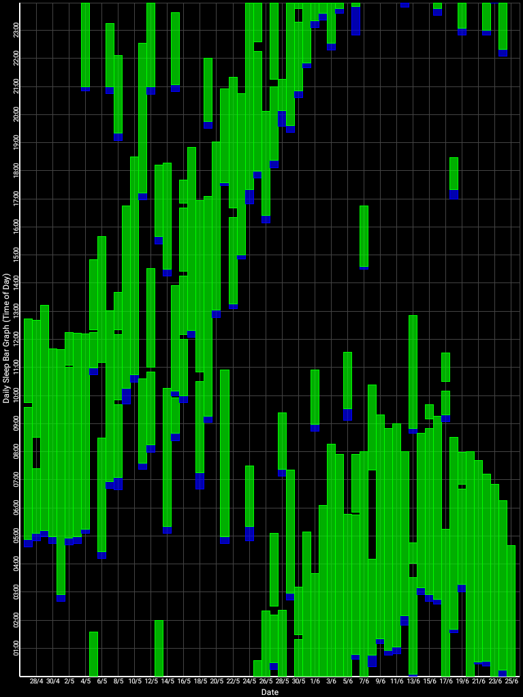
This experiment with very long light therapy was done after 1 more month of entrainment as can be seen. The very long light therapy resulted in a staggering reduction of circadian period tau under 24h at 23.5h on average and 22.5h the last day! Everything else was held constant (same melatonin intake time, same meal eating time, same daytime activities and environment), only light therapy duration was extended to reduce the circadian period under 24h.
Before this working therapy, I tried: 1- melatonin only, 2- light therapy lamps + melatonin, 3- strict ketogenic diet only with timed meals (time-restricted feeding), 4- intermittent fasting (or even complete fasting for a few days), 5-carbs-only diet, and of course strict sleep hygiene, but none of those worked.
The latest working therapy protocol designed by the author, which worked for 2.5 months and reproduced for 4 months (still ongoing) at the time of this writing, is named VLiDACMel, which stands for:
- Very long Light therapy at wake-up (after minimal core body temperature),
- Dark therapy in the evening,
- Avoid eating Carbohydrates when Melatonin is high in the blood,
- Take exogenous instant-release Melatonin timed before DLMO (measured via core body temperature or approximated via 3 days average of wake-up times).
- And always curate a sleep diary to assess changes in the circadian rhythm phase and properly adapt the treatments and to assess the conditions to optimally sleep restoratively.
The threshold to consider any treatment effective was set to 1 month of entrainment, entrainment being defined as an average wake-up time under 1 ultradian cycle (a time window of 1.5-2h), such as wake up between 9am and 11am.
Concisely, this therapy is founded on the following 3 points:
- Light exposure control: light therapy glasses Luminette at wake-up (or another light source of 500lux with optimized light angle to stimulate ipRGCs in the nasal retinal hemiregion) to phase advance and hence reduce circadian period (biological day duration). The exposure must be "very long", so use for 2-5h from wake up using relatively low intensity bright light of 500 lux. Exposure duration to light therapy can be modulated to fine-tune the wake-up time (ie, with longer exposure, the participant will wake up earlier and earlier), and this modulation is the primary way this therapy allows for flexible readjustment of the sleep schedule on a daily basis without having to freerun a full cycle again. Light therapy must always be combined with dark therapy in the evening (ie, avoidance of light exposure to avoid unwanted phase delay), by using blue light filters and dimming the brightness of any light emitting device/lamps (or use blue blocker sunglasses if environmental light sources cannot be controlled).
- Sleep induction and consolidation by melatonin: use melatonin instant release pills, taken at a time calculated relatively to the individual's DLMO (not the bedtime). This both consolidates sleep (ie, ensures you sleep your full night and not wake up too early or in the middle of your night causing unwanted sleep deprivation) and phase advance (allow to sleep and wake up earlier). The effect of melatonin is additive with light therapy.
- Food timing and diet composition control: never eat after melatonin intake and reduce/minimize carbohydrates intake. In the experiment above, I was half the time under a strict ketogenic diet, and half under a balanced diet including carbs. The ketogenic diet is not necessary, but it can help at first before phasing it out.
Full protocol
This therapy aims to allow for the entrainment of the circadian rhythm to a 24h cycle (ie, entrainment is the stabilization of the sleep schedule) for individuals with a non-24 circadian rhythm sleep-wake disorder (ie, a circadian period longer than 24h). The therapy works by first waiting for the circadian rhythm to naturally and progressively shift towards the ideal wake up time, at which point the therapy should be started to "freeze"/entrain the circadian rhythm in its current state. In practice, this works by using tools that will phase advance (ie, reduce the circadian period), their combination being apriori additive. Since the individual's sleeping schedule does not necessarily follows the circadian rhythm, we will use the terms of "biological day" and "biological night" to refer to the day and night as defined by the circadian rhythm and hence the ideal sleeping schedule, not by the individual's current sleeping schedule.
A previous study found that a combination of melatonin and light therapy could entrain all 6 individuals with non-24, but with limited long term success. The protocol below attempts to address the long term issues by identifying the key parameters for successful entrainment and clarifying how to adjust the therapy on an individual basis to get the optimal results for long term entrainment and for the necessary day-to-day adjustments (eg, spectral composition and duration of light therapy, timing of melatonin, etc.), as well as adding new tools that were not explored before (such as food control).
The therapy was self-experimented by the author (34 years-old, formally diagnosed thrice over 10 years).
Disclaimer: The author thorougly designed and self-tested this protocol after several failed variations. The author does not guarantee that this protocol will work for anyone else, or that all steps are necessary, but each step laid down below were tested under many variations (by elimination or changing parameters), and this is the only combination that was found to consistently work so far. Please keep in mind that if the protocol is only done partially (eg, skipping some steps), this may reduce the effectiveness (or not work at all). But even all steps are followed, this may not work for some individuals. This protocol is shared in the hope it can be helpful for future research or for other individuals with non24.
Preparation phase
Two weeks before doing the therapy: sleep without alarms to fulfill your sleeping needs, and wait for your circadian rhythm to shift naturally until it's close to the target sleep schedule (particularly the wake up time):
2- Write down your wake-up time and falling asleep time every day in a journal (use Sleepmeter on Android). This will serve 2 purposes: you can get a formal diagnosis from a specialized sleep doctor with 2 weeks of sleep logs showing a non24 pattern, and it also allows you to better know what affect your sleep and better know your own sleep patterns. Indeed, it's not uncommon that we overestimate the duration of our sleep, and for non24 individuals the daily phase delay (ie, it's often shorter than you think).
3- Take this opportunity to get to better listen to your body and recognize the signs of sleepiness tiredness signalling your body is ready to sleep. It takes at least 2-3 days of good sleep (good duration AND circadian alignment) for the body to recover and feel fully working. For individuals with non-24, this can be a genuinely new experience to NOT feel sleep deprived, since they only lived under sleep deprivation before. It is extremely helpful to know what it's like to not be sleep deprived, and to learn to differenciate when you are sleep deprived and when you are not, as it will help in knowing when to adjust the treatments timing and dosage for you.
4- After the 2 weeks, calculate the average wake-up time over the last 3 days. Subtract the sleep duration you need to feel the most refreshed after sleep (usually 7-8h for adults) + 2 hours from this average wake-up time to calculate the DLMO (dim-light melatonin onset). Example: if the average wake-up time over 3 days was 6am, and you need 7h of sleep to feel refreshed, your DLMO is at 6-7-2 = 9pm. Subtract 2-4 hours from this DLMO time to get the ideal time window to take melatonin. Using the previous example, the melatonin intake window would be between 5-7pm.
5- Now, wait for your sleep to cycle and come close to the ideal time you would like to freeze in-place. Indeed, there is no proven way to cycle backward (ie, wake up earlier and earlier, also called phase advance), but if you phase delay enough (ie, sleep later and later, which happens naturally for people with non-24 and is called "freerunning"), you'll eventually reach the wake-up time you would like. If you are too eager and start the therapies while sleeping out of phase with your circadian rhythm, this will not work, may worsen your phase delay and increase sleep deprivation temporarily, and hence ultimately discourage you. Hence, it's crucial to be patient to wait for your biological night to be in phase with the actual night. This is usually noticeable as when the circadian rhythm is in phase with the day-night cycle, your sleep will be on average more restorative and longer. Start the next steps below when your wake-up time is around 2-4h before the ideal time you would like to wake up. Meanwhile, continue to write a sleep log.
- Note: Be careful to track the biological night's sleep and using this sleep session as a reference for all the calculations in this protocol, and not the siesta (nap time). Humans circadian rhythms naturally have a biphasic sleep with 2 sleep gates : one for the biological night sleep, and one for the siesta about 12h later, but then when sleeping during the siesta only a half night (3-5h) can be slept at most. Since both sleep gates are regulated by the circadian rhythm, knowing the timing of one allows to estimate the timing of the other: for example, if the siesta happens at 6-7pm, the biological night (the other sleep gate) is at 6-7am. See the Biphasic sleep section for more info. A very good indicator to differenciate both types of sleep in practice is the sleep duration, as the siesta can only lasts for half (3-5h) of the biological night sleep (7-9h on average for adult humans). Also, humans are more prone to do a siesta if chronically sleep deprivated (but do not avoid the siesta if you are chronically sleep deprived, as this will allow to reduce the sleep pressure and increase the likelihood you sleep during your biological night on the next days). Furthermore, the biological night sleep duration is dependent on sleep pressure, so that as a rule of thumb, if an individual sleeps a siesta, this amount will be subtracted from the biological night sleep: for example, if you sleep for 4h during the siesta, you can only sleep 4h during the biological night sleep ; if you sleep 2h during the siesta, you can sleep 6h during the biological night sleep. It's the bedtime that will be delayed, not the wake up time (eg, if your biological night sleep is 6am-2pm, and you take a 4h siesta at 6pm-10pm, then you'll be able to sleep your biological night sleep at 10am-2pm, not 6am-10pm, due to reduced sleep pressure so you'll need more time to build it before being able to fall asleep).
Reminder: it is crucial to wait for your circadian rhythm to be in phase with the ideal timing you wish before starting the therapy, as otherwise the treatments will be mistimed and hence will not work or even make your sleep temporarily worse, as for example light therapy can increase sleep fragmentation if mistimed.
For researchers, technically this preparatory phase is akin to a combination of a multiple nap protocol and a constant bed rest protocol, in that sleep and naps are permitted ad libitum in order to reduce or eliminate the effect of sleep pressure and avoid masking by alarm clocks or other factors. However, some factors such as light exposure, food timing and social events are not controlled since this is done in the wild. For these factors, asking the patient to log them such as by using the Pevlog app can allow to take them into account when assessing the circadian rhythm from sleep logs or actigraphy.
Entrainment therapy
- After the 2 weeks of natural sleep, use now this combination of therapies everyday, laid out here in chronological order of use during the day, and the major steps emboldened:
- Continue to maintain a sleep diary. This is the swiss army knife of non-24 management: the sleep diary not only helps with diagnosis, but it's also crucial to properly time the treatments relatively to the circadian rhythm. And if you decide to stop the treatments, the sleep diary will still be useful while freerunning to spot the conditions you need for an optimal long sleep session (ie, sleep in circadian alignment with your biological night). Hence, due to the ever changing circadian rhythm in this disorder, it's necessary for individuals with the non-24 disorder to always maintain a sleep diary.
- Very long light therapy: use 500 lux bright light therapy at wake-up for 2-5h with an angle towards your nose to "freeze" your circadian rhythm by constant phase advance or even reduce circadian period to less than 24h. Also stops melatonin production and increases vigilance and mood. This is the strongest tool to manipulate the circadian rhythm. Use light therapy glasses such as Luminette for 2-5h directly as soon as you wake up. If you are in a dimly lit environment, start with the eyes closed for a few seconds to allow for the eyes pupils to contract, before opening your eyes for the rest of the session. The longer the exposure, the proportionally more phase advance you will get. It's possible to increase the duration of light exposure to more than 5h, in which case you will wake up earlier and earlier (but be careful because the effect increases over time, being maximal at 10 days, so you may quickly end up waking up too early!). The lowest setting, 500 lux, is sufficient with the Luminette. Increasing the intensity is not necessary and the author did not notice a significantly greater phase advance (contrary to longer exposure), likely because light intensity has a lower saturation point than duration. Longer exposure will be necessary depending on age, as the eyes lens (cristallin) are obscuring and acting as a blue-light filter with age (see also here), although only melatonin inhibition is impaired by age but not the circadian phase advance which remains the same.
- If you want a cheaper alternative to the Luminette, any bright light should be sufficient to get some phase advance, although it will be less effective and reliable than the Luminette since it's enriched with blue light and it's very ergonomic with a precise and constant distance to the eyes. A computer screen at max brightness can be sufficient (if it emits at least 100 lux), or simply changing the orientation of your work desk to get more sunlight can make for a "free" light therapy, as long as you get at least 500 lux. This can be tested with a lux meter app on most smartphone by using the light sensor that is usually included to automatically adjust the screen brightness depending on environmental light exposure. Several users reported success with various DIY devices, such as make-up mirror lights, strong neon lights or with a cheap $30 Beurer TL30 lamp. Just ensure the light is close enough to your eyes to get enough lux. The light source also needs to be oriented in the peripheral view as to target either the parafoveal or nasal region of the retina as these regions much more effectively suppress melatonin.
- Bright light therapy is even more important if you use more than 1mg of melatonin (supraphisiological levels), because there will be residually higher levels of melatonin next morning that will cause drowsiness, and bright light therapy can forcefully inhibit that. Suppressing melatonin by light in the morning can reduce the carry-over hangover when taking a supraphysiological dose because of the photic history (see also here) and because light eliminates melatonin faster than natural elimination.
- Light is likely the most powerful tool we have to control the circadian rhythm, as it was shown in animals that light can entrain even without a pacemaker.
- Light also increases serotonin levels and hence vigilance, particularly at wake-up when sleep inertia is at its highest, since light impacts both the circadian rhythm C and the homeostatic (sleep pressure) process S (which makes sense since cordycepin, an adenosine analog and adenosine being the biological basis of the homeostatic process S, has a huge impact on the circadian rhythm C, showing that both processes are inter-dependent). Hence, the control of light exposure using a combination of light therapy and dark therapy, through the modulation of both light intensity and color, is an optimized therapy.
- Light therapy improves mood as much as antidepressants, and is even recommended by some authors as a first-line treatement for seasonal and non-seasonal major depression.
- During the rest of the day, after the wake-up light therapy, it is advisable to continue to be exposed to bright light throughout the rest of your natural day, in order to optimize photic history, as it was shown that 6.5h of bright light exposure (whether continuous or intermittent) at wake-up shifts the circadian phase way more than only 1h of light exposure, and with continuous light suppressing melatonin more than pulsed light (hence continuous light is likely more efficient to increase vigilance). Hence, contrary to what previous research suggested based on the light PRC curve, it seems there is virtually no limit to how much phase advance can be obtained with longer exposure to bright light. See also this reddit comment.
- Although bright light exposure matters more in the morning for circadian rhythm entrainment, being exposed to bright light during the whole biological day allows for a more consolidated sleep. Hence, after the morning light therapy session is done, it's preferable to stay exposed to bright light of at least 500 lux for most the rest of the day. If this is not possible, either buy a bright neon light, or do a longer light therapy session in the morning to compensate for the lack of light exposure the rest of the day.
- During the first few days of light therapy, the sleep schedule may see some chaotic variations in the timing. This is normal and shows that the light therapy works, the sleep schedule should stabilize over the next days.
- Just like melatonin, the optimal light intensity and duration will need some trial-and-error, since there is a 50-fold difference in light sensitivity across individuals.
- It takes about 10 days for light therapy to be fully effective, because of photic history. This means you will notice a snowball effect where light therapy may produce more phase advance over time (ie, your wake up time will stabilize more and more or even be earlier and earlier depending on the light therapy duration).
- CONTRA-INDICATIONS: bright light therapy can NOT be used by individuals with epilepsy or macular degeneration or other retinal diseases or malformations (eg, aphakic people born without crystalline lens and pseudophakic who received intraocular lens implants), as these populations are at higher risk when using light therapy. Light hypersensitivity (photophobia), as is common in people with ADHD and can be caused by drugs such as methylphenidate, should be considered carefully. Here is a list of drugs potentially causing light hypersensitivity (photophobia). Ask your physician if light therapy is safe if you have light hypensensitivity, and restrict usage of Luminette to the lowest light intensity setting of 500lux, and always start by closing your eyes for 30 seconds when turning on the light therapy to allow the pupil to contract and avoid side-effects associated with sudden bright light exposure.
- Optional: Timed big main meal, which is to take your main meal at the middle of your circadian rythm's day. This synchronizes your circadian rhythm thanks to your intestines regulation of the circadian clocks (it's the biggest producer of melatonin). You can eat a breakfast, but it should be relatively small, and there should be only one big meal during the day (eg, the sort of meal that you feel like you ate enough for the whole rest of the day - but be careful of not over-eating!). More than entraining your circadian rhythm, timing meals allows to avoid circadian misalignment, as eating food during your biological night or too close to it can impair several regulatory functions such as insulin and glucose. This is true not only for non24 and DSPD but also for typical sleepers as well, although the former may be even more at risk due to a mutation in melatonin type 2 receptor (MT2) which seems to be more prevalent in individuals with a circadian rhythm disorder.
- Important: Reducing the quantity of consumed carbohydrates is highly beneficial in any case, as each 1% reduction improves the metabolism and reduces risks of obesity and metabolic disorders, including sleep, according to a meta-analysis. It's also an advised treatment to deal with postprandial sleepiness and particularly reactive hypoglycemia.
- Optionally, it's possible to follow a strict ketogenic diet with timed big main meal. It's not necessary for entrainment, but the ketogenic diet allows to eliminate the effect of carbs (postprandial sleepiness, sugar crash) as well as disconnect the digestive clock with the brain circadian clock, hence it can ease entrainment. The effects will start only after you reach a ketosis state as indicated by the highest 2 levels on the ketostix (measurement bands of ketosis from urine). Following a strict ketogenic diet is kind of the extreme of the carbohydrate reduction treatment for postprandial sleepiness. A strict ketogenic diet, as defined for epilepsy treatment and diabetes management, is a diet with limited carbohydrates (<=50g of wet carbs (sugar+fibers), including <= 20g of sugar carbs per day), medium proteins and lots of lipids (fat). Proteins should be kept in limited amounts, as to not compensate for the lack of carbs by eating too much proteins, as proteins will get converted to carbs, preventing reaching the highest levels of ketosis as indicated by the last 2 colors on the ketostix. In practice, the author of the present document observed the following during self-experimentation:
- Desynchronization of the whole body circadian clock, which has two paradoxical effects in practice: 1- a faster daily phase delay during freerunning (1h of delay per day in the author's case, instead of 30min/day usually); 2- reduced daily phase delay (ie, shorter circadian period) during the entrainment phase. This may be explained by the preliminary evidence on mice showing that the ketogenic diet can modulates the body's circadian clock, so that under ketosis, food has an increased circadian rhythm resetting effect, by increasing the intestines time clock gene expression and switching off liver's time clock genes and melatonin production — in other words, the peripheral (ie, body) circadian clocks will rely more on the food timing, which is a lot easier to control than other zeitgebers, and with bigger meals having an increased resetting effect. Another study on mice also observed that the ketogenic diet induced a shorter circadian period and hence a phase advance.
- Reduction of the sleep duration (by one ultradian cycle, so about 1h30-2h shorter sleep) while improving sleep quality (so there is no loss in sleep even though the duration is smaller, which eases the maintenance of a stable sleep by compensating the too long awake period of individuals with non24 by a shorter sleep), as also observed on a study on epileptic children under the ketogenic diet.
- Reduction of hunger (eases the avoidance of the detrimental melatonin/insulin/carbs interaction in the biological evening).
- If you choose to do a ketogenic diet, plan to start it ahead, at least 2 weeks before the rest of this protocol, as to have enough time for your sleep to adapt and stabilize with the new diet. Also make sure to use vitamins and minerals supplement, and salt a bit your homemade food, to avoid the risk of electrolytes insuffisance contributing to the dreaded keto flu. If the strict ketogenic diet shows efficacy to you for entrainment, you can later transition back to a healthy diet (such as the scientifically designed DASH diet as recommended by the NIH, and combine with the openfoodfacts.org search engine filtered by Nutri-Score and NOVA to find healthier food products in practice) with carbs in reduced quantities compared to your old diet, and you should also keep the benefits in insulin resistance reduction even after stopping the ketogenic diet (as long as you don't revert back to your old diet).
- Kickstart your melatonin production with a melatonin pill and hence sleep and help its consolidation, several hours before bedtime: take melatonin in instant release form, if possible sublingually dissolving tablets. The optimal efficacy of melatonin is dictated by two factors: 1. ingestion before DLMO, 2. dosage high enough or timing close enough to DLMO for exogenous melatonin in bloodstream to overlap with DLMO. The timing is crucial and requires some trial-and-error, as melatonin must be taken relatively to one's current circadian rhythm (ie, bedtime and wake up time), NOT the target bedtime contrary to what current regulations state. Indeed, it's necessary to take melatonin before the body starts producing it (called the DLMO point), and the body starts producing melatonin a few hours before you go to bed, as melatonin is one of the things that cause sleepiness feelings and allow to sleep a full night (sleep consolidation). The dosage does not change the magnitude of circadian phase shifting effect, so it can be as low as 0.1mg or up to 3mg, but only higher doses > 1mg (supraphysiological) can produce hypothermia (as also shown here), so that "nighttime increase in sleepiness was achieved only after administration of high doses" and doses such as 3mg are "more likely to produce a substantial phase shift" although this needs confirmation. However, dosage does matter for the timing of intake, as it's necessary for melatonin from pills to overlap with the natural endogenous melatonin production (DLMO), as to simulate an earlier dusk and trick the body into thinking it started producing melatonin earlier. Since higher dosages remain longer in the bloodstream (see also here), they provide more leeway in timing and produce effects even if taken very early, whereas lower dosages need to be taken much closer to DLMO (but never after - hence lower dosages require more accurate calculations of DLMO), hence higher melatonin doses (1-3mg) are likely easier to time for beginners. However, both the DLMO timing (60% have a DLMO outside the 2-3h before bedtime range) and the dosage (10-fold variability) required are highly variable between individuals. Although melatonin can shift the circadian rhythm via the type 2 receptors, its main purpose is to stabilize the circadian rhythm and consolidate sleep, hence to maintain the benefits from more efficient tools for phase advance such as light therapy. Melatonin is also a powerful antioxydant that reduces or eliminates the detrimental health effects of sleep loss, but this (receptor-independent extracellular) effect is only obtained with very high doses (8mg/kg/day for humans).
- Theoretical optimal timing for melatonin intake: 3h to 4h before the DLMO (dim-light melatonin onset, the time at which the body starts producing melatonin), which means up to 7h before the time you usually fall asleep. The DLMO can be assessed by salivary samples every 30 minutes in a clinic by spending a whole day and night in a dim-lit room (<50 lux) as to allow melatonin to build up, uninhibited by any light. This procedure is hence very cumbersome. Although this is certainly useful for other circadian rhythm disorders with a fixed circadian rhythm but shifted such as DSPD, the utility is greatly reduced for individuals with non-24 since their circadian rhythm and DLMO are shifting all the time, hence an assessment will become obsolete in a matter of days.
- Practical optimal timing for melatonin: Since daily DLMO assessment is impractical for individuals with non-24, the other way is to approximate it. There are mostly 3 ways:
- 3-5h before natural bedtime (not target bedtime), by assuming that on average DLMO happens 2-3h before the natural bedtime as in Lewy's PRC. However, it was shown that the DLMO-to-bedtime is highly variable between individuals, 60% have a DLMO bigger or smaller than 2-3h before bedtime (range: -0.3h to 5.8h). Hence, another study rather recommends 5-7h before natural bedtime (3-5h before DLMO). However, a study shown that bedtime is a poor predictor of the DLMO, hence it's easy to mistime melatonin administration when using bedtime as the basis of calculations.
- 9-11h from the midpoint of the sleep period. The midpoint of the sleep period(s) (see also here and here) was found to be the most reliable predictor of the DLMO and the circadian rhythm, and hence sleep midpoint should be the preferred method to calculate the adequate timing for melatonin administration.
- 13-15h from your wake up time, by translating the results from this study about the optimal timing relatively to the sleep midpoint. Indeed, the wake-up time is a reliable predictor of the DLMO and the circadian rhythm similarly to the sleep midpoint, and the author observed it can be used to monitor entrainment (see the dedicated section below).
- There is also an experimental "melatonin split-dosing" scheme, where a low dose of melatonin is taken before the DLMO (pill taken 3-7h before natural bedtime) to maximally shift the circadian rhythm, and a higher dose 1-2h before natural bedtime to maximally induce sleepiness (similarly to a sleeping pill). This approach is not yet validated and was only used for one published sighted non-24 case. The idea with split-dosed melatonin is to target both types of melatonin receptors with an optimally timed and dosed melatonin for each separately, instead of trying to target both with a single pill. In addition, this also doubles the likelihood of getting at least one timing right, and hence reduce the risk of disentrainment. However, given that exogenous melatonin needs to overlap with endogenous melatonin for maximal circadian rhythm shifting, it may be more effective to also use a high melatonin dose before DLMO (and hence high dose for both intakes). Thus, the author would recommend to test 1-3mg before DLMO (3-7h before bedtime), and 2-3mg 1-4h before bedtime.
- Notes:
- these timings are given for a 25-45 years-old adult with an average ideal sleep duration of 7-8h. Younger individuals sleep more and elders sleep less, hence the timings should be recalculated accordingly.
- since there is so much variability between individuals, and also the optimal timing depends on the dosage, finding the optimal dosage for you will require some trial-and-error, so consider the timings above as starting points and feel free to experiment and change the timing of melatonin until you find the sweet spot that works best for you.
- if the wake up time changes after starting the therapy (eg, waking up earlier), then the melatonin intake time must be recalculated accordingly for optimal efficacy.
- the current DLMO point can be approximatively calculated more robustly given the last wake up time as follows (assuming as in Lewy's PRC that it's 2-3h before natural bedtime): DLMO point = (wake up time - optimal sleep duration (~8h for non-old adults) - 2) mod 24. However, the DLMO point is highly variable between individuals, so the number "2" (as in 2h before natural bedtime) in the previous calculation may be a different value for different individuals.
- What also matters is that it dissolves in sublingual instantly, as instant-release melatonin is more effective - if you can't find an immediate/fast release melatonin, you can use long/prolonged release melatonin but crushed to avoid the coating (parent compound) from delaying the melatonin intake) during the ideal melatonin window time you calculated before.
- Melatonin not only helps with phase advance, but also consolidates the 2nd half of your night's sleep, so you are more likely to sleep your full night rather than be woken up earlier because of various disturbances.
- Ensure melatonin quality and preservation against environmental degradation:
- Over-the-counter melatonin production quality is not regulated as a medical drug, hence the dosage can vary 10-fold from pill to pill. Prefer sublingual tablets containing only melatonin and no other "sleep-inducing" compound, as the only-melatonin tablets were found to be the most consistently qualitative with a dosage closer to what is claimed on the label. The same study found that chewable gummies are the worst in terms of variability of melatonin dosage. In the USA, prefer melatonin supplements with the USP seal, which means that the product was voluntarily tested and meets US Pharmacopeia Convention standards, or from a pharmacy.
- In some cases, some individuals may feel excited after taking melatonin. This may be due to serotonin residues which are present in ~26% of over-the-counter (low quality) melatonin products. It's then advised to change for another (higher quality) melatonin product.
- Since melatonin degrades quickly when in contact with air (but not temperature) in tablets from the 2nd day and attaining -41% of efficacy on the 6th day, and even faster in liquid form (see also here), the packaging is crucial. The best packaging is a sealed wrapping per dose, such as aluminium foils commonly called "blister packs", which are common in European countries but unfortunately rare in USA, so that each tablet is protected from environmental degradation until it's used. Avoid bottles, as all tablets will begin to degrade from the moment the bottle is opened to take the first tablet.
- If the effect of melatonin drops dramatically after a week or 2, or when you buy a new package, then an issue with quality control or environmental degradation is likely the reason, since there is no habituation to melatonin. Try to buy another brand of sublingual tablets of pure melatonin (no other compounds) in blister packs.
- Melatonin has 2 effects because there are 2 types of receptors: type 1 causes drowsiness/sleepiness, and type 2 causes a phase advance of the circadian rhythm. The effect of drowsiness is most obvious as it happens very fast, under an hour, after taking melatonin pills. This is why most users use melatonin close to bedtime, but this doesn't allow the benefits from the circadian rhythm shifting effects as the intake is later than the DLMO. If you want the circadian rhythm effects, take melatonin before your DLMO, as calculated with the methods outlined above.
- Higher doses of melatonin are at the expense of drowsiness just after and up to the next morning. If you experience brain fog in the morning after taking melatonin the evening before, you can try to reduce the dosage or use bright light therapy on wake up (choose blue light emitting devices as blue light is the most effective to reduce drowsiness and increase vigilance compared to other colors such as green light which has no effect on vigilance).
- Using a higher dosage of melatonin is not going to be harmful, it's just that you'll have too much melatonin in your bloodstream for what you need, so that there will be huge residual levels the next morning and you'll feel very drowsy and hard to wake up. But otherwise no detrimental health effect, and in fact high dosages of melatonin have more antioxydant effect as this is an extracellular effect (receptor-independent effect) and it needs a much higher concentration than what is needed to shift the circadian rhythm (receptor-dependent effect). But for circadian rhythm disorders, you want to avoid the next-morning drowsiness so it's best to use the lowest dose that mimics the dosage you would have in your bloodstream with natural endogenous melatonin.
- Hence, for first timers with melatonin, 1 to 2mg is likely the best dosage for adults (5-10mg is better for children), because it's big enough to ensure an effect, but not too big so that the pill can be split in half to get down to physiological levels of melatonin (ie, as much melatonin as you have naturally in your blood during sleep, hence no brain fog the next morning).
- Children and teenagers have naturally much higher levels of melatonin in the blood than adults, hence higher doses such as 5-10mg are necessary for them. A 1-year long-term clinical trial found melatonin to be effective with dosages between 2mg to 10mg per day in children.
- The opposite is also true: older adults need lower doses of melatonin to get the same effect than younger adults.
- Melatonin is contra-indicated for people with the Restless Legs Syndrome (RLS) and other dopaminergic related diseases, as melatonin interacts with dopamine and can make the symptoms worse (although it still improves sleep, particularly for people with a comorbid circadian rhythm disorder such as non-24). Some users reported that lower doses of melatonin produce less side-effects so using a <1mg melatonin dose may be more manageable.
- Do not fear overdose, melatonin has been used up to 6600mg/day for 35 days in humans without any serious adverse effect.
- Avoid eating and caloric drinks (especially carbs) melatonin is high in the blood, to prevent insulin inhibition and hyperglycemia during the biological night: the pancreas has both insulin and melatonin receptors so that each one inhibits the other. When melatonin is high, insulin is inhibited and if you eat, then glucose will remain high in your blood and cause a superficial diabetes throughout the night, as insulin is necessary to process glucose. Hence, melatonin impairs glucose processing, and insulin impairs melatonin processing. This may have detrimental effects on health as it's hypothesized to be one of the cause of chronic diabetes type 2 and obesity, and may also disturb the ability to sleep as the high blood glucose and hence available energy will cause the individual to feel more energetic past bedtime. Researchers suggest that this may be a biological safeguard mechanism to avoid hypoglycemia during the night since we spend a long time without eating while we sleep, and hypoglycemia can be very dangerous (diabetics often have this issue at night time), but this safeguard assumes that the individual do not eat when supposed to sleep by the circadian rhythm and melatonin rhythm.
- In practice, this means you need to avoid eating during your biological night, as well as avoid eating at least 2h or ideally 4h before your natural bedtime. Avoid eating too early in your biological morning, so if for example usually you sleep until noon but today you have an appointment at 8am, skip breakfast (too early breakfast was demonstrated to be detrimental to the health of people with DSPD). Also if you take melatonin pills, don't eat after, always eat before, and it doesn't matter if it's daytime or nighttime, eating after melatonin intake is always bad.
- Low to no-carbs 0% drinks (including water) are allowed at any time, and it's possible in theory that low-carbohydrates food such as ketogenic diet may have less of an impact on the circadian rhythm and health, although this needs confirmation.
- The glucose processing impairment by melatonin is worsened for those with a genetic mutation in the melatonin type 2 receptors (MTNR1B rs10830963 and rs10830962 and rs1387153). This mutation is associated not only with increased diabetes type 2 risk and other metabolic syndromes such as obesity, but also with circadian rhythm disorders such as DSPD (see also here) and non24. Because of these strong links between metabolic syndromes and circadian rhythm disorders, researchers now calls to rename them as circadian syndromes. Hence, in practice, it is advised to plan meals at times when melatonin levels are low (see also here). This means no meal past melatonin pills intake, during the biological night and not too early in the biological morning (ie, skip breakfast). The absolute time does not matter, what matters is when you eat outside of your biological night (eg, if you currently ideally sleep during the day, you can safely eat at night). Indeed, it was shown on individuals with DSPD that if they ate too early (particularly those with a constrained sleep schedule, ie, waking up earlier for work), their glucose tolerance was worse in the morning due to melatonin being still present in the body due to their delayed circadian rhythm.
- Figure 1 of this study on DSPD shows that there are two variants of the mutation: rs10830963C and rs10830963G, with those with two G alleles (GG) having a DLMOff even later than those with only one (CG). The author of the current document highly suspects than individuals with sighted non-24 may commonly have the GG mutation.
- This strategy is kind of, but not exactly like, a time-restricted feeding schedule, but instead of restricting by time, meal timing is restricted by when melatonin is expected to be present in the body. This may hence explain the anecdotal reports of sleep improvements after doing a time-restricted feeding schedule such as intermittent fasting. If this is the case, equal benefits in terms of sleep and circadian rhythm can be obtained by just avoiding to eat when melatonin is high in the blood.
- The author of the present protocol found in practice that it's necessary to avoid meals at least 6h before the sleep onset (fall asleep time) for the last meal to have no impact on the circadian rhythm.
- If you find it difficult to not eat at all for hours before your bedtime, then you can try to eat a ketogenic meal (ie, lipid/fat based meal), as theoretically this should not produce an insulin nor glucose response and hence should have less impact on the circadian rhythm (although the guts will still have to process food, hence being active and this may disturb sleep - but theoretically without the detrimental metabolic interaction between insulin and melatonin).
- Prevent light from interfering with melatonin production by using dark therapy blue blocker sunglasses 3-5h before natural bedtime (start dark therapy when melatonin pills are ingested): light can suppress both melatonin and shift the circadian rhythm (independently of whether melatonin is suppressed, see also here and here). Both the intensity and color of light (see also here and here) matter in circadian rhythm shifting and melatonin suppression by modulating the ipRGCs receptors (see here for intensity, and here and here for color), hence you need to avoid bright lights in your biological evening, both by dimming down all lights, and by filtering blue light. Dark therapy is necessary to keep a robust gain from the other therapies, by ensuring there is no unwanted shift in your circadian rhythm by uncontrolled factors such as uncontrolled light exposure.
- The author strongly recommends the UVEX glasses with SCT-Orange coating as blue light filters, they are very inexpensive and highly effective according to several independent reviews (see the dedicated section on Dark Therapy below). Use the UVEX Skyper if you want to hang outside with it, or the UVEX S0360X Ultra Spec if you want to use prescription glasses under, as the Ultra-Spec are big enough to fit prescription glasses under, but not the Skyper.
- For reliable dimming in uncontrollable environment (eg, outside your home), a blue blocker SUNglasses such as UVEX amber glasses and manually tinted in black using VLT shading films for cars windows is a very easy way to do both dimming and blue light filtering in any environment without any hassle.
- If you don't have access to such glasses, a more inconvenient and less reliable but working alternative is to modify the environment: dim down / switch off all lamps (including your computer screen intensity) and install blue light filters softwares on your computer (advised: LightBulb or f.lux) and smartphone (Twilight on Android). If you have a changing color LED lamp (eg, Living Colors), use it as a bed lamp by setting it to full red color (the blue LED should be switched off if you selected an appropriately full red color).
- Why start the dark therapy 2-4h before target bedtime? Because melatonin takes 1-2h to produce drowsiness effects from its DLMO point, and it takes 1-2h for melatonin production to reach it's DLMO level from the moment it starts its production (or from when the light inhibition/exposure is stopped). Hence, the dark therapy should be started 2-4h before the natural bedtime. Whereas light therapy phase advances your circadian rhythm (ie, you wake up earlier), dark therapy prevents unwanted phase delays due to light exposure, which concretely makes you feel more fatigued at the wanted time.
- Optimize sleep preparations and hygiene:
- Use a black silk eye mask and outer ear plugs in silicon (and/or a white/pink noise machine) to reduce the highly detrimental effect of noise and disturbances on your sleep efficiency. This is NOT optional, having any disturbance during your sleep will annihilate any effort you can undertake otherwise! Sleep disturbances can indeed have a very strong detrimental effect on sleep quality and the circadian rhythm that can carry over several days after the disturbances happened. Even with the eyes closed, a light of only 5-10 lux can phase shift the circadian rhythm and inhibit melatonin, and this phenomenon is actually used for "light masks", a kind of light therapy. Noise can cause paranoia and delirium, just like prolonged sleep deprivation, which can be improved by ear plugs. Night-time disturbances are the major factor causing sleep inertia (aka brainfog), more than sleep deprivation, and particularly when the disturbances happens during the deep (slow wave) sleep stage. Hence, these tools are crucial and should be considered as extensions of dark therapy, to ensure there is no unwanted shift in your circadian rhythm by uncontrolled factors. An inexpensive silk black eye mask will do, and outer earplugs in silicon are advised as they are much more comfortable than inner earplugs (they reduce the proliferation of bacteria and hence itchy ears). The combination of both an eye mask and ear plugs is more effective than any alone by increasing both deep sleep and sleep efficiency.
- Mind the ultradian cycles (20 minutes "sleep gates" every 1h30) and the dopaminergic forbidden zone of sleeping. When you feel sleepy, you can expect this feeling to last only 20 min, and then to go away. The next sleep gate, where the tiredness feeling will reappear for 20 min, will be about 1h30 after the last gate. The gates aren't all equal, there is one with a maximum sleepiness feeling, and the others will have a reduced feeling. Trying to sleep at these 20min sleep gates allow to fall asleep fast, sleeping outside may be possible but will be more difficult. See the relevant subsection below for more information on sleep gates.
- If you can't sleep (eg, missed the ultradian cycle window), then wake up or sit and do something else than trying to sleep until the next window to sleep.
- Identify any factor that can impair your sleep and buy the necessary workarounds. Anything that can prevent disturbances on your sleep is well worth it. If it's too warm temperature, buy a fan. If it's mosquitos, buy an anti-mosquito net for beds and/or a anti-mosquito lamp.
- We are the product of our environment. If your environment is not adequate for good sleep, such as noisy neighbors, no tools can completely fix it. Consider moving to another place if you can.
- Optional but strongly advised: take multivitamins and minerals, including B12 and magnesium supplementation every morning. B12 vitamin is known to amplify the magnitude of the circadian rhythm shift of light therapies (see also here) and B12 supplementation entrained a few individuals with non24 (see also here and here). Magnesium also affects the circadian rhythm (studies here and here). Vitamin D deficiencies can affect the circadian rhythm and it interacts with at least 2 clock genes. Vitamin B6 helps with serotonin and melatonin production. Supplements are not going to fix your circadian rhythm, but deficiencies can have a detrimental effect on it, although it's not always a fix as shown by the ineffectiveness of B12 in a placebo controlled trial on DSPD. These vitamin deficiencies may be caused by gut microbiota dysbiosis, such as bacterial overgrowth (ie, candida albicans). Furthermore, deficiencies in other vitamins and minerals may impact mood (eg, magnesium), neurology (eg, vitamin B6, B12) and the circadian rhythm (magnesium and B12), so by taking a multivitamins and minerals supplementation you eliminate these potential factors on your sleep easily. Plus, if you do a strict ketogenic diet, this supplementation will help avoid electrolytes imbalance (but you may also need to supplement in salt). For B12 supplementation, use cyanocobalamin form, as it can be converted by the body into both forms of B12 (methylcobalamin or adenosylcobalamin). Some Discord users with diagnosed chronic B12 deficiencies influencing their circadian rhythm reported the B12 shots are more effective than the pills.
- Although optional for entrainment, vitamins and minerals supplementation can be necessary for some individuals in order to sleep, as in the author's case. Indeed, without supplementation over 40 days, the author experienced limbs swelling, hands cramps, muscular weakness and joints and chest and limbs pain, to the point where these symptoms prevented sleeping more than 1h30 in one go, which was of course unsustainable. These symptoms were signs of a peripheral neuropathy, due to vitamins or minerals deficiency. Although the exact deficiency could not be determined yet, it was likely a combination of genetic predisposition in Vitamin B12 deficiency (the author possess the AG variant in the FUT2 rs602662 location), which is known to be capable of causing peripheral neuropathy (although other vitamins deficiencies can also be responsible — see also here), and a too restrictive diet (due to this experiment, a very precise diet was devised and used everyday to reduce the effect of food composition on the circadian rhythm). Vitamin-induced peripheral neuropathy is a serious disease that can cause permanent nerves damages.
- Continue to write down a sleep diary of your sleep and wake up times, optionally along with any other information you think pertinent for your sleep. The sleep diary is a crucial tool to spot early on any transient (dis)entrainment and other changes in your circadian rhythm once you get entrained, so that you can react fast enough to adapt your therapy to stay entrained (eg, by increasing or shortening the light therapy's duration or melatonin timing or dosage).
Continue this combination of therapy strictly (respect the hours and use melatonin and light therapy everyday!) for at least 10 days. Indeed, because of carry-over effects such as photic history and gut microbiota adaptation, it takes several days to a few weeks for the body to adapt to both light and dietary (including melatonin) changes. This means that when starting a circadian rhythm therapy, it will take about 10 days for the full effects to be seen, and it will take as much time when stopping the therapy for the effects to wear off. But you should already see some effects a few days in, such as mood and vigilance boost from the first use of light therapy, and some circadian rhythm phase advance after 2 days of light therapy.
In practice, the first week you should see a reduction of your phase delay, and the next week your circadian rhythm (in particular your wake-up time) should be somewhat stable, and it will get more stable along time as you continue with the therapy. The time windows need to be respected, but a slight change of +-30min from day to day is OK in my experience (eg, taking melatonin 30min later or earlier, and there is more room for food timing as long as you do not eat past the melatonin intake time).
In case there is some unexpected event and you miss the therapy one day or use an alarm clock to wake up to get to an appointment, keep in mind that long napping is allowed and advised, as it reduces most of the health issues that sleep deprivation causes.
Monitoring
- To optimize dark therapy, you can use a free "lux meter" app on your smartphone, with the screen directed at the light source to check the light intensity (lux). Lux varies with placement, orientation and distance, so it is important to orient the light sensor on the smartphone screen (usually at the top) directed at the light source, at eye level and at the distance you will usually be from the lamp. What lux intensity is low enough for dark therapy? The lower the better, but below 40lux should be fine, below 20 lux is great. If a light source (eg, lamp) is too intense, try playing with distance by placing the light source further from where you will be in your room when you'll use the lamp. If you have a Luminette, you can calibrate your lux meter app by measuring the Luminette 3 settings, the readings should be 500 lux, 1000 lux and 1500 lux. Remember that light intensity is only one factor, the other being the light color, which should be as red as possible (to reduce/eliminate blue and green colored light). Spectral sensors exist but not in smartphones unfortunately so just use your eyes: if a light source is red, it's fine; if it's yellow, it's good enough but not ideal.
- body temperature monitoring as a proxy for the circadian rhythm even when not sleeping or sleeping in circadian misalignment (eg, such as when using alarm clocks due to appointments/work), in which cases the sleep diary is unreliable but temperature monitoring is reliable to reflect the circadian rhythm. TODO: expand this section when milestone 2 is completed.
Safety-Risk analysis
- Apart from the detrimental interaction with insulin and glucose, melatonin is generally considered a safe molecule, being a major antioxydant of the body along with many other health maintenance roles such as male reproduction and also female reproduction (see also here, here and here with not only melatonin but circadian cycle impact on fetal and placenta physiology), and is known to be a major neuroprotector and likely a major anti-cancerigen. It also isn't addictive. It's impossible in practice to overdose with melatonin, no lethal dose was ever found, since even enormous doses up to 6600mg/day for 35 days did not produce any severe toxicity in 11 participants.
- Blue light in blue therapy glasses should be safe in physically healthy, unmedicated people. Most of them filter UV light, so this is not an issue. Also, Luminette and a few others constraint the blue light spectrum to a reduced spectrum and intensity that should not be dangerous at all, and these glasses are certified by the stringent european union safety standards.
- Long term meat-based ketogenic diet may lead to cardiovascular issues and premature death, but vegetarian/plant-based ketogenic diet seems to be on the contrary slightly positive for health.
- Timed meals are shown to be good to regulate glucose and reduce the risk of metabolic diseases such as obesity and cardiovascular diseases. Reducing or avoiding eating when melatonin levels are high was shown to reduce insulin intolerance and hence risks of metabolic diseases.
- See the related sections in Troubleshooting for a more detailed discussion for each tool.
Recommended equipment
Equipment for circadian rhythm entrainment
- Luminette 3 (229€). Will be the primary treatment AND a calibration tool to evaluate other light emitting devices (to avoid them during dark therapy). It has a 30-days money back warranty (+ of course a 2 years warranty for defects in European Union), so you can test it for a month to see if it affects your circadian rhythm (it should work under 2 weeks of daily use), and if not you can send it back for free.
- Alternative: use a computer screen at maximum brightness at wake-up for several hours.
- Blue blocker glasses such as UVEX or laser safety amber/red glasses filtering wavelengths in the range 400-550nm. Add clip-on or VLT shading films to dim down light sources, or buy a laser safety glasses with lenses with reduced visible light transmittance (VLT).
- Alternative: use blue light filtering softwares such as f.lux or LightBulb on computers and Twilight on smartphones, in addition to screen dimmers such as Nelson Pires Dimmer v2 on Windows or Twilight on Android smartphones.
- Melatonin instant-release <= 3mg. The author of this document strongly recommends the sublingual Valdispert Melatonin 1.9mg Instant Release (mirror) (it's the one with pure melatonin only, not the one with "4 actions" because of including other compounds). This will help with stabilizing the circadian rhythm at the time you wish and feel sleepiness. Always prefer sublingual (orodispersible in french) tablets with no other compound than melatonin (besides of course a few conservative or flavor additives that are always present), as sublingual pure melatonin tablets are of higher quality in general, particularly for over-the-counter melatonin.
- Another person with non-24 recommended "Vitality NUTRITIONALS" which are sublingual instant release melatonin like Valdispert's, distributed by VitaminExpress www.vitaminexpress.org Made in the Netherlands, dosed at 1.5mg. However this is a bottle, not packaged in individually sealed blister pack, hence this may degrade after a week of opening the bottle.
- In UK, Pharma Nord Melatonine 3mg (not Melatonin Complex) was licensed in the UK for the treatment of jet lag, and hence should be appropriate for circadian rhythm disorders too.
- In the USA, there are only a few recommendable pure sublingual melatonin tablets in blister packs. One is Major Melatonin Tablets, 3 mg, 100 Count as sold by Walmart, another is webber naturals Melatonin 3 mg - 15 Tablet Blister Pack sometimes sold in 2 packs (30 days = 1 month). Alternatively, search for "melatonin blister pack sublingual tablet" or if no blister pack is available, at least search for "melatonin usp sublingual" (the USP label being a self-validation process). Do not worry about instant release or prolonged release, both should work anyway and if you take a sublingual tablet, it can only be an instant release since it's the coating that makes a prolonged release, hence prolonged release melatonin is always presented as an ingestible pill that will dissolves slowly in the guts. The author did not try these products.
- Lux meter app on smartphones using the smartphone light sensor (free). For objective assessment of light exposure (to discriminate what devices are OK before bedtime).
- Optional: DNA testing using Nebula Genomics, if MT2 receptor mutation, then also need to control food/glucose and melatonin mixup?
- Optional: smart alarm / chronobiological alarm clock, such as Sleeptracker watches which can vibrate, it's very efficient to ensure waking up despite sleep deprivation, but they do not fix sleep deprivation so the tiredness still appears during the day. Alternatives include Axbo and Sleep As Android app on Android smartphones (but apps are less accurate than wearables).
Wearable circadian rhythm monitor
TODO: This section is a work-in-progress, come back later for updates.
Although there is currently a "wearables revolution", it is still hard to find devices that can continuously (24/7) record vital signs with a sufficient quality (sampling rate, low noise) to be considered adequate for research or medical purposes. However, there are a few, which we could use and determine as adequate for the purpose of ambulatory circadian rhythm monitoring, potentially by the patients themselves.
The two major sensors that are the most informative to monitor the circadian rhythm are the temperature sensor and the ECG (with an accelerometer). The total for one iButton and a Polar H10 is less than 200 euros, and these devices will last for several years.
- Body temperature sensor: Maxim Thermocron iButton DS1925EVKIT (DS1925L starter kit, including DS9490R and DS1402D-DR8+ to connect the iButton to computers via USB). Cost: about ~$100 + conformable medical-grade tape such as Hypafix ~$10. If DS1925L is unavailable, can also use DS1922L but the internal memory is much shorter. For skin temperature monitoring and hence circadian rhythm prediction and objective assessment of treatment efficacy.
- Buy also velcro stripes to glue on the Polar H10 chestbelt if you want to combine both and as an alternative to medical tape.
- True 24/7 skin temperature monitoring setup, as the iButton can last 4 years with its integrated battery (then need to buy another one or can try to manually replace the battery as some researchers have done).
- Higher-grade alternatives:
- Greenteg CORE, can record core body temperature using Dual-Heat-Flux Method (a method that allows to sense the temperature 2-4cm below the skin, whereas iButtons only sense skin temperature). Costs about 300€, comes with a chest strap (no need for medical tape), can record up to 3.5 days of data on internal memory, battery lasts 6 days. However, to export the temperature data, it's necessary to buy a costly license (99CHF/month or 999CHF indefinite).
- ECG (heart rate and heart rhythm) + 3-axis Accelerometer: Polar H10. Costs about 80€. Comes with a chest strap. Battery: 16.5 days with one button (CR2320) battery.
- The Polar H10 chest strap sensor was selected because it's the only chest strap ECG available with a long battery (2 weeks!), and all other consumer devices can only capture heart rate. Furthermore, chest strap ECG is more reliable for long-term ECG acquisition than wet electrodes or other systems, because there is no wires and hence chest strap ECG is the only ECG technology reliable enough to capture ECG even during motion, which is unavoidable in continuous 24/7 use (and especially during the biological night for sleep acquisition!).
- The Polar H10 sensor needs to be paired via Bluetooth to a smartphone, and an app needs to be used at all times to record the ECG (because only heart rate can be stored on the internal memory). No cloud service registration required, all data is stored locally.
- Use the Polar Sensor Logger app on Android to log both the ECG and accelerometer data with the sampling rate of your choice (up to 200Hz/8G for the accelerometer and 130Hz for the ECG). It also saves the Heart Rate in a separate CSV file, and the extra columns represent the RR-interval in milliseconds. The timestamp format is in nanoseconds and the epoch is 1.1.2000. Note that the app only requires bluetooth, hence to save battery, the phone can be set to Plane mode and location can be disabled, everything can be disabled except bluetooth, and the screen can be turned off during data collection. Data is stored in realtime in csv files in the sensorDataLogs folder at the device's root, so that even if the logging is interrupted due to a bug or the device being out of battery, the last logging session won't be lost.
- It might be a good idea to buy a dedicated Android phone with a long battery, which can allow to continuously record up to 10 days with a single charge (the generated data with accelerometer set to 100Hz and 2G is 400KB/min total for accelerometer+ECG+Heart Rate, so this makes for 6GB for 10 days, or 17GB/month, or 200GB/year of data, so it all fits in any modern smartphone's internal memory).
- Using as a bluetooth receiver the Realme 6i and its 5000mAh battery (cost about 170 euros), the battery consumption rate is 10%/24h, hence up to 9-10 days can be acquired with one full charge.
- To achieve this and avoid background app kill, the Realme 6i with Android 10 needs to be setup as follows: set Background Processes Limit to 4 instead of standard limit in Developers Options ; disable Do Not Disturb mode ; in battery optimizations options (specific to Realme UI), disable all optimizations except for screen optimizations and standby optimizations ; finally, launch the Polar Sensor Logger app and Lock it (show the list of apps and then click on the 3 dots in the corner to see the Lock option), then launch the acquisition, setup 100Hz/4G for the accelerometer, then click on the Graph tab and click on the Pause button (after checking that the graphs were alright). Now switch back to the Main tab and you can turn off the screen and let the acquisition run. The data will be continuously saved in CSV files in the sensorDataLogs folder, even if the app or phone crashes at some point.
- Alternative to get an even longer battery bluetooth receptor: make an Arduino-based bluetooth low energy (BLE = BT 4.0) logger to microsd card. Some developers already made heart rate loggers for Arduino and Polar H7 chest bands (see also here and here), but not the ECG, although the SDK is open so that should also be possible to do.
- It might be a good idea to buy a dedicated Android phone with a long battery, which can allow to continuously record up to 10 days with a single charge (the generated data with accelerometer set to 100Hz and 2G is 400KB/min total for accelerometer+ECG+Heart Rate, so this makes for 6GB for 10 days, or 17GB/month, or 200GB/year of data, so it all fits in any modern smartphone's internal memory).
- Using the Polar Beat app, the H10 sensor can be configured to have a dual Bluetooth stream, so that it can send data to two different devices/apps simultaneously. This can be used advantageously to concurrently continuously record the ECG data on one device, and use another device (the day-to-day smartphone) for when you want to visualize your current heart rhythm in real-time. To do this, install the Polar Beat app, pair the sensor, then go to the settings, click on the sensor and the sensor's options will show up, and then you can enable the "2 BLE receptors" option.
- Using the Polar Beat app, disable GymLink and ANT+ to significantly increase battery duration.
- Combined with the EliteHRV Android and iOS app, the Polar H10 can be used for breathing relaxation exercises (fundamental resonance breathing etc), and also be used as a biofeedback tool.
- Big advantage of this setup compared to others: it really allows for continuous ECG, since there is no need to transfer data to restart a new session, as the phone's memory is used and it's vast. So only the smartphone's battery is the limitation, but it can be recharged while the acquisition continues, and even the data can be transferred concurrently using FTP or similar apps. This is a true 24/7 continuous ECG monitoring setup.
- Main limitation: a receiver bluetooth smartphone needs to ALWAYS be in range to capture the data. Since the bitrate necessary to transfer ECG is quite high, and the signal is greatly attenuated by going through objects, it's easy for the ECG signal to be lost and the currently available apps will stop the recording and won't resume...
- TODO: make an Android app to record Polar H10 ECG + accelerometer and restart automatically if signal lost.
- Higher-grade alternatives:
- VitalSignum Beat2Phone, costs 500 euros, uses a chest strap, can record medical-grade 2000Hz ECG on internal memory for 24-48h, and data is exportable from the Android app to a computer directly without any cloud service necessary. Medical-grade device that is certified in European Union to diagnose atrial fibrillation.
- Shimmer3 ECG, costs 500 euros, 5-wires 4-leads. Medical-grade ECG using standard wet electrodes.
- BitTalino revolution ECG board with the LoggerBIT firmware and OpenLog breakout board (sourcecode here). Opensource ECG monitor, can record medical-grade 1000Hz ECG using 3-wires wet electrodes on internal memory for 40h with a 700mAh battery (but can use a much longer battery, with a 3000mAh battery the recording can last 7 days).
Useful free apps for circadian rhythm management
- Sleepmeter Free on Android and its widget, to log a sleep diary and generate sleep charts. Just tap the widget before sleep and tap again when you wake up, it will record your sleep timing and duration, and optionally you can add tags and comments after if you want to add more infos for yourself.
- Alternative opensource free electronic diary with a similar tapping system: https://andrew-sayers.github.io/sleep-diary/
- Lux meter apps on smartphones
- Online Actogram by Barrett Davis, an opensource preliminary python tool to potentially massively screen for circadian rhythm disorders using browser's history (examples here).
- Noice, an opensource multisounds whitenoise generator for Android. I recommend enabling a mix of pink noise, brown noise and a natural noise (such as gentle raindrops) to efficiently mask out external noises. Other opensource white noise generators include Chroma Doze and White Noise Plus for Android.
- HabitLab to ease sleep hygiene (reduce disruption from social apps).
- LightBulb, an opensource blue light filter and brightness dimmer for Windows
Innovations of this protocol
- Does not require prior sleep deprivation nor behavioral constraints (ie, a "strict sleep schedule"), which was shown to reduce the effectiveness of light therapy and has highly deleterious consequences.
- Allows not only for entrainment but for sleep schedule correction by waking up earlier and earlier by using very long light therapy with the duration as a variable of adjustment. This allows to adjust the wake up time after entrainment, which no other therapy on non24 could achieve a constantly earlier wake up, the subjects having to freerun until they get in phase again with their ideal sleep schedule, which is highly impractical.
- A multi-system approach to entrain not only the central clock but also key peripheral clocks, and with multiple treatments with complementary effects to increase the likelihood and robustness of successful entrainment.
- Conception of an at-home circadian monitoring protocol, similarly to diabetes insulin and glucose monitoring devices, for the patient to make informed decisions and adequately time the therapies.
- A complete cohesive therapy that can be directly applied in the clinical setting or at home under medical supervision. All the necessary tools and the margin of adjustments (eg, light therapy duration) are described along with the scientific justifications. All other currently available therapies only use one or 2 tools at most and with very precise values for the parameters as the purpose was to study their effects, there is no currently available protocol to use in the clinical practice.
- Easier to implement and follow but also more flexible for the patient in practice than other combination therapies.
- Low burden diagnostic and monitoring solution through temperature for the patient, more applicable in practice.
Associated dataset
A continuously updated dataset covering experiments prior and during this protocol is available including a continuously maintained and annotated electronic sleep diary continuously and a record of a set of vital parameters including core body temperature (via dual-heat-flux method), skin temperature (via Thermocron iButtons), 6-axis actigraphy (using Axivity AX6), light intensity and spectral composition (using in-house recorder, open hardware details to be published) and ECG. This public dataset is available at https://github.com/lrq3000/non24article/tree/master/analysis . It will continue to be expanded as the experiment progresses over time, in order to provide for an as exhaustive as possible view of an individual's circadian rhythm. MRI (3T structural, functional and diffusion) and 30x whole-genome sequence are available upon request by academics.
Going further
- Join an online community to share coping tips and tricks or just your complaints. Medical doctors recommendations do not cover coping tips, that's why patients communities can be very helpful. The r/N24 subreddit is a good place to start. There is also a chatroom on Discord.
TROUBLESHOOTING
This section aims to answer several common and less common but crucial questions about circadian rhythm disorders and the potential treatments. The content in this section aims to be a short version of the most crucial details I have accumulated in my more complete 200+ page document, which you can read if you would like further information or details. Note this section also includes information that is not present in the 200+ document.
There are two kinds of solutions usually: either change your environment, or wear gadgets to isolate from the environment. This guide focuses on wearables, because although the results may be similar, wearables are much more comfortable and controllable, and hence more reliable than modifying the environment. Indeed, it's much easier to just put on your light therapy glasses and do your things such as preparing yourself for work, than standing in front of a light therapy lamp for 1-3h without doing anything else. You can even bring your light therapy glasses with you to work and use it while commuting if you don't have enough time beforehand.
Also, wearables are a lot less expensive than older solutions. A proper light therapy setup used to cost thousands of dollars to get enough lux (most cheap lamps don't provide enough lux unless you are literally on the nose with the lamp). Nowadays, light therapy glasses cost only $100-200. For other things such as dark therapy, blue blocker glasses cost only $10. That's why for example we prefer an eye mask and ear plugs instead of using cardboard on the window and soundproofing the walls. We also prefer using blue blocker sunglasses and light therapy glasses such as Luminette instead of advising to buy bright light neon fixtures that you'll need to setup up all around your house at the correct orientation for you or to go outside for a walk early in the morning: it's far easier to just put some glasses on your nose when your alarm rings.
General informations about the non24 disorder
What is the non24 sleep-wake circadian rhythm disorder?
The circadian rhythm is an essential biological process that appears very early in the life, with the stabilization of the circadian rhythm happening at 3 months after birth in most babies to synchronize with the parent's rhythm, transitioning from a pre-existing ultradian cycle.
Non24 is a severe and rare circadian rhythm sleep-wake disorder (CRSWD) with no cure currently known. It can happen since birth or appear later in life, as the circadian rhythm changes with age. It is a very disabling, debilitating disease characterized by an inability to sleep and wake up on a 24-hour schedule, and which impacts not only sleep but also wakefulness, hence why this disorder belongs to the family of circadian rhythm sleep-wake disorders. Indeed, if untreated, this disorder produces constant sleep deprivation which compounds with circadian misalignment, which in turn causes during wakeful periods: near constant brain fog, reduced cognitive abilities, slower reaction time and health issues such as cardiovascular diseases and metabolic disorders such as diabetes and obesity. This is in addition to the social exclusion directly caused by this irregular schedule. This worsen comorbid organic and mental disorders such as autism, adhd and depression. Unfortunately, no cure is known, and management therapies rarely work, with some commonly prescribed treatments such as benzodiazepines (sleeping pills) and modafinil worsening the condition and its associated chronic sleep deprivation, which in turns can cause chronic insomnia.
Although non24 indeed includes a necessary and unpreventable freerunning (ie, waking up later and later each next day) in the absence of non-behavioral treatments, the sleeping pattern can be highly variable and unpredictable from day to day even in the absence of external disturbances due to transient changes in the circadian rhythm termed "relative coordination and transient (dis-)entrainment", as sleep bouts can happen at any random unexpected times, as well as experiencing premature wake ups. A common example experienced by individuals with non-24 is to see their circadian rhythm delay faster when they are awake at night than when they are awake during the day. This shows that the circadian rhythm is always changing, and hence, a "steady freerunning sleep pattern" should not be expected but rather an average freerunning pattern with chaotic noise and disturbances.
In practice, this means that individuals with non-24 cannot control not only their ideal sleep time, but (more problematically) neither their body's wake up time, even when they try to control their bedtime. Hence, they are as likely to oversleep (eg, not wake up despite alarms) than to undersleep (eg, sleeping a "half night" by waking up way too early despite sleeping early before an appointment). They are hence often chronically sleep deprived.
Maintaining social obligations can worsen the symptoms of individuals with non-24, as this can not only lead to further sleep deprivation worsening all cognitive and mood capacities, but also additional disruption of their circadian rhythm from external cues (eg, unwanted light exposure mistimed with their circadian rhythm) depending on the time of the activity.
Non24 and other circadian rhythm disorders are invisible diseases, with sleep-shaming being a common occurrence. Sleep shaming is due to the general public's misconceptions about how sleep works, which is not specific to sleep disorders but also affects typical sleepers doing night shifts. This also affects typical sleepers working on usual 9-5 office hours, with an endemic chronic sleep loss due to voluntary bedtime restriction to fit in the 24h society, which was termed "social jet lag". More generally, the general ableism culture does not help with the recognition of chronic diseases. Michael Reed wrote for Metro.co.uk an excellent first-hand account of what it's like to live with the non-24 circadian rhythm disorder.
Although non24 can be easily diagnosed with clear guidelines, medical and in particular psychiatric misdiagnosis is unfortunately a common iatrogenic occurrence for individuals with a circadian rhythm disorder, including for children, which can be very distressing and cause further harm.
Often, non-24 is a multifactorial and complex disorder, which means that it is suspected to be in a similar class of disorders as autism, where multiple causes can lead to developing a non-24 disorder. This is also hinted at by the fact that some individuals are born with the disorder, such as the author of this document, while others seem to develop it later in life (although this may be due to misdiagnosis in childhood).
Note: When the non-24 disorder is described as "having a day longer than 24h", this is a layman description of a lengthened circadian period, the latter being the scientifically accurate description of non-24 (at least partially because it doesn't account for variability aka relative coordination, another issue intrinsic to the disorder).
Are circadian rhythm disorders real diseases and disabilities?
Technically, non-24, among with other circadian rhythm disorders, are "lifelong untreatable pathology of the circadian time structure", and hence are functionally affecting the user to an extent that is in the accepted definition of what is a disability.
Organic vs non-organic in DSM, recognized and billable in ICD-10
Sighted non-24 is considered an orphan disease (rare and commercially unattractive disease). It is a billable disease in all countries where ICD-10 or DSM is used for billing medical disorders, and hence open to disabilities accomodation, especially in USA under the Disabilities Act.
Decreases cognitive performance and alertness (can be dangerous).
TODO: update the above using: https://www.reddit.com/r/N24/comments/h8tnco/does_it_make_sense_to_try_to_get_a_diagnosis/
Although employment data are lacking, it is safe to assume given the volume of testimonies that most individuals with non-24 remain unemployed. But this should not necessarily be the case. Smart business owners with wide office hours (ie, night shift) or where teleworking is possible could flexibly organize employees schedules based on their circadian alignment to optimize production and reduce work accidents, with "sleepiness surpassing alcohol and drugs as the greatest identifiable and preventable cause of accidents in all modes of transport". Preliminary evidence indeed suggests that aligning the work schedule of shift workers with their circadian rhythm can reduce health issues and increase productivity. Indeed, morning larks perform badly and lack attention in the evening or worse at night, whereas night owls perform better in the evening and DSPDs during the night. Hence, with some societal recognition and work culture evolutions, the variety of chronotypes could be leveraged to ensure optimal work conditions and productivity in our already 24/7 society.
However, individuals with non24 would still not fit. Indeed, there are only a handful of jobs where a constantly shifting schedule would be an advantage, such as NASA's Mars monitoring missions which require ideally a martian schedule of 24.6h, and maybe healthcare with an adapted rotating schedule with smaller increments.
For a more in-depth discussion about non-24 and disabilities, watch this excellent video by Leslie Exp (textual script here) and this critique of the 24/7 society by Johnathan Crary (summary here).
TODO: add info about remote work from: https://www.reddit.com/r/N24/comments/jewt6z/what_accommodations_have_you_successfully_got/
Diagnosis and sleep diary
Making a sleep log (also called sleep diary) is the basic and most essential tool for the diagnosis and management of any circadian rhythm disorder, especially for individuals with a non-24 disorder as their sleep schedule constantly changes. The curation of a sleep diary is hence not only strongly recommended for diagnosis, but should also be continually done even long after as a self-management tool. Writing a sleep diary consists of writing when we fall asleep and when we wake up, for at least 2 weeks for diagnosis, and preferably to continue after for self-management . This sleep diary will not only be helpful to you to better understand your sleep patterns (ie, determine the circadian misalignment), but also can be used for diagnosis with a sleep specialist according to the official USA (executive summary here) and UK guidelines and also is necessary to correctly time the only few treatment options (see also here and here and here) that exist currently, as sleep diaries are reliable estimators of the circadian rhythm. Indeed, due to the unstable nature of the sleep schedule of individuals with non-24, it may be necessary to adjust the timing of the therapies from day-to-day, or sometimes reduce/increase the dosage (eg, of melatonin) or duration (of light therapy). Sleep diary does not only allow to keep track of bedtime and wake up times, but also of sleep duration, which is a strong predictor of cognitive performance and mood during the day, as well as sleep pressure the next day/night, as too little sleep strongly indicates sleep deprivation, whereas a too long sleep indicates the body attempted to correct for previous sleep deprivation.
The author strongly recommends the app Sleepmeter Free on Android and its widget to write a digital sleep log which will produce nice sleep charts that are easier for humans to read and hence for doctors to diagnose. It can also be installed on a computer using the Bluestacks emulator.
Alternatively, medical-grade actigraphy can be used for diagnosis (see also here), although this does not replace a polysomnography. Consumer-grade actigraphy (eg, fitbit) cannot be used for diagnosis, but clinicians should still take into account patient-generated health data to investigate further. In the clinical setting, DLMO salivary sampling is the gold standard, preferably over a period of time longer than 24h, but it is unfortunately seldom used due to constraints and cost, most clinics not being equipped to do that and this procedure not being reimbursed by health insurances in most European countries, and hence can be a high financial burden for the patient, with an estimated cost of up to $US10 per sample to assay in 2003. It is also highly cumbersome for the patient, as it requires the patient to be maintained in a dim lit environment to avoid melatonin suppression by light and with samples being taken every 30 min to 1h during at least 6h at night but preferably >= 24h especially for circadian rhythm disorders since the rhythm can be variable between days, causing further sleep disruptions. Hence, individuals' DLMO remain largely undetermined in the clinical setting. However, DLMO can be reliably estimated from sleep diaries, especially when using the sleep midpoint or wake up time. An alternative is to measure melatonin metabolites (6-sulfatoxymelatonin) from urine (see also here). Most currently available diagnostic methods are of a high burden to the patient.
Some clinics propose to do a sleep study with polysomnography, either at home with a home kit or at the clinic (the latter meaning it's necessary to sleep at the clinic). A sleep study allows to mostly assess if there is a sleep disorder and especially sleep apnea, but not circadian rhythm disorders since they are done only for one night, and circadian rhythm disorders are only revealed in multi-days patterns of sleep.
In addition, due to the "first night effect" (ie difficulty in sleeping in an unfamiliar environment), activity and sleep based measures won't be reliable since they only reflect the participant's sleep and hence will be majorly biased by the first night effect, they can only be used if the participant sleeps at home or multiple nights at the clinic and the first night's measures are discarded. Furthermore, sleep clinics often have a defined schedule, so the patient has to fit in and come to sleep only under specific hours, which may not align with the patient's circadian rhythm's current phase, prevent the patient from sleeping when allowed to by the staff and appointment time.
Hence, at-home sleep studies are more indicated to diagnose circadian rhythm disorders, and they can also diagnose sleep apnea if present, and this eliminates the risk of not sleeping during the sleep study (the "first night effect"). The only advantage of at-clinic sleep study is to allow to differenciate between the different kinds of sleep apnea (obstructive sleep apnea - where the respiratory tract is mechanically obstructed - versus central sleep apnea - where the cause for sleep apnea is neurological). The best course of action in case of suspected circadian rhythm disorder is hence to first make the patient write a sleep diary, then if a sleep study is required to eliminate other causes of sleep disorders such as sleep apnea, an at-home sleep study should be done first and then only if sleep apnea is detected, an at-clinic sleep study can be done to discriminate the type of sleep apnea.
Doing an at-clinic sleep study as a first indication is a nonsence for circadian rhythm disorders which can only logically result in a lot of misdiagnoses or null results. There is one exception, being at-clinic sleep studies including melatonin sampling and body temperature monitoring under a constantly dim-lit environment, as they can be reliable measures of the circadian rhythm in a one night clinical setting, whereas activity and sleep quality based measures such as EEG, polysomnography or actigraphy cannot (at least in one night). In addition, melatonin and body temperature reflect the circadian rhythm even when not sleeping, so the first night effect has negligible impact on these, but these measures are reliable only when in a constantly dim lit environment, as light can suppress the circadian rhythmicity. However, even with melatonin sampling or body temperature monitoring, a one-night sleep study can only diagnose a delay in circadian phase, hence diagnose DSPD, but not the non-24 disorder since by definition the non-24 disorder needs to display a freerunning pattern over several days. Hence, if a sleep study is required, prefer to conduct it over several days and at-home. Also make sure to ask for an at-home clinic that can be activated by the patient before sleep (and not with a preset time window where the patient needs to sleep - which is unfit to diagnose circadian rhythm disorders in particular non-24).
Once you have at least a sleep diary of 2 weeks, look for a sleep specialist to diagnose your circadian rhythm disorder, preferably a neurologist. At first, you may have to be screened for sleep disorders of respiratory cause such as sleep apnea. You can do a self-screening using snoring detection app. The author strongly suggest to use Do I Snore Or Grind app on Android (it also detects sleep stages using sound and/or actigraphy on bed - although the accuracy is debatable). Indeed, snoring is always a sign of a respiratory disorder, so if you score high on snoring, this may indicate an issue such as sleep apnea, but it is not necessarily the case, so snoring just indicates that further tests at a medical facility are necessary. However, if you score low or no snoring on several days (as it's normal to snore a bit from time to time), then it's unlikely you have a respiratory sleep disorder. Once you got screened for a respiratory sleep disorder and got a negative result, you need to ask your GP to be referred to a sleep specialist to be tested for "non-respiratory sleep disorder", or better a circadian rhythm disorder, although specialists of circadian rhythm disorders are much rarer than more general sleep specialists. It may be more difficult to get to a sleep specialist depending on the country you live in and whether you need to be referred or whether you can go directly. The UK falls in the first category, you can follow these instructions. For other countries such as France, you may be able to search a sleep specialist by yourself and go directly.
If the doctors you met shrugged off the sleep diary, that's a clear sign they are not properly trained to diagnose circadian rhythm disorders, as sleep diaries over at least 2 weeks are the primary way to diagnose circadian rhythm disorders according to american and british guidelines on circadian rhythm disorders diagnosis. Furthermore, the american guidelines on patient-generated health data (PGHD) using consumer-grade sleep technology such as fitbit or sleep diaries state that this data should be used to (at least) open dialogue with the patient, that the clinician should understand the data and that "clinicians should recognize the patient's use of consumer sleep technology as a commitment to focus on sleep wellness". In other words, handing over your sleep diary of at least 2 weeks should be sufficient for any properly trained sleep specialist to diagnose you if you have a circadian rhythm disorder, should be considered an indication of your motivation to get better, and should certainly never be shrugged off.
If that happened to you, this is unfortunate, but don't despair. Just try to find a doctor properly trained in circadian rhythm disorders. You can check out this list compiled by the Circadian Sleep Disorders Network from recommendations by previously diagnosed DSPD and non-24 patients:
https://www.circadiansleepdisorders.org/doctors.php
If you find a good doctor who diagnose you and isn't on this list please send the Circadian Sleep Disorders Network association an email to add your doctor in the list, this will help your future peers.
If in this list there is no doctor in your area, either travel to one if possible or if really too far, try to look by yourself for a specialist in circadian rhythm disorders. A good method is to look for scientific publications using scholar.google.com and then contact the authors that are in your region (eg, local university or hospital).
If you find a properly trained doctor who successfully diagnose you, make sure to ask them to write down a description of your diagnosis, this will help later on to continue to get your treatment (eg, melatonin) if your doctor goes out of business and you need to find someone else, or to get work/school accomodations.
Although there is an official diagnosis criterion according to the AASM (simply to have a sleep diary over at least 2 weeks showing a freerunning pattern), the author is convinced this criterion is both too vague and too restrictive. Indeed, it is too restrictive as it doesn't account for people who constraint their sleep schedule and hence can't freerun, and too vague because all humans can freerun given an environment devoid of timecues, the specificity of non-24 is that freerunning (and the cyclical inability to sleep and wake up) happens continuously despite environmental timecues.
Circadian rhythm disorders are often misdiagnosed, which can cascade and leads to unnecessary distress despite being easily diagnosable and may lead to inappropriate prescriptions of psychoactive drugs. Misdiagnosis and medication errors are frequent and the most common types of medical errors. A psychological misdiagnosis (such as psychosomatic disorder, medically unexplained symptoms, or others as seen below) worsen these issues, as this can have dramatically detrimental consequences for the patient with a rare disease such as non-24, as they already wait an average of 4.8 years to be diagnosed, and a psychological misdiagnosis delays 2.5 to 14 times longer the proper diagnosis of their chronic rare disease, according to a survey of 12,000 European patients. Psychological misdiagnosis does not affect only new and rare diseases but also well-documented physical diseases such as epilepsy. This was sadly illustrated in a horrible case of iatrogenic (medical) mistake in a 14-year-old boy as reported in this study:
> A 14-year-old male was referred for sleep disorder assessment with the complaint of daytime sleepiness and lack of motivation. [...] During the 4 years before referral, the patient suffered from major functioning difficulties including conflicts with teachers, parents, and peers. He was described by a licensed child psychologist as being extremely introverted with severe narcissistic traits, poverty of thought, and disturbed thinking, including thoughts with persecutory content and self-destruction that led to a paralyzing anxiety, anhedonia, social isolation, and withdrawal. [...] Two years before referral, the patient dropped out of school and was sent to an inpatient child psychiatry center. Three months of psychiatric evaluation yielded diagnoses of atypical depressive disorder with possible schizotypal personality disorder. He was described as sleepy and passive, especially in the mornings. The patients psychiatrist suggested further assessment, including assessment of sleep disorders.
Hence, it is necessary for people with a circadian rhythm disorder to be resilient and develop their health literacy in order to navigate the information and circumvent the potential misdiagnosis they may encounter during their journey to get medical help for the diagnosis and management of their condition.
Why can't people with non-24 simply sleep when they need to? Why trying to do so causes a chaotic sleep?
TODO: work-in-progress section
When someone try to sleep outside of their circadian rhythm to meet social obligations, this means that they then have to rely only on the second sleep process, the sleep pressure (process S of Borbély's model), to be able to initiate sleep while fighting the natural sleep propensity induced by the circadian rhythm (process C). Since the circadian rhythm continues to periodically cycle in the background, it will periodically enhance the ability to sleep (too early or too late compared to the individual's social constraints), which will compound with the sleep pressure and produce alternating periods of hyposomnia (sleep deprivation because of social constraints preventing sleep initiation when the circadian rhythm allows it) and then hypersomnia (because of the accumulated sleep debt that will magnify the circadian rhythm). Adding in the ultradian gates to sleep, this all combines into producing a chaotic sleep pattern, where the individual with a circadian rhythm disorder or doing night shifts will alternate between sleeping little to none one day, and then crash into bed for a very early and long night of sleep the next day because of the huge sleep debt, and this alternating cycle will repeat until the body can't take it anymore.
When you sleep outside your circadian phase, it's the sleep pressure that you will then use to sleep. The first day you can't sleep so you'll sleep late, but since your sleep is restricted you'll wake up with some residual sleep pressure, so the next day you'll sleep early because you'll have today's sleep pressure, plus yesterday's residual. This day you'll sleep a long night, maybe even too early and too long. Bu the next day the vicious loop starts again: can't sleep until late because your biological night is delayed compared to the objective night, so you'll keep some residual sleep pressure at wakeup, etc...
If your biological night is just a bit delayed, let's say a few hours at most, you can sustain like that for a long time although it's unhealthy and straining. But if your biological night is a lot later, let's say into the day, then you'll accumuate too much sleep pressure debt to repay in one night, and so you'll keep residual sleep pressure and eventually just collapse with a behavioral sign thad resembles hypersomnia or narcolepsy.
Hence, a pattern of chaotic sleep is likely a sign of oscillation of sleep pressure. This suggests that chaotic sleep can simply be caused by sleeping outside of one's own biological night as defined by the circadian rhythm. This is not specific to individuals with circadian rhythm disorders, but it more often happen to them due to their circadian rhythm being out of phase with social obligations.
TODO: add graphic and sourcecode of model reproducing a chaotic sleep pattern from simply: process C, process S, ultradian cycle, exogenous sleep onset constraint: only outside of process C (can define anytime to see what happens when can sleep in the process C), endogenous sleep onset constraint: addition of all processes must reach a certain threshold for sleep to occur (hyposomnia, can't sleep) + high threshold when sleep onset is irresistible (hypersomnia). Sleep onset is not deterministic but is probabilistic. Generate graphs with various values for these parameters, should reproduce non24 pattern with chaoticity. Can extend the usefulness of the model by learning with viterbi the hidden parameters from real sleep logs to make a predictive model and estimate the parameters on an individual bases (may help in differenciating different subkinds of non24 and adapt therapies accordingly, ie some may have a stronger process S than others compared to process C).
Health issues of a circadian rhythm disorder
Why modify your circadian rhythm? What are the health costs of free-running, circadian misalignment or chronic sleep deprivation?
Sleep is a highly conserved functionality throughout the animal kingdom, despite the dangerosity for animals to sleep and be defenseless against predators. All species also have a "profound drive to maintain a regular sleep-wake cycle" (ie, circadian alignment), with disruptions having wide reaching detrimental effects in performance, safety and health. On a scale of urgency of importance for survival, sleep deprivation kills in a few days, whereas food in a few weeks. Hence, both sleep and circadian alignment must serve at least one or several vital purposes.
The primary issue with having a circadian rhythm disorder is of course the huge chronic sleep deprivation that is constantly induced by the social jetlag (ie, the attempts to constraints to social expectations/requirements for work, family, hobbies, etc). Chronic sleep deprivation is a major health issue, not only for circadian rhythm disorders as most people are sleep deprived, although not to the extent that individuals with a circadian rhythm disorder experience. No need to go into details, you can find plenty of resources detailing how harmful and dangerous sleep deprivation is, one of the rare disorders that can directly cause death.
Note that being often ill, or regularly feeling drowsiness, may be a strong sign of chronic sleep deprivation.
Sleep deprivation can either be fixed by free-running or by being entrained, the latter being very difficult if not impossible to reach for most non24 at this stage of scientific knowledge. So is free-running enough to live heathily? Unfortunately, that's unlikely.
Indeed, free-running means that there is an almost constant circadian misalignment (ie, misalignment between the individual's circadian rhythm and the day/night cycle). But the production of some hormones, such as melatonin, is dependent on the external day/night cycle. Melatonin is produced most at night, as it is inhibited by bright light. Hence, a free-running individual is likely to have reduced levels of melatonin due to unwanted inhibition by light exposure.
What are the consequences of melatonin reduction? Well, melatonin is a strong (maybe the strongest) anti-oxydant in the body. It is also immunomodulatory. Hence, a lack of melatonin is linked in animal models with various diseases and immunodepression.
Furthermore, mistimed eating when melatonin is at high levels in the body has been linked with metabolic dysregulations, and even directly caused diabetes in an animal model, without any other change of any other factor (TODO: add links to refs). Hence, both the lack of melatonin and the mistiming of melatonin with other factors such as food can produce detrimental effects on health, whether or not the individual is sleeping enough by free-running. (But of course these risks are far lower than what chronic sleep deprivation causes, so health-wise it's preferable to freerun rather than suffer from sleep deprivation, but it's also preferable to be entrained than to freerun, if of course an efficient treatment is possible for the individual).
Hence, supplementation of melatonin serves two purposes: to both supplement to overcome the lack of melatonin, and help with entrainment which directly reduces unwanted inhibition of melatonin by light.
Unfortunately, the potential health issues of free-running non-24 or DSPD sleeping according to their natural schedule remain unexplored by the medical science. But we do have indirect evidence from extrinsic circadian rhythm disorders, such as night shift disorder, which is much more common. We can define 3 different broad classes of health risks related to circadian rhythm disorders:
- Sleep deprivation, usually chronic (ie, regularly experienced). Sleep deprivation happens when not sleeping enough, and it becomes "chronic" when it happens regularly. Sleep deprivation not only has major impacts on health that majorly increases all-cause mortality, including by cardiovascular diseases and cancer, and can even lead to sudden death by cardiac arrhythmic arrest through oxidants accumulation in the body, particularly, but not only (see also here and here), for those with obstructive sleep apnea (see also here), and sleep deprivation is now a primary target of treatment for the modern comprehensive approach for cardiac diseases prevention. The influence of subqualitative sleep on cardiovascular risks is so important that the American Heart Association acknowledged the issue since its 2016 guidelines and aims to run public health campaigns on the importance of sleep for cardiac health. The increase in cardiovascular risks also affects children, and it may be dependent on predisposition to metabolic syndromes. It can also curb the benefits of diet or lifestyle changes and it impairs the evaluation of risks by causing an overly optimistic bias. Sleep loss majorly impairs the immune system. Sleep and the immune system are interacting bidirectionally: severe infections can cause sleep deprivation, and a shorter sleep impairs the immune response to infections and inflammations so that the risk of infections is increased and vaccines efficacy is decreased by directly decreasing the number of antibodies produces, since sleep promotes their production. During the COVID-19 pandemic, short sleep was assessed as a risk factor for more severe symptoms, and scientists suggested that requiring longer sleep prior and after vaccination may be an effective and inexpensive way to increase a COVID-19 vaccine's efficacy. Indeed, sleep deprivation can alter the DNA, RNA and proteins. All these risks also affects children and teenagers ("general pediatric population") and lead to poor academic performance. Since sleep deprivation reduces light therapy effectiveness, a vicious cycle can appear where chronic sleep deprivation impairs the very therapies that could reduce sleep deprivation. Chronic sleep deprivation has a dose-dependent cumulative effect on cognitive impairment: sleeping 4h per night is worse than 6h per night, and the impairment will only increase day by day, even though subjectively the individual doesn't feel more sleepy than on the first day sleep deprivation started. Compared to partial sleep deprivation (eg, 4h), total sleep deprivation (0h for 3 days) results in a "disproportionately large" neurobehavioral impairment. Hence, fixing sleep deprivation by allowing the individual to sleep according to their natural sleep schedule or by napping (or to another schedule with entrainment) should be a primary target for general health improvement. Ironically, chronic sleep deprivation can cause treatment-resistance chronic insomnia as suggested by the Randy Gardner case, or even lifelong psychoses and personality changes even after recovery sleep as shown by the Peter Tripp's case (although he lost his job due to the payola scandal and not due to the lasting effects of sleep deprivation), which shows that all-nighters can only worsen the condition.
- Circadian misalignment. This is when you sleep the duration you need, but outside of your biological night. The detrimental health effects is well known and experimented worldwide every year because of daylight saving timezone changes, causing an increase of 8% in strokes, an increase of depression disorders and of car accidents due to decreased vigilance, all of this for one single hour lost on sleep. Sleep-wake cycle is the most robust output rhythm of the circadian system, is significantly affected by neurodegenerative disorders, and may precede them by decades, and hence emerging evidence suggests that circadian disruption (ie, non24, shift work) may be a risk factor for these neurologic disorders. Circadian misalignment alone can lead to life-threatening cardiac arrhythmias (without sleep deprivation) and increases general cardiovascular risks. Circadian misalignment is associated with increased risk of metabolic syndromes such as diabetes and obesity as shown by epidemiological studies, prompting the renaming of metabolic syndromes as Circadian Syndromes, as circadian misalignment can actually directly cause diabetes in mice (see the section about Food and metabolic syndromes for more information). Furthermore, circadian misalignment is the major cause of accidents by far, as "sleepiness surpasses alcohol and drugs as the greatest identifiable and preventable cause of accidents in all modes of transport. Industrial accidents associated with night work are common, perhaps the most famous being Chernobyl, Three Mile Island, and Bhopal." Circadian misalignment, in particular with aberrant light exposure, can also cause major cognitive, learning and mood impairment. Circadian misalignment affects wounds healing, with wounds happening during the biological night healing more slowly than those during the day. Circadian misalignment in women is associated with disturbances in menstrual function, particularly menstrual irregularity and longer menstrual cycles and may increase the risk of breast cancer. Circadian misalignment is not only observed in non-24 and DSPD but also night shift work disorder and social jet lag. Shiftwork that involves circadian disruption is classified as probably carcinogenic to humans by the IARC since 2007. The reduction of light exposure can worsen mood since bright light exposure has antidepressant effects. Sleep apnea is known to be a major cause of cardiovascular death, but it interestingly shows a marked circadian rhythm, with more deaths by sleep apnea during the biological night, whereas for other cardiovascular deaths it's rather during the day. Circadian misalignment also reduces the immunologic system and hence may increase the risk of infections such as COVID-19. Circadian misalignment due to aberrant light exposure or melatonin inhibition is associated with increased breast cancer rates, and inversely timezones where melatonin is less inhibited by light such as the Arctic zones have lower rates of breast cancers. Circadian misalignment (chronodisruption) caused by chronic melatonin inhibition/deficiency due to urban artificial lighting increases the risk of cancers. Breast cancer survivors have a shorter disease free interval in metastatic breast cancer if bedtimes are misaligned with their circadian rhythm according to a meta-analysis. Circadian dysregulation can cause metabolic disorders including non-alcoholic fatty liver disease (NAFLD - the most common liver disease worldwide), and circadian realignment may improve NAFLD. Circadian misalignment is associated with digestive pathologies such as constipation and irritable bowel syndrome. The cognitive impairment induced by circadian misalignment can be objectively observed neurologically with a reduced default mode network's functional connectivity in night owls.
- Hormonal suppression (including melatonin), by unwanted/uncontrolled light exposure.
How can these health issues be reduced or avoided?
Of course, the best but obvious way is to avoid sleep deprivation and circadian misalignment, which is not necessarily possible or obvious as this requires an effective entrainment therapy for the individual. The therapy in the present document is effective for the author, but not necessarily for all individuals with sighted non24. Hence, are there other ways to at least reduce the detrimental effects if sleep deprivation or circadian misalignment can't be avoided?
The strongest and most direct evidence that melatonin supplementation can reduce health issues due to circadian misalignment and chronic sleep deprivation independently from its effect on sleep is from a landmark 2020 study (and its awesome video abstract). Indeed, this study is the first to investigate why sleep is necessary and how exactly it can cause death. Contrary to what was assumed before, it's not the brain, but the accumulation of reactive oxidative species (ROS) in the guts that cause death. By supplementing orally with melatonin to flies and rats who were prevented from sleeping, they could live a full life with no behavioral sign of brain injuries. Three compounds shown effectiveness, with melatonin showing the most. If this result translates to humans, this may be a potential way to live without sleeping. But this may have serious cognitive side effects such as a memoryless moody zombie since the offline replaying theory of sleep is confirmed and circadian misalignment causes major mood swings. Melatonin supplementation is also directly investigated for the treatment of coronary heart disease, and was already shown to be effective to reduce the risks of dying from severe inflammation / sepsis and cancers.
Light therapy can improve mood and learning impairments by correcting a potentially aberrant light exposure and restore endogenous melatonin levels through photic history. There is some evidence that the lack of light exposure and reduced melatonin secretion may be the cause of the increase in breast cancer due to circadian misalignment.
That's not to say that absolutely all individuals with non-24 should always do an entrainment therapy for their whole life. After all, the available therapies are cumbersome, stringent and constraining. Freerunning is the natural sleep schedule for these individuals, and although the current scientific knowledge on its healthiness is limited, so far the preliminary evidence suggests that as long as the activities are done in synchronization with the circadian rhythm (eg, avoiding eating during the biological night) and protecting the endogenous melatonin protection (ie, by dark therapy during the biological night) then freerunning may be a sustainable and healthy sleeping scheme for people with non24. So for non24 individuals with no social constraint or independent workers who get to define their own schedule, sticking with their natural freerunning sleep schedule can be a reasonable choice. Nevertheless, it is the author's opinion that all individuals with non24 should try to find an effective entrainment therapy for them, even if they wish not to stick with it at the moment, so that they have a choice between freerunning or entrainment if the need arises.
How to monitor my entrainment progress?
One of the most difficult things for someone with a non-24 circadian rhythm disorder is to find when their biological night is, as it changes all the time and somewhat chaotically.
To see if your circadian rhythm is stabilizing to a constant time, or just to find where your biological night is when freerunning, it is possible to use your sleep diary. But do not monitor your bedtime nor your falling asleep time (sleep onset), as they are both unreliable markers of the circadian rhythm and the DLMO. In other words, you can sleep more or less late with more or less variation while your circadian rhythm stays stabilized - the opposite is true, your bedtime can be regular but your circadian rhythm can still freeruns.
A much better measure is your wake up time (sleep offset), which is correlated with the DLMO and is hence a much better marker of the circadian rhythm. This was demonstrated on both typical sleepers and DSPD. In other words, if your wake up time stays constant, this is a strong indication that you are entrained.
But the wake up time can sometimes be variable due to the random occurrence of "weird insomnia" (likely biphasic sleep) or external disturbances. An even better circadian rhythm marker is the midpoint of the sleep period(s) (see also here and here). This was also demonstrated in both typical sleepers and DSPD.
Let's say you usually sleep at 1.30am and wake up at 9.30am. The midpoint is the sleep onset time + average of (sleep onset/falling asleep - sleep offset/wake up) divided by 2 = 1.5+((9.5-1)/2) = 5.75 = 5.45am .
Let's now say that the next night, you experience a biphasic sleep, so you sleep earlier at midnight but wake up at 5am and then sleep again between 9am and 11.30am. If we look only at the wake up time, it looks like you woke up 2h later than usual, but if we calculate the midpoint, we get: 0 + (11.5-0)/2 = 5.75 = 5.45am . This is exactly the same midpoint time as usual, so in fact even if the sleep was biphasic, the circadian rhythm did not change, and you will likely be able to sleep at the same time as usual on the next night.
There are also a few other signs you may indicate that you are sleeping under your biological night:
- if your sleep onset latency is reduced, ie, when you get to bed, you fall asleep faster than usual. In my case, I used to never take less than 30 min to fall asleep, usually it took 1 or more hours, but after entrainment it consistently took me less than 15 min, and usually under 5-10 min, to fall asleep from getting to sleep.
- Tip: If it takes longer to fall asleep, either you are not sleeping in your biological night, or you missed the ultradian cycle window and need to wait for the next one (see below the ultradian cycle section). Accumulated sleep deprivation (eg, pulling an all-nighter) can also make it more difficult to sleep because of dopamine build-up.
- if you wake up on your own without an alarm or disturbance but didn't sleep long, then it's likely you are not sleeping in your biological night, but are rather doing a nap. Duration, along with the wake up time, is a very good indicator of sleeping inside one's own biological night.
- How long is a normal night of sleep? The duration changes for each individual and for different ages. Most 30-60 years old adults need on average 6.5h to 10h of sleep, with less sleep needed over time. The average duration of sleep by age is quite well defined thanks to nation-wide epidemiological data.

- if your hunger and stools are more or less at the same time every day, that's a good sign your digestive system adapted to the entrainment, since these metabolic cues are linked to the circadian rhythm and directly to the suprachiasmatic nucleus. Since the digestive system is responsible for most melatonin production, this is certainly an important factor.
- Furthermore, if you are entrained, you should not feel hungry late into the night. If you feel hungry so late, it's a sign your digestive system at least is not entrained, since the digestive system also follows a circadian rhythm (but its own) which should "sleep" too at night.
- if you experience brain fog (aka performance reduction or sleep inertia), try to use light therapy, particularly blue light which is more effective at reducing brain fog and increasing vigilance. Bright light in the morning is well known to not only inhibits melatonin but also have antidepressant properties. In practice, this should clear up the brain fog under 30min to 1h of blue light therapy, as brain fog is likely due to melatonin residues in the blood stream, which can be inhibited most effectively by blue light. If the brain fog sustains all day long, then it may be a sign of circadian misalignment (ie, sleeping all your needed hours but outside of your biological circadian night). Note also that even under entrainment, it may take a few weeks before the all day brain fog disappears, the time for the digestive system to adapt (since it is the major producer of melatonin).
- Weight loss without changing your diet or exercise can be an indication you are sleeping in phase (circadian alignment), and on the opposite weight gain a sign of circadian misalignment, since circadian misalignment is strongly associated with metabolic syndromes (see "circadian syndrome").
In the future, it may become possible to more precisely monitor our circadian rhythm with the help of wearable core body temperature sensors.
Circadian rhythm disorders: body, brain or mental disorders?
Although there is a common misconception that circadian rhythm disorders are either neurological or psychological (as reflected in the DSM and ICD-10 classifications TODO: update with precise classif G vs F), hence stemming from dysregulations in the brain or thoughts, this can only be qualified as incorrect.
Summary: There is now considerable evidence that circadian rhythm disorders are associated and worsened by a delayed peripheral circadian clock (ie, the digestive system 's clock including the liver and intestines), so it's much more likely a whole body disorder. It's even now considered to be associated with metabolic syndromes such as diabetes, so much so that some researchers call for a name change to "circadian syndrome". Another evidence is that sleep is more a product of the body than of the brain, as it mainly serves to clean up the oxydants in the intestines. Another hint that circadian rhythm disorders are not psychiatrical nor neurological conditions but rather whole body conditions is the fact that usually very effective psychiatric interventions such as cognitive behavioral therapy (CBT) are ineffective for DSPD and other circadian rhythm disorders.
For a more argumented study of this question, let's tackle it step-by-step.
Can circadian rhythm disorders be psychologically caused or manipulated?
Although almost all humans have a naturally non-24 circadian clock (~24.2h according to the NIH), and hence can freerun in the absence of external time cues, as shown by the "expériences hors du temps" done by several speleologists or the modern variants of forced desynchrony protocol or nap paradigms, not everyone can follow a non-24h schedule, with morning larks having the most difficulties to adapt to other schedules (see also here and here). And even when individuals can follow a non-24h schedule, it is not a painless experience (see also here). Work schedule experiments on the NASA crews monitoring Mars mission, where the trained crew was tasked with following a non-24h martian sleep-wake schedule to better monitor the robotic missions, ended up with the crew rebelling and dropping the schedule as they felt it was unbearable ("broken"), after a single month! As the authors noted:
> The authors attributed this result to the high motivation of the crew, although motivation has limited ability to override circadian and homeostatic regulation of alertness and performance and is, in fact, subject to these influences itself.
Hence, the non24 circadian rhythm sleep wake disorder is characterized not only by a freerunning sleeping pattern, but by the fact that it is unpreventable and incontrollable (ie, no obvious and easy to fix cause). Just as any other humans, the circadian rhythm cannot be overriden simply by motivation.
Psychologically changing one's circadian rhythm is different from forcing oneself to sleep out of phase (ie, constaint the sleep schedule, in other words circadian misalignment). All individuals with non24 do constraint their sleep schedule at some point and sleep under a circadian misaligned time. In a study on a cohort of individuals with DSPD which monitoring melatonin levels through salivary samples, the researchers found that half of the individuals did not in fact have a delayed melatonin profile: they were behavioral DSPD, but not circadian DSPD. But without changing the circadian rhythm, this only leads to a circadian misaligned night of sleep, sleeping outside of one's biological night, which causes a short and subquality sleep accumulating sleep deprivation if reproduced repeatedly, as is shown by the fact that depression was more prevalent with the circadian DSPDs, and other health issues as described in another section above. Likely, the behavioral DSPD did not sleep optimally when their night was delayed later but would sleep better if they were going to bed earlier, whereas circadian DSPD consistently report that their sleep deprivation subsides as well as various other health and cognitive improvements when they sleep under their biological delayed night, and accumulate sleep deprivation when they try to sleep earlier.
If we reduce the assumption of a psychological cause, but simply that psychological therapies may change the circadian rhythm, we end up with the theory of circadian plasticity and chronotherapy, for which there is absolutely no proof of effectiveness currently (see the dedicated Chronotherapy section). Furthermore, usually effective therapies for psychiatric conditions, such as the cognitive behavioral therapy (CBT), have shown no efficacy for circadian rhythm disorders. To summarize, there is currently no proof an entrained person can become freerunning by psychological intervention only without modifying the exposure to zeitgebers. And inversely, none that an individual with non 24 or another circadian rhythm disorder can become entrained or sustain stable phase advances with a psychological intervention only, which is why chronotherapies are not recommended by the AASM guidelines.
Furthermore, it's highly controversial whether the mind can modify the biology. An often cited example is the placebo effect, but according to a Cochrane systematic review, placebo only affects subjective feelings, without modifying any objective measure. In other words, placebos can help see things differently (eg, subjectively feel less pain), but not modify how your body works nor cure a disease. The placebo effect being the most studied and best proved psychologically induced effect, it's doubtful whether the circadian rhythm can be influenced by psychological factors at all. The chronic sleep deprivation induced by circadian rhythm disorders is not a subjective feeling: it is a real and highly dangerous health issue that needs adequate treatments.
The circadian rhythm plays an essential biological role: the survival chances of all living creatures are depedent on their synchronization to the external day-night cycle, whether it is to get food and regulate temperature or to flee from predators. The core body temperature is majorly modulated by the circadian rhythm, just like most body organs functions. The circadian rhythm is hence a core biological vital sign, just like blood glucose levels or insulin. Psychological factors hence likely have as much influence on the circadian rhythm as they have on diabetes, which is little to none. An analogy would be to ask whether a diabetic individual could control their glucose and insulin blood levels simply by motivation and will (or any kind of psychological therapy). The answer would obviously be no. The analogy with diabetes is not fortuitous, there are strong ties that are found between metabolic syndrome disorders such as diabetes and circadian rhythm disorders (see "circadian syndrome" or the food zeitgeber section below).
A variant of the psychological argument for circadian rhythm disorders is to cite the increase in blue light exposure in the evening due to computer and smartphone screens use. While it is true that blue light from screens can cause unwanted circadian delays and should be managed as part of an appropriate dark therapy, this cannot be used as evidence that circadian disorders are *only* due to screens misuse. One simple counter-argument is that if this argument was true, all computer scientists would have a DSPD or non-24 disorder, which is clearly not the case. There is obviously an intrinsic component, as per the currently agreed definition, that makes the circadian rhythm of some people less robust to entrainment than others (or more prone to unwanted circadian shifts by uncontrolled factors), and hence being intrinsic is a hallmark of circadian rhythm disorders. Unwanted circadian shifts are merely a side consequence of the disorder.
Hence, there is currently no proof that circadian rhythm disorders can be caused or manipulated through psychological factors.
Can circadian rhythm disorders be neurological disorders, or a body disorder?
Since circadian rhythm disorders aren't psychologically caused, it must be a neurological disorder, right? Not necessarily, and there is some strong evidence that it's not.
First, the circadian rhythm is not solely defined by the suprachiasmatic nucleus (SCN) neurons in the hypothalamus, since there are actually molecular clocks in every organs and cells, and furthermore astrocytes arguably play an important role. Secondly, even if the pineal gland is cyclically secreting melatonin following the SCN inputs and is hence usually qualified as the "master clock", this is a highly arguable statement since the gastrointestinal tract secretes 2 orders of magnitude (at least 400x!) more melatonin in response to food than the SCN. Furthermore, even after pinealectomy, melatonin levels still increase in a dose-dependent manner (ie, proportionally) to oral intakes of melatonin in animals, just like for animals with their pineal gland, and it even restores an entrained circadian rhythm, showing that extrapineal producers of melatonin, likely the digestive tract, are producing and managing most of the melatonin. Thirdly, the SCN is unnecessary for circadian shifting, as the effect of light, the strongest zeitgeber, on shifting the circadian rhythm is not impacted by the destruction of the SCN, and a subsequent study shown that the ipRGC cells are sufficient to cause circadian rhythm and body temperature shifts without the need for the SCN, which shows that the non-visual effect of light on the circadian rhythm is independent from the SCN. Hence both the pineal gland and the SCN, the two major brain structures related to circadian rhythm modulation, are not required for circadian rhythm modulation and entrainment. Furthermore, chronic sleep deprivation (often caused by circadian rhythm disorders) causes death not through the brain but through the whole body via the accumulation of ROS in the guts (see the great abstract video or also the Inverse vulgarization article), which can be rescued using anti-oxydants targeting the guts (through food or gene overexpression), but not when targeting neurons in the brain. It's not for nothing that guts are considered the 2nd brain.
Hence, circadian rhythm disorders should more properly be qualified as body disorders, instead of neurological or psychological, as both of the latter conveys a large understatement and misunderstanding of the whole-system interactions underlying circadian rhythm disorders, and focusing on brain structures such as the SCN that are in fact unnecessary for circadian rhythm modulation. There is of course a neurological component to these disorders since light is beyond doubt the strongest zeitgeber and it's captured by the eyes' ipRGC cells which signal is then transmitted through the brain necessarily to the body, but this should not overshadow that both the brain and light are only components of the circadian rhythm, not the whole story and maybe not even a core component.
Circadian rhythm disorders bear strong similarities, or even links according to recent findings, with metabolic syndrome disorders such as diabetes. Hence, it is likely safe to think of circadian rhythm disorders in similar terms as diabetes: a body disorder with some neurological component, which is both varying with endogenous but majorly with exogenous (external, environmental) factors.
What causes circadian rhythm disorders such as non-24?
Although the cause of sighted circadian rhythm disorders such as non-24 certainly is not psychological but physiological (either neurological or bodily) as explained above, the causes are currently poorly understood.
For blind individuals, the loss of pathways to conduct the signal from the eyes' ipRGC cells (the ones that are intrinsically photoreceptive and responsible for the shift in our circadian rhythm and the inhibition of melatonin) is the reason most of them suffer from the non24 circadian rhythm disorder. But for sighted individuals (whether DSPD or non-24), it's unlikely these pathways are lost as most studies found these pathways to be intact in sighted individuals.
Some scientists suggest it can be a genetic mutation in clock genes, others suggest there is a functional or anatomical dysregulation in the brain, particularly the suprachiasmatic nucleus or the pineal gland. However, it appears clear that the circadian rhythm is regulated not by a single locus but by a network of brain structures, or even body organs, each with their own clocks interacting and contributing to the overall circadian clock. Hence, it seems unlikely these disorders can be caused by one single point of failure, it's more likely they are the result of a complex set of dysregulations, as happens for other complex disorders such as autism and schizophrenia.
Can these disorders be anthropogenic? The major difference nowadays (since the industrial revolution, see also here) is NOT where we sleep, but where we spend our awake time: whereas in 1800s almost everyone (90% of americans) worked out in fields, nowadays they work in offices, as by 87% of americans spend their wake time indoors, in places which sometimes do not even have windows and with reduced light exposure both in light intensity, spectral composition and duration (see also here). Hence their circadian rhythm is only entrained by artificial lights. The exact same thing they use in the evening at home, which delays their circadian rhythm.
Hyposensitivity to zeitgebers such as light may be a factor, as indeed the sensitivity to zeitgebers is highly variable for everyone, with a 50-fold variability among typical sleepers. The opposite, hypersensitivity to zeitgebers, may also cause circadian rhythm disorders.
Another possibility that was observed in studies is that exposure to an aberrant pattern of light exposure diminishes its effect on the circadian rhythm. A simple example to illustrate: if a human is placed in a room exposed 24/7 to bright light, with no variation whatsoever in the light intensity or color, light exposure will have less and less effect on their sleep over time (except on melatonin which will still be inhibited - melatonin inhibition is decoupled from circadian rhythm shifting). Hence that's why for light therapy to be effective, it needs to be combined with dark therapy, ie, the avoidance of bright light (especially blue and green) in the biological evening.
Finally, sleep deprivation is known to reduce the effect of zeitgebers such as light on our circadian rhythm, so if an individual is chronically sleep deprivated, zeitgebers (and light therapy) won't work, hence why it's important to feel rested before starting to use them and to continue from benefitting from their use.
Hence, there are both intrinsic (genetical hyposensitivity) and extrinsic (environmental) factors that can be at play in causing circadian rhythm disorders, and furthermore these factors are not exclusive, so that it's likely that multiple factors are at play (complex disorder) and with different causes producing the same phenotype (polygenic disease).
Why do circadian rhythm disorders exist?
Anthropology of sleep dates circadian rhythm diversity back to the hunter-gatherers tribes, where it is hypothesized that the various chronotypes allowed to always have someone on guard at any time. This hypothesis seems verified with another study on modern tribes, showing that even nowadays their members have a wide variety of chronotypes, so they have someone awake at nearly all times to stand guard (only 18 min are left unguarded over 24h).
Chronotype repartition among the general population is known to follow a bell shaped curve, in other words a gaussian distribution, which strongly suggests a random and natural variability. In other words, the repartition is normal (in the mathematical sense), no two individuals have the same chronotype/circadian rhythm, and it's ingrained in our biological code. Indeed, it is estimated that ~40% of sleep disorders are inherited, and 46% to 70% of the circadian rhythm is genetically inherited, with minor influence from environmental factors, with similar heritability for the siesta. The repartition of chronotypes in the general population is about 30% of morning larks, 40% of night owls and the rest in-between (see also this informal review). Circadian rhythm disorders such as DSPD or non-24 are not accounted in these statistics.
Preliminary evidence from migrating birds suggest that the lessening of the robustness of circadian rhythm entrainment may be a natural way to allow some individuals to be more sensitive to external zeitgebers and hence more easily adapt to new environments. If this hypothesis is correct, this would mean that individuals with a circadian rhythm disorder may in fact more easily adapt to different timezones and length of day/night when the zeitgebers (particularly artificial light and food) are controlled.
Hence, it's likely that circadian rhythm disorders are just due to natural diversity with the purpose of increasing the survival chances of a community. Unfortunately, with the modern society expectations rooted in agriculture, chronotypes others than morning larks are at a disadvantage and suffer from social jet lag, despite the majority having an intermediate or night owl chronotype (see also here).
(Mirror of reference on Anthropology of sleep: Worthman, C. M. (2008). After dark: the evolutionary ecology of human sleep. In Evolutionary medicine and health (pp. 291-313). Oxford University Press.)
Demographics of non-24
"The onset of non-24-hour sleep-wake syndrome had occurred during the teenage years in 63% of the cohort, and the mean ( +/-SD) period of the sleep-wake cycle was 24.9 +/- 0.4 hours (range 24.4-26.5 hours). The mean sleep length of the patients was 9.3 +/- 1.3 hours, and 44% of them had a sleep length of between 9 and 10 hours. Psychiatric disorders had preceded the onset of non-24-hour sleep-wake syndrome in 16 patients (28%); of the remaining 41 patients, 14 (34%) developed major depression after the onset of non-24-hour sleep-wake syndrome." from this 2005 study of 57 participants cohort.
Updated non-statistical prevalence of sighted non-24 (mirror), at least 1/4 person with a circadian rhythm disorder, but up to 1/3rd:
- "With careful questioning we could also get a rough estimate of Non-24 prevalence in sighted people, which we suspect (from our survey—see next paragraph) is considerably higher than generally believed. Currently there is almost no evidence of the prevalence of sighted Non-24 and limited evidence for the prevalence of ISWD, mostly based on its occurrence in the context of other conditions such as head injury. (We do have good estimates of the number of Non-24 cases in the totally blind population.)
- In our survey, 29% of respondents with CRDs believe they have Non-24. Some may have misunderstood the definition of Non-24. But of the people diagnosed with a CRD by a medical professional, 19% were diagnosed with Non-24. Our sample is biased by self-selection—people with Non-24 are more likely to have major problems with their lives and be more likely to participate in our survey. Still, the results suggest that the prevalence of Non-24 is much higher than is generally recognized.
How to explain non-24 to others?
Explaining what is non-24 to other people who don't have it, whether they are relatives or acquaintances, can be quite difficult as circadian rhythm disturbances are usually not comprehended by typical sleepers.
The best way to explain is your way to explain, and it's your choice whether you want to explain or not. Here is a list of suggestions to build your own explanation if you want to:
- Non-24 is like being permanently jet-lagged. My internal timezone changes everyday to an unknown timezone. The change is not constant but chaotic, so it is impossible to accurately predict when to sleep. It affects all aspects of general health and can cause cardiovascular diseases and diabetes, especially when chronically sleep deprived since this disease prevents from sleeping.
- Non-24 is like diabetes before the discovery of insulin: there is no monitoring tool for the circadian rhythm, and we are not sure what causes these disorders nor how to improve them. Using light therapy and melatonin is like taking insulin regulating drugs for diabetics, but here it's regulating the circadian rhythm since our body can't do it properly. Health consequences of unmanaged non-24 are similar to diabetes, leading to cardiovascular diseases such as arrhythmias and even to diabetes and obesity.
- Even with a working treatment, social and unexpected events makes it difficult to follow the therapy. Just like for diabetics, it's hard to go out while not being able to eat or drink anything because it can kill you with a stroke. Similarly, even when entrained with a working therapy, we would likely have to forego evening and night social events. That's unfortunately the price we have to pay for a stably managed sleep.
- Non-24 causes chaotic wake up and drowsiness, I cannot plan when I will be awake or asleep.
- I have a chronic illness that affects my ability to sleep, and for which no cure is known yet.
- Here are more suggestions (mirror).
Zeitgebers
Introduction to zeitgebers
What is a zeitgeber?
Zeitgeber literally means "time giver". A zeitgeber is any periodic signal of about 24h, which the body can pick up and use to get entrained (ie, follow a 24h sleep-wake schedule).
Indeed, humans, and all biological systems, have no way to determine exactly the absolute time. Hence, we have biological, chemical and hormonal systems that approximate what can be called a biological clock. But since it's an approximation, it is imperfect: on average, humans follow a 24.2h schedule naturally according to the NIH. The remainder, 0.2h, serves as a margin of error, which is eliminated thanks to external time cues: the zeitgebers. When this margin of error is correctly eliminated, we say that the individual is entrained on a 24h schedule.
Hence, zeitgebers are the essential tool we have to modify the circadian rhythm of humans, and hence potentially treat circadian rhythm disorders. When something modify the circadian rhythm, it is a zeitgeber.
Humans are biological predetermined to respond more or less intensely to some zeitgebers, which includes the influence on their circadian rhythms. According to the current scientific literature, here is a rough outline of the order of power of zeitgebers on the circadian rhythm:
Light (strongest) > melatonin (strong) ~ food (likely strong) >> exercise (weak) ~ social interactions (weak) ~ sleep behavior (weak)
Light is the strongest zeitgeber by far. Indeed, we have specific photoreceptors, the ipRGC cells, in the eyes which are tailored to react to light to both dilate or contract the pupils and to shift the circadian rhythm. Light is undoubtedly the most potent zeitgeber, and hence therapeutic tool for circadian rhythm disorders.
Melatonin comes second, as its purpose is to both consolidate sleep (ie, ensure you don't wake up in the second half of your night so you can sleep a full night), and phase advance.
Food is still under research but since the digestive tract produces most melatonin in the body by far, 2 orders of magnitude more than the brain, and also consumes it, food is thus arguably an also very strong zeitgeber. Food is thus an additional source of variation in circadian rhythm.
Other potential zeitgebers such as physical exercise or social interactions are weak zeitgebers, and often not timed appropriately (eg, exercise is more in phase with the circadian rhythm when done in the evening than the morning).
Exercise produces slight circadian rhythm shifts thanks to muscle contraction which modulates the BMAL1 clock gene in the muscle. The more muscle contraction, the more phase advance is obtained. Although exercise can slightly shift the circadian rhythm, it does not affect melatonin levels. Furthermore, a systematic review of 23 studies has shown that evening exercise does not affect sleep if done at least 1h before sleep, it instead helps people fall asleep and spend more time in deep sleep, the only exception being high-intensity exercise done under 1h of bedtime, which then caused people to take more time to fall asleep. Hence if you are night-walking (awake during the night and sleeping during the day), it's perfectly fine and actually healthy to do sports during the night, as long as your exercise session is at least 1h before your biological night.
Social interactions are confounded with a different light exposure pattern, so it's now debated whether social cues really are zeitgebers at all. Sleep itself (ie, scheduling a rigorous sleep and wake time) may be a zeitgeber, but is weak, hence why chronotherapies and cognitive behavioral therapies (CBT) have shown low to no efficacy so far.
Since we have multiple clocks throughout the body and down to every cells, we likely need to entrain them all, or at least most of them, for successful robust entrainment. The VLiDACMel protocol attempts to do that with a combination of light/dark therapy, melatonin and food (composition and timing) control.
Can changing timezone help?
No it wouldn't work. But if you live in a latitude where there's not long enough sunlight such as closer to the arctica, then moving south can help.
What matters in different world regions is light exposure, not the timezone.
If light therapy doesn't work for you, it won't work better in another timezone of similar latitude or with a similar light exposure. And if light therapy does work for you, you don't need to move to a new latitude, you can just buy a lightbox or light therapy glasses.
As to why it wouldn't work, there is no absolute time, time is always relative (as demonstrated by Einstein's relativity theory). To know when it's day time or night time (and hence sleep time), our bodies use external time cues, formally called "zeitgebers". These include various things such as light, temperature, etc. These are more intense in the day, and lower in the evening and night, and is what hints our body to know the difference between day and night. So our body's rhythm always works relatively to these external cues.
To make an analogy, it's like navigation, when you're lost, you use points of interests to know where you are such as recognizable buildings in the distance and then you can deduce where you should head to to reach your destination, or you can use a compass to indicate the north. Without external tools, you have no way to know where to go, you will randomly walk and just get more lost.
Zeitgebers are the external compass that our body naturally uses to synchronize the circadian rhythm with the day night cycle. When you move to another timezone, the timing of these zeitgebers change, and so your body adapts. But it will adapt the same wherever you go. So after some time you will sleep and wake up at the same times as in your old timezone, but just shifted to the new timezone. The issue with DSPD, non-24 and other circadian rhythm disorders is likely not that they do not adapt to zeitgebers, it's that they adapt incorrectly, it's like having a miscalibrated compass that indicates an offset north pole.
The relative effect of zeitgebers
Every zeitgeber can be good (phase advance) or bad (phase delay) depending on the timing. Phase advance means that the circadian rhythm period is shortened, whereas phase delay lengthen it. This time-dependent effect, which is on top of the dose-dependent effect (eg, intensity of light or dosage of melatonin), is summarized in the Phase Response Curve (PRC) of the target treatment.
Zeitgebers are double-edged swords: since PRC is an intrinsic and universal property of all zeitgebers, present in all animals and even unicellular organisms, this means that when a factor can phase delay, it can also phase advance if exposure happens at another time. For example, if you suspect getting exposed to screens light in the evening phase delays your circadian rhythm, then the same screens light can be used at wake-up to phase advance.
All PRC curves have a tipping point, where the zeitgeber's effect on the circadian rhythm will completely reverse, from maximal phase delay to maximal phase advance or the opposite. Hence, the exact appropriate timing for phase advance or phase delaying depends on the zeitgeber, it's not necessarily at wake up for phase advance or at evening for phase delay (eg, for melatonin the PRC is inversed with the light PRC). For light therapy, this tipping point is the minimal core body temperature CBTmin (with more phase advance after), whereas for melatonin it's the DLMO (with more phase advance before DLMO or more delay after). The CBTmin matters for light therapy but not for melatonin, for which only DLMO matters. Thus, adequate timing of zeitgebers is critical to get phase advance effects, otherwise a mistimed zeitgeber can not only be ineffective but even further worsen the delay and hence the circadian rhythm disorder condition.
Here are the simplified PRC curves for light and melatonin effect on humans (image from Wikipedia):
{kind=link}
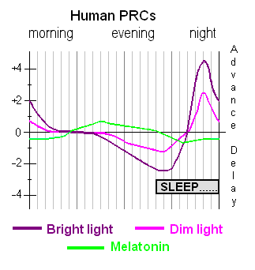
There are in theory two types of zeitgebers: the type-0 resetters, which theoretically can reset at the time you target regardless of your current circadian rhythm, versus type-1 resetters, which effect is dependent on the intake/exposure time relatively to your current circadian rhythm. In practice, all currently known zeitgebers (and hence treatments) are type-1 resetters. Hence, it's crucial to time all treatments relatively to your current sleep and wake up times, not the target/wished ones. This is true not only for melatonin (see also here), but also light therapy and food. It's not specific to treatments for circadian rhythm disorders, in fact there are now chronobiotics, an emerging field of scientific and medical study which is finding that virtually all drugs have a time-dependent effect relative to the circadian rhythm, such as antibiotics, so in fact all drugs are most efficient when taken relatively to the circadian rhythm. This makes sense, as it was discovered that nearly half of protein-coding genes are rhythmically expressed in at least one part (tissue) of the human body. This time-dependent effect of zeitgebers is also what makes research about them difficult, as it is easy for scientists, working at usual office hours, to miss time-dependent effects.
The relative effect of zeitgebers on the circadian rhythm can be confusing. We can make the following analogy: it's a bit like a boat, naturally you will float with the river (your natural circadian rhythm), but you can use paddles (light therapy) to row against the river (waking up earlier and earlier when used in the biological morning) or faster along the river (being exposed to bright light in the biological evening because you don't do dark therapy). But you can't just stick the paddles in the water to precisely stay where you are in the river, it doesn't work like that, you have to row in one direction or the other, even if just to stay in place (maintaining a stable wake up time), and where you will end up (your wake up time) won't be super exact and will change with the flow but you can ensure what direction you go (against or with the river's flow = circadian rhythm). How much earlier you wake up is defined by how strong you row (light intensity), how aerodynamic your boat and paddles are (blue light color and ergonomic form factor such light glasses), and how long you row (how long you do light therapy).
Is it necessary to use multiple zeitgebers, even if we only have a slightly bigger circadian rhythm than the average, let's say 24.5h? Yes, because not only having multiple zeitgebers allows to have a failsafe in case you miss one of the zeitgebers (eg, forget to take the melatonin pill one day, then at least the light therapy will still help), and also because the body has multiple circadian clocks: the most famous one is the "master clock" in the brain, more formally known as the photoneuroendocrine system, which consists of the suprachiasmatic nucleus (SCN) in the hypothalamus, which is photoreceptive (respond to the photic signal from the ipRGC cells in the eyes) and communicates bidirectionally with the pineal gland which regulates melatonin (side-note: only in mammals did the pineal gland lose its photoreceptive capacity) , but there are also lots of peripheral clocks in other organs (liver, intestines, muscles) down to every cells (mitochondria produce and metabolize melatonin, see the Melatonin section). If a zeitgeber entrains one but not the others (such light not entraining the digestive clock), then the body may still continue to freerun because of the mismatch between the various body clocks and hence prevent whole body entrainment.
Since the industrial era, most zeitgebers are weakened in our daily lives, foremost light due to officies deprived from direct exposure to sunlight and artificial lighting in the evening, which led and is still leading to a widening and delaying of the chronotype distribution except for the very early morning larks, ultimately causing social jet lag for nearly everyone.
A few studies indicate that likely all zeitgebers work by ultimately modulate body temperature: body temperature modulation is the universal signal to reset the biological clocks throughout the body (see also here for a more easy to read article). This is further demonstrated by the fact that light therapy does not need the suprachiasmatic nucleus (SCN) to affect the circadian rhythm, only the ipRGC cells. Since light therapy modulates melatonin levels, and that one of the core melatonin activities is to modulate the body temperature, and given the widespread availability of melatonin receptors throughout the body, it appears likely that light therapy shifts the circadian rhythm by modulating melatonin levels which itself modulates the circadian rhythm clocks over both the central and peripheral systems.
Melatonin
The many biological functions of melatonin
Melatonin has a ton of different biological functions, hence why it is qualified as a "pleiotropic agent" (meaning "many"). These functions can be classified under two broad families: 1- the receptor-dependent actions, where melatonin plays an indole hormonal role of circadian rhythm and sleep regulation by activating the melatonin receptors, 2- the receptor-independent (extracellular) actions, where melatonin does not need any receptor and will directly act on the cells to protect them from oxydative and inflammatory stress. Let's focus first on the circadian rhythm and sleep effects.
Melatonin can both phase advance the circadian rhythm by binding to the melatonin type 2 (MT2) receptors, and consolidate sleep (ie, avoids fragmentation and waking up too early by ensuring the body stays asleep during the 2nd half of the biological night). It can also induce drowsiness by binding to melatonin type 1 (MT1) receptors, in other words it helps with feeling sleepiness (see also here). There is also a type 3 (MT3) receptor that melatonin (but not other drugs like ramelteon) stimulate.
According to the latest findings, it is currently theorized that one of the main biological purpose of melatonin is to be a circadian rhythm stabilizer, and not a zeitgeber, potentially through a feedback loop regulating the suprachiasmatic nucleus firing rate. This holds true for exogenous melatonin too, although it likely depends on the formulation: instant-release melatonin for circadian rhythm shifting, prolonged-release melatonin for primary insomnia (ie, sleep consolidation). Hence, it may not be biologically meant to shift the circadian rhythm, although it can be used for this purpose as shown by PRC curve studies.
Melatonin is mostly produced by the digestive tract, and to a lower extent by the pineal gland regulated by the suprachiasmatic nucleus in the brain, and to an even lesser extent by various structures such as the eyes themselves (including in the retina, lens and ciliary body), where melatonin "acts directly on ocular structures to mediate a variety of diurnal rhythms and physiological processes within the eye". The pineal gland can be considered a "vestigial eye". The melatonin secretion controlled by the retinohypothalamic-pineal (RHP) axis's responses to light is highly conserved throughout evolution in mammals, but melatonin production is present in almost all living organisms, "including
bacteria, unicellular eukaryotes, algae, plants invertebrates and vertebrates" where it may also be the key player regulating the plants circadian rhythm despite the lack of a pineal gland. Virtually all biological structures in the body can produce melatonin thanks to the mitochondria (including skin - the largest human organ - but also the "brain, retina, Harderian gland, ciliary body, lens, thymus, airway epithelium, bone marrow, immune cells, gonads, placenta, gastrointestinal tract"), and they are themselves a primary target of the melatonin indole, as melatonin can be degraded via indolic and kynuric pathways with melatonin receptors widely distributed throughout the body, although melatonin has a wide spectrum of activities such as antioxydative and cytoprotective which are receptor-independent. Hence melatoninergic systems should be seen as decentralized, with a multitude of local melatoninergic systems at organs level and some global melatoninergic systems such as the chronobiotic regulation. Melatonin blood profile is primarily influenced by light exposure, and to a lesser extent by body position, physical activity, sleep, caffeine and drugs like beta-blockers.
Since melatonin is strongly associated with the circadian rhythm, and the DLMO marking the time of the beginning of an individual's biological night, melatonin profile is often used as a biomarker to measure the circadian rhythm, through salivary samples in a dim lit environment (dim-light melatonin onset). It was demonstrated that both non-24 (25h or 24.8h to 25.8h) and DSPD (between 24.5h and 25h) have a delayed and longer melatonin profile, confirming one of Czeisler CA et al's hypotheses. Although some studies suggested that a longer melatonin profile and hence a longer circadian period (tau) may be a hallmark of non-24 compared to other circadian rhythm disorders such as DSPD, the low sample size (less than 10 subjects in each studies, sometimes as low as 2 non-24) and the negligible difference particularly between studies does not allow to confirm this hypothesis.
About the receptor-independent extracellular actions of melatonin, a recent landmark 2020 study (and its awesome video abstract) have shed light on its likely major purpose. Indeed, this study is the first to investigate why sleep is necessary and how exactly it can cause death. Contrary to what was assumed before, it's not the brain, but the accumulation of reactive oxidative species (ROS) in the guts that cause death. By supplementing orally with melatonin to flies and rats who were prevented from sleeping, they could live a full life with no behavioral sign of brain injuries. Hence, this suggests that melatonin, in addition to its receptor-dependent effect of inducing and consolidating sleep, is also used biologically to clean up oxidative stress and avoid death by cellular stress.
Due to these extracellular capabilities, melatonin is also be beneficial for a wealth of other health issues beside sleep, and melatonin deficiency can have life-threatening consequences. As an anecdote: everybody knows about the famous longevity experiment where mice that are restricted from eating, so that they eat a lot less, live a lot longer than mice who can feed anytime and as much as they want. This reproducible result is often interpreted in various ways: effect of fasting, calorie restriction, autophagy, etc. But in fact, it's known since at least the 90s that if melatonin is injected into the mice who can eat anytime they want, they will live longer, as long as the ones who are restricted (see this review for an explanation). Furthermore, if a pinealectomy (ie, remove the pineal gland which regulates melatonin production) is done on the mice who are restricted, they will die a lot younger, hence losing all the benefits of calorie restriction (TODO: check ref). In summary: instead of restricting eating, supplying melatonin was sufficient to extend the lifespan of the mice, and removing the organs regulating melatonin also removed all benefits from calorie restriction.
Melatonin was further shown in humans to substantially reduce risks of dying due to cancer (see also this review) and from sepsis/severe inflammations, including in neonates (who do not produce melatonin yet), and even liver damage (potentially can help with the consequences of metabolic disorders such as NAFLD/NASH?). Low melatonin levels are associated with endometrial cancer and breast cancer and is suggested to be used as a screening indicator of these cancers. A statistics study found that participants with higher melatonin levels had a lower likelihood of being diagnosed with COVID-19 and made an online calculator to predict those more at risk, and hence melatonin is part of the Marik's cocktail protocol for COVID-19 critical care. Melatonin supplementation may reduce delirium and symptoms of dementia such as sundowning and potentially increases brown adipose tissue which may help with diabetes. A review found that melatonin deficiency is associated with a "plethora of effects".
But melatonin activities go beyond the circadian rhythm regulation and antioxydative activity, it also regulates inflammation (hence with applications for wound healing) and a lot of other processes (such as hair growth and skin damage protection against sun's UVs), hence why melatonin is qualified as having pleiotropic actions (pleiotropic meaning "many") (see also this PhD thesis), including on the brain which makes it a candidate for the treatment of diverse neuropsychiatric disorders including epilepsy, schizophrenia, depression and anxiety disorders:
> A gathering body of evidence has shown that besides strong antioxidant activities, melatonin is a pleiotropic regulator molecule which orchestrates multiple functions through all the three melatonin receptors, i.e. MT1, MT2, and MT3. For example, MT2 receptor agonistic activity is attributed to neuroprotective, hypnotic and anxiolytic properties while MT1 and MT2 agonistic activity is associated with the clinical efficacy of agomelatine. The third melatonin receptor has been identified as quinone reductase (QR) 2, an enzyme involved in detoxification. MT3 agonist has been linked to strong hypotensive effects in preclinical study.
Ref: from this review.
Melatonin's circadian rhythm phase shifting effect is at least are additive (see also here) with light therapy and maybe even more.
Overview of the factors for optimal therapeutic effectiveness of melatonin pills
Therapeutic effectiveness of melatonin is influenced by several factors, including the following:
1- Immediate release formulation vs prolonged release: instant release form likely works better than prolonged release to treat circadian rhythm disorders. Instant release melatonin does not cause morning/wake-up drowsiness/brainfog whereas prolonged melatonin does. If unsure, just crush the pills into a powder, this will make it into an instant release form in any case because it's only the coating that can make melatonin into a prolonged release form. To crush tiny melatonin tablets, buy a mini-grater with tiny holes, such as those used to grate spices, such as this one (if the link is dead, see this picture for what it looks like).
2- Timing: intake should be before DLMO (ie, before the body starts producing melatonin), hence about 3-7h before your natural sleep onset (ie, when falling asleep), not the target one. However, the exact DLMO timing is highly variable between individuals, hence this requires some trial-and-error.
3- Dosage and overlap: bloodstream melatonin circulation from exogenous melatonin pills need to overlap with the endogenous melatonin production. Since higher dosages (1-3mg) remain longer in the bloodstream, they are easier for beginners. Furthermore, since melatonin's hypothermic effect and hence circadian rhythm shifting and sleep inducing effects, higher dosages should in theory produce more effect.
4- Bright light exposure (either by sunlight or bright room light) after taking melatonin will inhibit melatonin. Even a computer screen at medium or full brightness can inhibit melatonin (because the effect is stronger when you stare at the light source and humans are more sensitive to light at night than at day).
5- High variability in the quality control of over-the-counter melatonin pills, sometimes with a dosage 5x higher or smaller than what is labelled on the package, even for the same brand and product but between lots. This variability may be the root cause for why some people report too much effect, while others report no effect at all for the same dosage. It may simply be that under the hood they didn't have the same dosage at all. If you experienced too much effect with melatonin, at least this is a good hint this works, so you may try another brand with the same or different dosage to adjust and maybe find a brand with a good enough quality control, or ask a pharmacy to make a preparation in a lab for you. Personally, after trying lots of melatonin formulations including from pharmacies and labs, I found the Valdispert 1.9mg instant release melatonin works well and stably, but I can't guarantee the stability nor purity. Also, a tip as the authors note: "the least variable products were those that contained the simplest mix of ingredients, generally oral or sublingual tablets with melatonin added to a filler of silica or cellulose derivatives and were the most reproducible", which is the case of Valdispert 1.9mg instant release melatonin, where melatonin is the sole active component (no camomille or other "sleeping inducing natural herbs" stuff).
6- Optionally: Reduce/avoid food and sweet drinks after taking melatonin. Some people have a genetic mutation of the melatonin type 2 (MT2) receptor that does weird things when both glucose and melatonin are present in the blood stream.
Anecdotally, the author used melatonin for more than 10 years without any significant entrainment success, before finding the adequate parameters to increase the effectiveness of melatoninergic therapies.
Optimal timing of exogenous melatonin pills
To shift the circadian rhythm, exogenous melatonin needs to be taken before the body starts to produce endogenous melatonin, which is called the dim-light melatonin onset (DLMO). Technically, the DLMO is the tipping point of the melatonin PRC curve. If taken before the DLMO, exogenous advances the circadian rhythm phase. If taken more than 1h later than the DLMO, the phase is delayed according to some authors, whereas others state that melatonin's dead zone (where there is no effect) is during the biological night when endogenous melatonin levels are high in the blood, and the delays only start when residual melatonin is found after the endogenous melatonin offset:
> The dead zone of the PRC to light is during the day. The dead zone of the melatonin PRC, however, occurs during the “biological night,” that is, the time when endogenous levels of melatonin are usually high. Responses to melatonin are greatest when it is given exogenously at times when endogenous levels are not normally present, that is, during the day; when given in the morning, melatonin causes phase delays (shifts to a later time), and when given in the afternoon/evening it causes phase advances (shifts to an earlier time). Bright light causes phase shifts opposite to those caused by melatonin; that is, light exposure in the morning causes phase advances, and in the evening causes phase delays (responses are greatest during the night).
Ref: this letter.
Although it is now known that melatonin is most effective several hours : 3-5h before natural bedtime (not target bedtime), by assuming that on average DLMO happens 2-3h before the natural bedtime as in Lewy's PRC. This is in contrast with previous medical misconceptions, which often prescribed melatonin 1h before target bedtime which is ineffective:
"Although pharmacopoeias and the European food safety authority (EFSA) recommend administering melatonin 1–2 h before desired bedtime, several studies have shown that melatonin is not always effective if administered according to that recommendation. Crucial for optimal treatment of CRSD, melatonin and other treatments should be administered at a time related to individual circadian timing (typically assessed using the dim light melatonin onset (DLMO)). If not administered according to the individual patient's circadian timing, melatonin and other treatments may not only be ineffective, they may even result in contrary effects. Endogenous melatonin levels can be measured reliably in saliva collected at the patient's home. A clinically reliably DLMO can be calculated using a fixed threshold. Diary and polysomnographic sleep-onset time do not reliably predict DLMO or circadian timing in patients with CRSD. Knowing the patient's individual circadian timing by assessing DLMO can improve diagnosis and treatment of CRSD with melatonin as well as other therapies such as light or chronotherapy, and optimizing treatment timing will shorten the time required to achieve results."
Ref: this review. See also the figure 3 of this review for the appropriate timing for DSPD and non-24.
This usual recommendation is ineffective because of two points: the too late administration (1-2h before bedtime), and the uncoordination with the patient's circadian rhythm (by prescribing melatonin pills intake relative to the desired bedtime instead of the patient's current or natural bedtime).
This is because exogenous melatonin phase advances the circadian rhythm when taken before the body starts producing endogenous melatonin, which is called the DLMO point. In other words, exogenous melatonin is more effective when the body's endogenous melatonin level is low (ie, daytime levels): "phase shifts diminish around the time that endogenous melatonin appears in the circulation and remain minimal until melatonin levels start to decrease" (quote from this PRC study). Indeed, the DLMO point is the tipping point of the melatonin's PRC curve. By taking melatonin pills before the DLMO, the body is "tricked" into starting melatonin production earlier. However, if melatonin pills are taken after DLMO (1-2h before bedtime) as is usually advised, this will maximally delay the circadian rhythm, hence worsening non-24.
Due to inter-individual variability in DLMO (DLMO-to-bedtime is highly variable between individuals, 60% have a DLMO bigger or smaller than 2-3h before bedtime (range: -0.3h to 5.8h)) and variable sensitivity to melatonin, there is no way to tell apriori what time and dosage of melatonin will be ideal for everyone. This means that the best and only way to find the optimal timing and dosage of melatonin is by sampling melatonin throuhout the day, usually by saliva. Although this works to define the DLMO point at one point in time, since by definition the DLMO is constantly moving for individuals with non-24, this would require repeated salivary melatonin sampling everyday, which is unrealistic in practice as it must be done in the clinical setting and is costly. Urine melatonin sampling may provide a solution at home, but is currently unavailable on the consumer's market. As of 2020, the currently only available method to optimally time melatonin for individuals with non-24 is unfortunately by trial-and-error.
Optimal dosage of exogenous melatonin pills
What dosage is optimal for melatonin? Opinions currently diverge. It was observed that core body temperature reduction caused by melatonin is dose-dependent, and core body temperature modulation seems to be the primary way to signal circadian rhythm changes across all cellular clocks throughout the body, with supraphysiological melatonin doses being known to cause hypothermia. Furthermore, since 1992 it's known that endogenous melatonin levels are inversely coupled with peripheral (limbs) temperature (heat transfer to limbs is a way to reduce core body temperature, so increasing limbs temperature actually decreases core body temperature), and a new study found that the suprachiasmatic nucleus (the master clock) is resetting the peripheral clocks by changing temperature, likely through melatonin, and is another confirmation that body temperature modulation is the likely primary messenger for clock changes throughout the body. However, although higher dosage proportionally increases the hypothermic effect of melatonin and hence its circadian rhythm shifting effect, the melatoninergic receptors are exquisitively sensitive as very low doses ("nanomolar or lower concentrations") of melatonin are sufficient to activate the receptors and hence their circadian rhythm shifting and sleep induction effects. This is probably what contributed to the confusion around the effect of low to very low melatonin doses, with some authors suggesting that very low melatonin doses of 0.3mg per pill could be sufficient, which is true, but does not preclude that higher dosages cannot be more beneficial. A study on the PRC curve of melatonin in humans observed bigger phase advances with bigger melatonin doses (5mg versus 0.5mg), and that lower doses of melatonin (0.5mg) produce a delayed PRC of slightly decreased magnitude compared to higher dosages (3mg). So indeed, very low doses can produce a circadian rhythm shifting effect, but higher doses can produce bigger shifts according to the current knowledge.
Another factor is that the exact optimal timing for melatonin pills intake may depend on the dosage. A PRC study on melatonin in humans found (see also this figure from this report) that lower dosages of melatonin were optimally taken later (ie, closer to DLMO) for maximal phase advance compared to higher dosages. This can be explained by Lewy's theory of overlapping, which proposed that the largest phase shifts in humans occur when exogenous melatonin in the bloodstream overlaps with the start of endogenous melatonin production (DLMO), so as to simulate an early dusk, and hence lower dosages such as 0.5mg need to be taken closer to DLMO to remain in blood circulation at DLMO compared to higher dosages such as 3mg. For an estimation, instant-release melatonin is eliminated within 3-4h of intake, although the blood levels may remain high up to the next morning when using supraphysiological doses. This hence suggests that higher dosages provide more leeway to get the therapeutic effects from melatonin, and hence higher doses of melatonin may be easier to time optimally for beginners. However, another study found an "inverse relationship between the timing of melatonin administration (irrespective of dose) and the magnitude of DLMO phase advance, such that earlier timing of the former (in relation to DLMO) resulted in greater phase advances", which suggests that the influence of timing is mostly independent from dosage, so that dosage does not need to be accounted for systematically when timing melatonin intake.
Furthermore, there is a high variability of melatonin sensitivity between individuals, partly due to different melatonin receptors density, and hence some individuals are insensitive with the common dosages. Other studies have estimated a 10-fold inter-individual variability in melatonin bioavailability, in other words, some individuals require 10x the dosage that others use to get the same effect.
Although higher dosages of exogenous melatonin may ease the proper timing and overlapping with the endogenous melatonin profile, the longer bioavailability increases the risk of exogenous melatonin profile overlasting endogenous melatonin and hence spilling onto the phase delay portion of the melatonin PRC curve, in other words to keep residual exogenous melatonin the next morning, not only causing the dreaded morning drowsiness typical of a too high melatonin dosage but also phase delaying the circadian rhythm. As such, "care must be taken to avoid unnecessarily high doses that would cause trailing levels that spill over onto the wrong zone of the melatonin PRC". The risk of "phase spilling" is not present in light therapy and this may be one of the factors explaining the more robust phase shifting effects of light therapy.
Finally, melatonin levels varies with age, as melatonin levels are the highest for children (except neonates under the first 3 months of life), and then they decrease over time with age, with elders often having a deficiency of melatonin leading to age-caused insomnia. Hence, older adults need lower dosages of melatonin to get the same effect as younger adults. See this figure from this review and this figure about "normal melatonin peaks" by age.
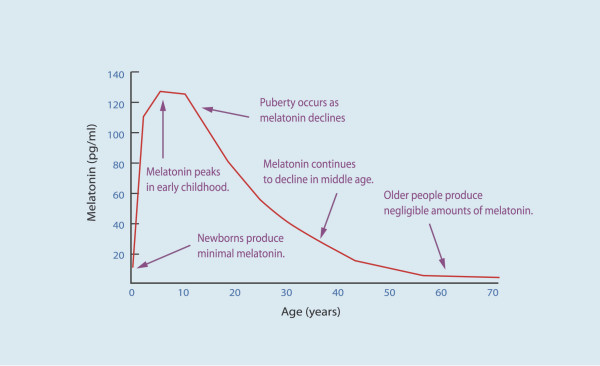
Variations in endogenous melatonin production by age. Figure from this review and licensed under CC-BY 2.0 Generic.
Given all these information, why is there a common belief that very low doses of melatonin are better than higher doses? Very low doses of melatonin such as 0.05mg were indeed experimented, such as In this study, however only one blind non-24 entrained with 0.05mg, all the others had to use 0.5mg. Keep in mind they are blind, hence have lower melatonin levels than sighted individuals. Although these subjects could be entrained, the article makes no claim that this dosage is better than higher doses, simply that they may be sufficient, but by following a precise protocol of starting with a higher dose to first get an effect, and then progressively reduce until the subject reaches the lowest dosage they can use while still having the effect of melatonin.
To trace back where the belief that low dose melatonin is better than high dose, we may find the following study, a follow-up study by the same authors as the above cited study stems from this single-case study, titled: "Low, but not high, doses of melatonin entrained a free-running blind person with a long circadian period". This result was hence only on one subject, and who was blind, hence with lower endogenous melatonin levels again... This is hence a preliminary result that cannot be generalized yet, and given there is at least a 10-fold inter-individual variability in melatonin bioavailability in typical sleepers, with this estimated variability not even accounting for extreme cases where the melatonin profile is modified as with circadian rhythm disorders such as non-24, it's unlikely to hold in the general case. Hence, it's safe to assume that low doses do indeed work for non-24, but not necessarily very low doses and some individuals may very well need dosages of up to 10mg/day depending on their sensitivity (melatonin bioavailability and receptors density).
Inversely to receptor-dependent effects which can be activated with very very low doses, receptor-independent cellular protective actions of melatonin, such as antioxydative effects, only appear with much higher doses of melatonin : "These receptor-independent protective actions of melatonin and its metabolites would require high intracellular levels of the molecules, which can only be met by melatonin in situ production in the relevant tissue, since cellular melatonin uptake is very limited because only 0.1% of extracellular melatonin can enter the cell (Fischer et al., 2006a)." In practice, as shown by the usage of melatonin on septic patients, the dosage necessary to produce the cellular protective actions would be about 8mg/kg/day in humans.
Safety and contra-indications of exogenous melatonin
Is melatonin safe for kids? Melatonin should be safe for kids, as it was used in multiple trials for autistic children, including a long-term one (> 1 year) with doses up to 10mg/day, and is even commercially available as a medically regulated drug under the name of Circadin or PedPRM. There was a concern about the potential adverse effect of melatonin on growth hormone regulation and on reproductive function and development, but studies found no difference in adolescents using melatonin and a placebo, and melatonin was shown to be a reproductive organs protector and a potential candidate to treat diseases of male reproduction and also female reproduction (see also here, here and here with not only melatonin but circadian cycle impact on fetal and placenta physiology). The AASM guidelines issued a WEAK FOR in favor of melatonin treatment for children with DSPD. Melatonin is even considered safe for use in hospitalized neonates, to treat sleep issues and severe inflammations.
Melatonin has very few side effects and no serious (dangerous) ones. It is non mutagenic, non carcinogenic and there is no withdrawal nor dependency. Both the EFSA (european commission for food safety) and the ANSES (french commission for drugs safety) considered melatonin effective for circadian rhythm adjustements if one day dose contains at least 0.5mg and generally safe except for individuals with neurological comorbidities and pregnant women. Apparently, the FDA also considered melatonin safe and decided not to regulate it as a drug. It's impossible in practice to overdose on melatonin, and no maximal safe dose (lethal dose) could be established yet, as even enormous doses, as "even enormous doses such as 800 mg/kg are not lethal" in animals, and furthermore "in a study of 11 patients, doses up to a massive 6600 mg/day for 35 days were given with no severe toxicities occurring". What about the long-term use of melatonin? According to the AASM 2015 guidelines, current evidence shows that melatonin is safe for long-term use, as was assessed on children with DSPD and ADHD for a mean follow-up time of 4 years with doses up to 10 mg with no serious adverse event, and an open-label follow-up study of adult patients with DSPD and neurodevelopmental disabilities who received prolonged-release melatonin up to 15 mg for up to 3.8 years found no adverse effects.
There is a common minor side-effect at the root of most complaints, and is that melatonin can produce more vivid dreams. More vivid dreams are not necessarily nightmares, but they often are. Hence, melatonin increases the likelihood of experiencing nightmares. Are nightmares bad for the circadian rhythm or sleep? According to a study (the only one on this question, there is surprisingly very few scientists who investigated this question), nightmares affect subjective feelings of sleep quality but not sleep quality per se, as there is no objective change in the sleep structure whether or not the dream is good or bad. This finding can also be put into perspective with the slightly more extensive research about lucid dreams, which shows that being conscious during dreams does not impact the sleep structure or quality either. So this indicates that the dreams content is irrelevant to the sleep structure or quality. This matches what I observed experimentally, that nightmares do not impact the circadian rhythm nor mood nor energy levels during wakefulness periods, it's rather the sleep duration and timing (relative to the circadian rhythm) that matters.
Another potential minor side-effect is that melatonin may have a temporarily negative effect on mood, since melatonin is an antagonist to serotonin.
Another common complaint is the next morning drowsiness/brainfog, which is likely due to using a too high dosage (>2mg) of prolonged release melatonin, with a lower dosage or using instant release melatonin often fixing the issue:
> In full agreement with numerous findings on immediate-release melatonin, all studies on the prolonged-release formulation unanimously show that the recommended dose does not cause next-day hangover, but rather favors morning alertness – although some exceptions have been described in other investigations using different doses. It does not lead to dependence, early or late withdrawal effects after discontinuation.51,77–79 The development of tolerance is usually absent with melatonin, although a few exceptions have been reported, especially in some children with neurological disorders.91–94 Should the development of tolerance turn out to be a consequence of altered metabolism, which remains to be demonstrated, other melatoninergic agonists might be tested. A recent randomized, double-blind, placebo-controlled crossover study on prolonged-release melatonin confirmed the absence of next-day impairments of psychomotor functions, driving skills and memory recall, in contrast to 10 mg zolpidem.109 Controlled-release melatonin (2 mg) was successfully used even for facilitating benzodiazepine discontinuation.110 Like melatonin, ramelteon did not cause next-day hangover (as revealed by subjective feeling, psychomotor and cognitive tests, and ability to concentrate),105 rebound insomnia or other withdrawal effects, or development of tolerance or addiction.20–22,105 Under these conditions, both prolonged-release melatonin and ramelteon appear safe in short-term treatment, as may be assumed for other exclusively melatoninergic drugs in general.
Melatonin can interact with the dopaminergic system as shown by its detrimental interaction with restless legs syndrome (RLS) (see also here and here), while sometimes producing a positive side-effect on mood and motivation (a user reported both effects simultaneously), but this effect of melatonin on the dopaminergic system is not well studied at the moment. Hence unfortunately for people with both RLS and a circadian rhythm disorder, melatonin is contra-indicated unless in very small doses if the individual tolerates it, but this should be done under a medical doctor's supervision.
Interestingly, in a mice study, dopamine was shown to cause phase delays (lengthening the freerunning circadian rhythm period).
Difference between melatonin and sleeping pills (benzodiazepines)
Melatonin is not a sleeping pill, it's different, because it does not affect GABA receptors, and hence does not affect REM sleep nor the distribution of sleep stages. Hence, melatonin is much safer than sleeping pills such as benzodiazepines. Furthermore, "melatoninergic agonists do not cause next-day hangover and withdrawal effects, or dependence [and] do not induce behavioral changes, as sometimes observed with z-drugs [ndlr: benzodiazepines sleeping pills]." Sleep researchers disadvised against the use of sleeping pills to treat sleeping disorders since at least the 1975s, and particularly for circadian rhythm disorders such as non24. Benzodiazepines analogs such as zolpidem or zopiclone can produce paradoxical insomnia and in clinical trials worsened sleep parameters compared to age-matched insomniac but untreated patients, and interestingly most of them were also diagnosed with untreated sleep apnea. Melatonin can be used to facilitate benzodiazepine discontinuation. Although the melatonin receptors type 2 can be desensitized at the molecular level, just like all G-protein-coupled receptors, this desensitization is quickly reversible and hence there is no observed addiction nor tolerance in practice. Another piece of evidence is that the melatonin receptors density varies over the day but mostly in parallel with the circadian rhythm, so that there is a parallel increase in both melatonin receptors density and melatonin concentration (which should be the opposite if there was a desensitization), allowing receptor sensitivity to be sustained since it was demonstrated that "long-term melatonin exposure produces microtubule rearrangements that enhances protein kinase C activation (which modulates melatonin receptor function through its action on G-proteins)". Hence, it's not surprising that longitudinal studies shown that melatonin could be used with no loss of efficacy over a whole year in children at dosages from 2mg to 10mg/day.
TODO: "Benzodiazepines (eg, valium) increase Stage 2 sleep, while decreasing the other Stages, including Slow Wave Sleep and REM sleep [JOURNAL OF SLEEP RESEARCH; Perlis,L; 6(3):179-188 (1997)]. Unlike sleep induced by benzodiazepine drugs, melatonin-induced sleep does not suppress Rapid Eye Movement (REM) sleep and slow-wave sleep — and does not result in "hangover" feelings the next day [CLINICAL PHARMACOLOGY AND THERAPEUTICS; Zhdanova,IV; 57(5):552-558 (1995)]. Nonsteroidal anti-inflammatory drugs such as aspirin (which disturbs sleep), decrease plasma melatonin levels [PHYSIOLOGY & BEHAVIOR; Murphy,PJ; 55(6):1063-1066 (1994)]." https://benbest.com/nutrceut/melatonin.html
Light and dark therapy
Light therapy parameters, Luminette and photic history
Light therapy, or phototherapy, is a therapy that consists in being exposed to bright light on a precise timing relative to the user's circadian rhythm. The therapy is usually repeated everyday in practice, although studies demonstrated effects with a single exposure.
Light is without a doubt the most powerful tool we have to manipulate the circadian rhythm. Indeed, in case of conflicting inputs between clocks, light always has precedence over other clocks according to Aschoff. Hence, light is the number 1 tool anyone with a (sighted) circadian rhythm disorder needs to try. All other currently available treatments (including melatonin) provide much less circadian shifts than light can (but they can be combined for greater effect).
Luminettes aren't really necessary, anything that stimulate your nasal hemiretina should work, but Luminette are more effective, because it is enriched in blue light and has a comfortable form factor (glasses) which guarantee an adequate and invariable distance and angle of the LEDs to adequately stimulate the ipRGC cells. This is why there are anecdotal reports of individuals achieving entrainment with a simple light from a computer screen, a make-up mirror with bright light, and also classical light therapy lamps for Seasonal Affective Disorder such as the Beurer TL30 lamp.
Light therapy affects the circadian rhythm by stimulating the ipRGC receptor cells (that can be connected to S-Cone cells) in the macula and nasal regions of the retina. The more these cells are stimulated, the more phase advance and melatonin inhibition will happen. Although the ipRGC cells relay the light signals to the suprachiasmatic nucleus (SCN), contrary to a previous widespread assumption, the SCN is not necessary for the phase advance effect of light therapy as the effect goes through some unknown biological pathway, since the destruction of the SCN does not impair phase advance by light therapy and a subsequent study shown that the ipRGC cells are sufficient to cause circadian rhythm and body temperature shifts without the need for the SCN, which shows that the non-visual effect of light on the circadian rhythm is independent from the SCN. Furthermore, although ipRGC cells stimulation exquisitively inhibits melatonin, phase advance by light therapy is decoupled with melatonin: we can have a big phase advance without significant melatonin inhibition, and inversely (see also here and here and here). In other words, melatonin suppression is also not necessary for entrainment, contrary to what was assumed before. Hence, the goal of an effective light therapy is to optimize the stimulation of a maximum of ipRGC cells and to result in a behavioral phase advance, or a phase advanced core body temperature profile if a more objective proxy is preferred.
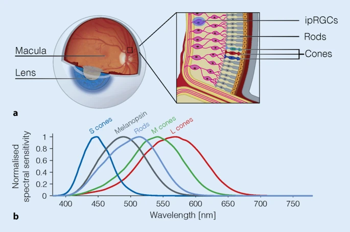
Overview of the retina photoreceptors. The ipRGC cells are mostly located in the parafoveal area of the macula and in the nasal regions of both eyes retinas, and can be connected to S cones which are cone cells optimized to detect blue colored light. The peak sensitivity of ipRGC cells (Melanopsin curve) is around 482nm. From the figure 3 of this review under CC-BY 4.0.
Several studies confirmed that rods and cones are unnecessary for circadian rhythm shifting, only the ipRGC cells are necessary, as demonstrated by experiments on rods- and cones-free animals and humans, although rods can contribute a bit to circadian rhythm shifting, and S cones can modulate the response of ipRGC cells depending on the light's color.
Blue light stimulates the eyes' ipRGCs receptors more and produces the most phase advance compared to other colors, but amber light was also shown to affect the circadian rhythm (see also here) since the body can also use variations in the light's color as a zeitgeber, in addition (or replacement) to light intensity (eg, to continue to be entrained under cloudy sunlight, by detecting if it's blue - daytime - or amber/dark - night time). However, amber light has much less sustainable effect on the circadian rhythm than blue light. Also, blue light constantly suppresses melatonin during the whole exposure, whereas green light does only so temporarily for about 90 min. Blue light inhibits melatonin faster than natural endogenous synthesis cessation, which means that blue light can be used at wake-up to more quickly eliminate sleep inertia due to melatonin left-overs, whereas amber light does not. Blue light alone is sufficient to constantly suppress melatonin as long as the subject is exposed. Blue light not only phase advances the wake-up time but also the sleep timing (ie, falling asleep earlier) as observed by several studies. In other words, light therapy also allows to sleep earlier (ie, sleep onset), likely because of the photic history effect increasing next-morning melatonin concentrations (see below), and hence complementing exogenous melatonin pills, although the effect on sleep onset is not always present as light therapy is more effective to entrain the sleep offset (ie, wake up time), but that may be due to the experimental design as it's necessary to be repeatedly exposed over almost about a week to get this melatonin increase effect. Sunlight is rich in blue light. Blue light also increases serotonin levels and hence vigilance, particularly at wake-up when sleep inertia is at its highest, and hence bright light is a well-known tool to clear brain fog due to melatonin left overs in the morning as well as having an antidepressant effect likely due to the increase in serotonin levels.
Light intensity matters, even more than light color, but with a limited range: the sensitivity bandwidth of the eyes is not the same for visual signals and non-visual signals (ie, circadian rhythm shift): 9 to 10 orders of magnitude for visual, whereas it's limited to 2 orders of magnitude for non-visual, hence the saturation point of light intensity is quite low. This saturation point is different for everyone since we all have different sensitivity to light (up to 50x fold difference!), so that some people saw a circadian rhythm shift and melatonin suppression achieved with light with an intensity as low as 5-10 lux (and maybe even lower). Also, with only 100 lux light therapy, this produces half of the circadian shifting effects of a 10K lux light therapy, "including melatonin suppression, circadian phase resetting and the alerting responses" (ie, vigilance boost). All these findings mean that humans are sensitive to light of virtually any intensity and color, and the maximum phase shift is reached with max 1,000 to 10,000 lux, and even below for people with circadian rhythm disorders if they are hypersensitive to light as some studies found, so no need to burn your eyes with more intense lights. On the other hand, this also means that any effort to reduce light exposure in the evening is of primary importance (see the section on dark therapy below).
However, although all light colors and intensities can shift the circadian rhythm and hence help with entrainment, blue light alone is about 185 times more efficient than polychromatic white light. For stable entrainment, the goal is to oppose the natural daily phase delay of an individual's non-24 circadian rhythm with an equal or greater amount of phase advance, such as by using bright light therapy. Hence, we want to maximize the phase advance to set all chances on our side. To maximize, the goal is to stimulate the ipRGC receptors in the eyes the most, and hence "all studied characteristics of light pattern (timing, intensity, rate of change, duration, and spectrum) influence the circadian system". In practice in the context of optimizing entrainment therapies, these parameters can be classified in 3 broad categories with subparameters:
- Maximizing ipRGC cells stimulation:
b- the light intensity, with a linear proportionality between light intensity (in lux) and the ipRGC cells stimulation (ie, how much they will phase advance) as also shown in humans. However, the ipRGC cells are saturated quite fast with a relatively low light intensity, so past this saturation point, there is no benefit from more intense light.
c- light color modulates the light stimulation on ipRGC cells through the S-Cones, with blue light stimulating the most and red light the least.
- Light exposure timing relatively to the individual's circadian rhythm (ie, the Phase-Response Curve - PRC). This manifests as two practical effects:
b- a longer duration of exposure leads to a proportionally bigger phase advance: a study shown that using a relatively low light intensity of 500 lux but over 6.5h produced a 3h phase advance, whereas 1h of the same light therapy only produced a 1.15h phase advance, suggesting there is actually no limit to the increase in phase advance when using longer bright light therapy: the longer bright light therapy is used, the more phase advance will be obtained. A previous 2011 study demonstrated a similar result, with 4h light therapy being more effective than shorter light therapy, showing that the phase advance part of the light PRC is much wider than previously thought.
- Optimize photic history: prior light exposure changes melatonin levels and response to future light therapy, "such that a history of less light exposure leads to a greater response to light" and inversely a history of greater light exposure will protect against unwanted phase delays due to light exposure during the biological evening (see also this review). Hence, repeated light therapy over multiple days will provide more effect than a single session, because a resistance to unwanted phase delays due to uncontrolled light exposure (eg, artificial evening light) will build up over repeated light therapy sessions. Consistent with this study finding elevated next-morning melatonin concentration after at least 5-7 days of bright light exposure, but not with less than 5 days, the author found that repeated exposure during about 10 days is necessary for the light therapy effect to converge to its maximum.
Point 1 should be taken care of by the light therapy device (especially if it's a blue light therapy glasses such as Luminette). Points 2 and 3 are reliant on user's handling of the device, and how compliant with the therapy they are (ie, to use light therapy daily for the required amount of time).
Photic history (or light history) is a crucial, but complex, phenomenon that remains poorly understood. This means that prior light exposure affects how the body will react to future light exposure, as well as other indirect changes such as increased next-morning melatonin levels, by previous days exposure to bright light. It may be through this melatonin regulating pathway that light can produce or eliminate biphasic sleep, which can be naturally induced by a too short exposure (10h) to light during the awake period, and eliminated by a longer light exposure (16h). Photic history can be both beneficial or detrimental depending on the timing: light therapy in the morning is less effective if an individual is exposed to light in the previous evening or night, whereas if the participant is exposed to blue light only during the biological morning and use dark therapy in the evening, this increases melatonin levels more than other colors while simultaneously phase advancing more than other colors. Furthermore, prior exposure to bright light during the biological day reduces sensitivity to light in the biological evening, and inversely prior exposure to less light (eg, only dim light) during the day increases the sensitivity to night-time light, which will more easily cause unwanted phase delays. Indeed, the ipRGC cells that are responsible for the circadian rhythm shifting after light exposure were demonstrated to have "larger responses to light stimuli after dim light exposure, and reduced responsiveness to light stimuli after bright background light exposure". Aberrant light exposure can cause major cognitive, learning and mood impairment directly through the ipRGC cells, and the opposite is true, with light exposure having an antidepressant effect, and indeed a 2019 systematic review and meta-analysis found that light therapy is as effective as antidepressants for the treatment of both seasonal and non-seasonal (major) depression, with the combination of both being even more effective. A more fragmented light-exposure rhythm is associated with a more fragmented sleep. Photic history may stem from the GABAergic signalling that ipRGC cells can do in addition to the better known excitatory signalling, as GABAergic signalling involves chemical processes that can modify structure and hence memorize at the synaptic level. To summarize, photic history shows that light therapy in the biological morning not only phase advances, but also 1- makes the participant more robust to insomnia by increasing endogenous melatonin levels and hence indirectly consolidating sleep, 2- reduces the sensitivity to phase delaying lights in the biological evening and hence may reduce the need for dark therapy.
Photic history explains why the effect of light therapy snowballs until it reaches its max effect at about the 10th day, because light therapy not only phase advances instantly the circadian rhythm, but also reduces evening light phase delays, so over time the phase advance becomes bigger and bigger. The author is convinced photic history plays a major role in the special effects I have observed with very long light therapy, and that this is a critical parameter to control for optimal therapeutic yields. Indeed, photic history explains the following practical observations:
- why it takes a few days to work: 2 days for the first effects, 10 days to reach maximum phase advance without changing anything during the 10 days, because light therapy is self reinforcing ;
- why feeling sleepier at the correct time after light therapy because melatonin levels are increased the biological nights after ;
- why a longer exposure increases non linearly the phase advance, because not only the phase advance is linearly increased, but prior light therapy protects against evening light exposure so that sleepiness and melatonin levels will stay at high levels even when exposed to light. This point also explains why non-24 can be reinforced through a vicious cycle of dim lighting in the awake period (which can be inversed with the day-night cycle), which will only reinforce the hypersensitivity to light and hence the circadian misalignment problems. But the opposite is also true, as it can be used to create a virtuous cycle: through photic history, light therapy can make the user less hypersensitive to light (ie, more robust to unwanted phase delays due to bio evening lights).
The suprachiasmatic nucleus (SCN) also modulates feeding behaviors, and can promote the consumption of dense food (ie, weight gain and obesity). Hence, light therapy may modulate feeding behaviors through the SCN.
Is more light intensity always better? Not necessarily, because there is a physiological limit beyond which light intensity doesn't matter because we already reached ipRGC cells max stimulation. This maximum stimulation limit was quantified and is limited to 2 orders of magnitude (eg, 100-10000 lux or 10-1000 lux, the exact boundaries of light sensitivity are not known and can vary from one person to the next). Since blue light is about 185 times more efficient to stimulate ipRGC cells, it's much easier with blue light to reach the max stimulation of ipRGC cells and hence maximize the phase advance than with white light or other colors. That's why most blue light therapy glasses only use a low lux setting such as 500 lux or max 1500 lux, whereas white light therapy lamps use 10K lux (the reduction in lux also serves as battery saving strategy since 10K lux is too much to run on a battery). Although more light intensity is not always necessary, sufficient light intensity is necessary to stimulate the ipRGC cells sufficiently to get enough phase advance to be entrained. It remains to be seen how little is sufficient for non24 entrainment, but 100 lux light therapy was found to be sufficient to produce half of the circadian shifting effects of 10K lux light therapy. Furthermore consistent entrainment was achieved during the self-experiment with 500 lux. The second subject could stay entrained for months at the time of this writing with only computer screens (but during spring-summer, so might be confounded with sunlight complementary effect). For comparison, computer screens at maximum brightness usually emit about 250 lux.
In addition to light intensity, the duration of light exposure also proportionally increases the amount of phase advance, and there is apparently no limit contrary to what was thought before (that light would advance only during a limited timeframe around wake-up, it seems it works for much longer than that). Informally but interestingly, a member of the N24 Discord server, owner of a Beurer TL30, contacted Beurer in 2020 to ask what they would advise to treat circadian rhythm disorders, to which they replied to use the lamp for 4 hours at 1250 lux distance, suggesting they also are aware that long light therapy leads to more phase advance that can help with circadian rhythm disorders, maybe due to this 2011 study.

Phase advance is proportional to the duration of bright light therapy's exposure, with an almost linear increase up to 6.5h past wake-up, hence showing there is seemingly no limit to the amount of phase advance that can be obtained with longer durations of light exposure. Reinterpretation of the results from the Figure 2 of this study.
During the author's self-experiment, it was found that lengthening the duration of light therapy was more effective to get additional phase advance in comparison to increasing light intensity, the latter showing no significant benefits but produced minor but uncomfortable side-effects such as dizziness and headaches due to sudden exposure to bright light.
The effect of light on the circadian rhythm is not solely due to its inhibition of melatonin, because it was shown that intermittent light can phase advance the circadian rhythm without reducing melatonin production, and that a longer light exposure causes more phase advance irrespective of any effect on melatonin. Hence, melatonin is decoupled from the circadian rhythm as shown by several studies .
Blue light therapy's effects (both on the circadian rhythm and the potential phototoxicity) are dependent on the user's age: the eyes lens (cristallin) obscures with age to a yellowish tint which is acting as a blue light filter and filters more with age, with 60 years olds having an average 2 times blue light filtering as 20 years old, and newborns having no blue light filter. A 2019 systematic review found that age impairs melatonin endogenous secretion and inhibition by light, but has no effect on the phase advance induced by light therapy. Hence, the light therapy duration or intensity can be adjusted accordingly to the user's age to adjust for the reduced efficiency on melatonin inhibition (ie, brain fog), but the circadian phase advance should not change with age.
Although the phase advance effect of either light and melatonin is limited, combined their effects are additive (see also here), so that you can for example get 1h phase advance from melatonin and separately 1h from light therapy, and combining both would give you 2h in theory (in practice it will be less because there is some natural biological variability from day-to-day, but at least by combining multiple therapies you get more leeway to stay entrained despite uncontrollable disturbances).
So it is possible to try to use only light therapy alone, it was shown in lots of studies and in systematic reviews to work without needing melatonin, but of course you will get less effect. Expect about 1-2h of phase advance with each treatment alone (see here and here for light), and combined the effect is additive (melatonin + light therapy can help you to achieve 2-4h in total).
Luminette can be put on top of prescription glasses (personally tested with huge aviator-style glasses), and they use a battery that lasts for 5 days with 1 to 2 uses per day (= 1 to 2h with the 500 lux light intensity setting). Re-timer are also made to fit over prescription glasses (but did not test myself).
Can the light therapy glasses work even with eyes closed? Yes:
> The eyelid acts as a red-pass filter (Zeitzer et al. 2014) and transmits only approximately 3%–14% of light (Robinson et al. 1991) in a wavelength-dependent manner. Thus, the retinal exposure of light depends on the status of the eyes (open, closed).
> [...] Similarly, Figueiro and Rea (2012) showed how light delivered through eyelids during one hour suppressed melatonin and phase shift DLMO. Both studies suggested that phototherapy may also be given with closed eyes, and even while asleep (Zeitzer et al. 2014).
Source: Systematic Review of Light Exposure Impact on Human Circadian Rhythm, 2019, Chronobiology International
So yes it works, and even with light as low as 5-10 lux while the eyes are closed, but has of course much less effect on the circadian rhythm than with the eyes open. This is exploited by a new kind experimental light therapy device called a "light mask", a light-emitting device in the shape of an eye mask to be worn during sleeping and emitting light during the last 4 hours of sleep before wake-up, hence with the eyes closed, which shown some efficacy in phase advancing individuals with DSPD. It's likely that much longer exposures than usual (as they did with exposing for 4h to the light mask) are necessary to get any benefit from light therapy with the eyes closed.
But eyes closing can nevertheless be useful. If the light is blinding you when you switch on the Luminette, close your eyes at first for a few seconds and then open them, your eyes will have accomodated by then and the light won't blind you anymore. This should also avoid the dizziness and headaches that can happen when being suddenly exposed to bright light due to sudden increases in cortisol. It may also avoid the changes in the macula induced by sudden bright light exposure in a dim lit environment, by gently allowing for pupil contraction, the pupil area being correlated with melatonin suppression (TODO: and phototoxicity?). Then, when the eyes are contracted, it's better to open the eyes as soon as possible to get the full circadian shifting effect.
The bottom-line about the safety of ocular blue light phototherapy for circadian rhythm disorders and SAD: ocular blue light phototherapy is safe for the eyes, except if you have a photosensitivity disease such as a retinal disease or epilepsy or another disease that requires you to protect from natural sunlight by wearing sunglasses or similar protective eyewear.
Photos of the Luminette 3, which has a longer battery and 3 different light intensity between 500 and 1500 lux (on earlier versions only the maximum was available):
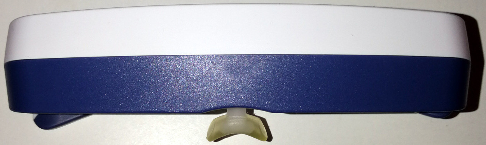
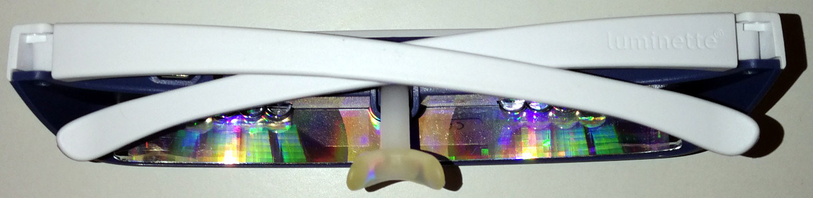
How to properly place the Luminette (picture from here and property of Luminette):
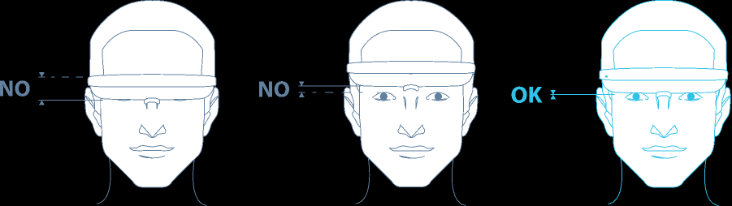
The FAQ further describes: "How can I tell if the Luminette is correctly positioned? Luminette is correctly positioned if the blue light reaches the lower half of your eyes when you look in a mirror. If this is not the case, adjust the Luminette by placing the nose rest into the slot."
Interestingly, the Luminette also says the following, which in the author's experience seems quite accurate: "How long will it be before I notice the effects ? The “boosting” effect of the Luminette® is almost immediate. After a few sessions, you’ll feel your energy returning and your mood improving. If you are using Luminette to rectify a sleep phase disorder the results will become noticeable between 4 to 5 days."
Lastly, there is room for future discoveries on light therapy and circadian rhythm shifting, as studies on mice identified at least 6 different subtypes of ipRGC cells. Whether the subtypes have different functions and stimulation thresholds and conditions remain to be explored.
If someone from Lucimed (Luminette producer), or someone who would like to make an even better light therapy glasses, is reading this document, here are my suggestions to improve:
- allow usb passthrough use while recharching (currently it switches off automatically when plugged in to a charger) - this would allow for very long light therapy session without worrying about whether the light glasses were charged the day before.
- more optimal led placement (eye level on the eyes sides) to stimulate the ipRGC cells in the nasal part of the retina but not the macula at all (reduce potential blue light phototoxicity since it only affects the macula). There are ipRGC cells in the parafovea, but why try to stimulate them when there are also lots of them in the nasal area and it's much further from the macula that is more sensitive to light damage?
- more optimal blue light peak at 482nm, the theoretically optimal wavelength for ipRGC cells stimulation, while reducing risks of blue light phototoxicity that is mostly in the 400-470nm range (more towards 400nm and much less towards 470nm).
- stick with allowing 3 light intensities, from 500lux to 1500lux, as 500 lux is sufficient for most circadian rhythm disorders, but higher intensities may be necessary for older individuals to pass through the cristallin more obscured with age. More is likely useless for most individuals as it will produce too much side effects, and lower is no better than computer screens (which often emit 100-250lux at max brightness).
- Maintain the battery capacity of Luminette 3. The long battery is necessary to sustain long light therapy sessions. The long battery is an overlooked feature but is critical for the efficacy of a light therapy device.
Safety of blue light therapy
Is light therapy dangerous for the eyes, more precisely the macula? According to European Union and FDA regulations, and also systematic reviews by scholars (see also here), if the device is filtering UV light and the intensity is not too much, and the user does not have a macular disease, then light therapy should be safe. The goal of this document is not to list all devices, but at least Luminette is validated under the all these regulations. However, the french ANSES considers that blue light phototoxicity starts is between 450-470nm (they include the effects on the circadian rhythm), and Luminette has a peak of blue light at 468nm according to the manufacturer Lucimed. A study on mice has shown that <440nm blue light is highly phototoxic with cell damage observed, but with 460nm minor cell damage are still observed (albeit much less than with <440nm). Phototoxicity is difficult to assess, as phototoxicity is a combination of factors that do not linearly add up so it's not possible currently to give any threshold. Knowing blue light therapy is optimal at 482nm, and that preliminary data on mice suggests that the 480nm does not produce any meaningful eye damage unless genetically modified, then it should be possible to design a theoretically safer blue light therapy glasses enriched at 482nm. Nevertheless, keep in mind that the light therapy devices emit lower light intensity (up to 10K lux) than the sun (up to > 100K lux) by an order of magnitude, and sunlight is rich in blue light, so there is no doubt that light therapy has a lower impact than sunlight on eyes health. But phototoxicity should be assessed on a case-by-case basis, as some apriori unsuspected light emitting devices such as some frontal led lamps are in fact phototoxic according to the ANSES. A lot of drugs can induce photosensitivity or even drug-induced ocular disorders, making such treatments incompatible with bright light therapy, see this review for a list of such drugs. Individuals with dry eyes may be more at risk.
An excellent review by Christophe Martinsons outlines the 2 types of known risks: thermal and photochemical. Only the 2nd type, photochemical — which underlies blue light phototoxicity —, is confirmed and is well studied, and was described as follows:
> Type 2: the damage is a photoretinopathy caused by phototoxic reactions in the RPE, following an acute exposure to blue light. Blue light excites lipofuscin by producing reactive oxygen species and free radicals, causing an oxidative stress to the RPE cells.
According to the same review, blue light phototoxicity spans the wide wavelength range from 380nm to 580nm, with a maximum around 437nm (see Figure 1 in the review). However, phototoxicity is not only a function of light wavelength (color), but also of dose of administration, which itself is a function of the light source's intensity, distance to the receiver's eyes and surface exposed. As shown in Figure 5, for light sources emitting above the 460nm range, the dose required for phototoxicity is high (100 to 1000 J/cm²). "People born without crystalline lens (aphakic) or having received intraocular lens implants (pseudophakic) are exposed to a greater amount of retinal blue and UV light compared to phakic subjects exposed to the same light source", and hence aphakic and pseudoaphakic people should avoid light therapy.
However, a recent study found that (green) light therapy devices (more precisely the Re-Timer) modified significantly the macula under 7 days of usage, with only 30 min of bright light exposure per day at wake up. However, the experiment design needs to be considered: the participants were maintained in a room constantly lit under 10 Lux, which is very low (1 lux = light emitted by 1 candle). Hence, this study did not just test the effect of bright light therapy, but more precisely the effect of sudden bright light therapy in a constantly dim environment. This is known to increase the effect of the bright light on the circadian rhythm through photic history, so increases in eye damages would not be surprising. Furthermore, this design forced the participants to have dilated pupils, which is known to multiply the effects of light. Hence, there needs to be more research to elucidate whether 1- the significant changes that were found are clinically significant (ie, can they lead to diseases or they are just natural body adaptations that are not indicative of any disease), and 2- whether these observed effects are due to pupil dilation, in other words if the user takes some time to adapt their eyes beforehand (eg, by being exposed to a more lit environment or by closing the eyes the first few minutes while under the bright light, to let their pupils contract) these effects would disappear.
All that said, light therapy using certified devices by current health regulations is considered a safe therapy by the AASM, and with their 2015 guidelines mentioning a study finding no adverse effect in season affective disorder patients who used light therapy for 6 years, hence suggesting long-term safety too. Indeed, light therapy with safety certified devices is no more dangerous than being outside on a sunny day.
So, where is coming from the common misconception that blue light is toxic to the eyes? This may stem from blue light phototherapy devices used in dermatology. Indeed, these devices are much more powerful than their ocular counterparts originally designed for seasonal affective disorder (SAD), so that the dermatologic phototherapy devices, called photodynamic therapy (PDT), emit a much stronger light that is designed to cause skin damage to force it to regenerate. Hence, obviously protective eyewears are necessary to use dermatologic phototherapy. But ocular blue light phototherapy is designed to be projected into the eyes, and hence they are much weaker in intensity and filter UVs, so much so that they can only emit a fraction of what human eyes are exposed to with indirect natural sunlight.
Do-it-yourself, a cheaper alternative for light therapy?
First off, if you can afford light therapy glasses but are just wary that they may not work and hence to spend money for nothing, take note that most light therapy glasses manufacturers offer a money back guarantee of 30 days (such as Lucimed's Luminette), and since light therapy should show efficacy after 10 days max, this means that if you have plenty of time to test for free if it doesn't work out. The rest of this subsection describes cheaper, but less effective, alternatives.
If you really are low on money and can't afford the light therapy glasses, I do not advise to buy a light therapy lamp. Sure, there are inexpensive ones available, but there are three major downsides:
- the cheapest light therapy lamps are not very powerful, they say they emit 10K lux but it's only at point-blank with no range, and with lux approximately decreasing quadratically with the distance, it means that if you are just a few centimeters away from the ideal distance, you will get very low lux (low light intensity).
- they are cumbersome to use, you need to stay in front of them for minimum 30 minutes up to several hours, and it's hard to do anything in front given how close you need to stay to the lamp and the angle you need for your eyes to get properly exposed.
- the major drawback I think is that it's only one lamp, whereas both of our eyes have ipRGC cells (the photoreceptive cells that shift the circadian rhythm depending on their exposure to light). The more ipRGC cells that are stimulated, the bigger circadian shift that happens. Unfortunately, with only one lamp, if it's set on the side of your peripheral vision, it will only stimulate one eye's ipRGC cells (since they are located in the macula and the nasal part of the retina). Ideally, you would need 2 such lamps and adequately placed, but at this point light therapy glasses are as much expensive and much more comfortable to use and they stimulate both eyes cells.
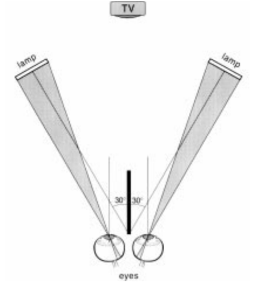
Ideal placement of 2 light therapy lamps, on the sides of both eyes so that the light can reach the nasal region of both eyes' retinas. Image from this study.
Although there is one review claiming that optimal light therapy should be angled downward at 15°, there is no reference and apparently no proof, since there is no evidence of a dorsal-ventral gradient in ipRGC cells placement in humans (although there is for mice's ipRGC cells, as well as for their S-cones). The author of the present document could not trace the claim to any experimental observation nor solid theory, the commonly assumed hypothesis being the intuition that natural sunlight enters the eyes from a top-down fashion, and hence that light therapy should aim to do the same, although this ignores the mechanistic of light rays that in fact bounce up on surfaces and hence enter the eyes from all angles (otherwise we wouldn't be able to perceive objects in the environment), so this intuition is certainly not reliable. Since we know for sure that it's the ipRGC cells stimulation that is responsible for circadian phase shifting, and we know these cells are more concentrated in the nasal and parafoveal regions, it's best to assume as did the study from which the above figure was extracted that light therapy lamps should optimally be placed at eyes level, and in the peripheral vision as to allow for the light beams to optimally reach the ipRGC cells in the nasal-macula area in the retina, with no influence of the vertical angle until more solid evidence appears.
An inexpensive and potentially more effective strategy is to use computer screens at their maximal intensity directly at wake-up for 30min to 2h. Not only the distance to the user is similar to a light therapy device (contrary to TV screens which may be too far to get enough lux), but also the user can stare directly at the screen, which light will stimulate the ipRGC cells in the macula of both eyes. Then, the rest of the day, the user can get exposed to natural sunlight to increase the duration of light exposure without any device. In the evening, the screens must be dimmed and blue light filtered to avoid the circadian phase delay effect opposing the circadian phase advance obtained in the morning. Note however that screens may not be sufficient in winter, due to the reduced intensity of natural sunlight, so light therapy glasses are certainly more reliable.
To ensure your computer screen is useable as a light therapy device, use a lux meter app on your smartphone, this will use the smartphone's light sensor to measure light intensity. Direct your phone towards your screen set at maximum brightness, and position it at about the same height and distance from the screen as your eyes would be when you use it. This measure will reflect what your eyes will perceive. A screen emitting at least 100 lux should be sufficient to get half of the circadian rhythm shifting obtainable with a 10K lux light therapy device.
Are computer screens safe as light therapy devices? They are made to be stared at, and furthermore they emit relatively low bright light (~250 lux at max brightness on the screens the author could measure), and since they are widely used worldwide, if this was unsafe there would be epidemiological data on diseases caused by screens. Nevertheless, the french ANSES stated that data was lacking on chronic exposure to cold light emitted from screens, so that it could not conclude about its safety or dangerosity.
Is the sunlight sufficient or even better than light therapy lamps as some practicians suggest? Generally, no, but sometimes, sunlight an acceptable light therapy, if we keep in mind these limitations of sunlight therapy:
- Sunlight is highly variable: not only on a day-to-day basis depending on if there are clouds or not (refer to this table, showing that cloudless sunlight is indeed more intense (~100K lux) than a light therapy lamp (~10K lux), but if the sun is cloudy or if you stay inside your flat then it can actually emit less light (<1K lux) and with poor blue light content (as shown in figure 2 of this review)), but also on a seasonal basis, with winter sunlight being of course usually lower in intensity than spring or summer sunlight. Hence, although light therapy can be done for free using sunlight during the summer and spring, it is much more advisable to use an artificial light therapy lamp during autumn and winter to ensure a robust and consistent duration and quantity of exposure to bright light every day. The fact that sunlight produces variable lux intensities depending on the weather and presence of clouds makes it a very bad tool for consistent therapies because the resulting effect on the circadian rhythm will vary uncontrollably from day to day and from seasons to seasons, it's like using a drug with a varying dosage everyday, no sane practician would ever suggest to do that. You don't need to trust the table linked above, you can test for yourself by using a lux meter app on your smartphone, this will display the lux you are exposed to (these sensors are linear, hence they should be reliable enough for lux in the range 100-10K).
- Sunlight is inconvenient: a proper exposure to sunlight requires to go outdoors, as indoor sunlight filtered by windows is much less intense and can easily and frequently be lower than artificial lamps. An optimal bright light therapy is done as soon as one's wake up, as more circadian rhythm shifting effect is obtained when exposed to bright light close to the minimal core body temperature (CBTmin) which happens 1-2h before natural wake up. Getting sunlight directly at wake-up is inconvenient, as you need to jump out of bed and go outside as soon as possible, which may not always be possible depending on your other commitments, and also is subject to be exposed to unfavorable weather conditions such as rain and snow.
- Sunlight is overkill: Sunlight is indeed the strongest light therapy, especially when cloudless as it can emit up to 120K lux, no artificial light therapy device can come even close. But having that much lux (light intensity) is unnecessary: the eye's ipRGC cells' sensitivity range spans only 2 orders of magnitude, it's nowhere close to the 9-10 orders of magnitude of the visual pathway. Since it was shown that most people's non-visual (ipRGC) sensitivity to light starts from a 5-10 lux (and sometimes even lower), this means that the saturation point for maximal ipRGC cells stimulation must be around 1000 to 10k lux depending on the individual. And the observation in a study that 100 lux causes 50% of the max stimulation of ipRGC cells further support this. Hence, a light therapy device of 1000 to 10K lux is plenty sufficient to maximally stimulate the ipRGC cells and shift the circadian rhythm, as the sunlight won't provide any meaningfully bigger circadian rhythm shifting effect compared to an artificial light therapy.
- Regularity and duration of bright light therapy are crucial: Since the saturation point is easily reached with artificial light therapy lamps, it's important to focus on regularity and duration of the light therapy sessions. Indeed, a longer session of 1-2h of artificial light therapy will always shift more the circadian rhythm than a shorter 20-30min of sunlight. Since regularity of exposure to a sufficient amount and duration of bright light is crucial, during the winter season (relatively to the geographical location of the user) an artificial light therapy device will certainly provide much greater benefits than the highly variable sunlight.
- Just like food needs, all humans have "spectral diet" needs that are similar but different for each people, with some people needing more light intensity (lux) just like some people need more vitamins or proteins in their diet.
- Note: do NOT directly look at the sun because it can damage the eyes otherwise! Even looking at reflections of sunlight in the snow can cause eyes damage!
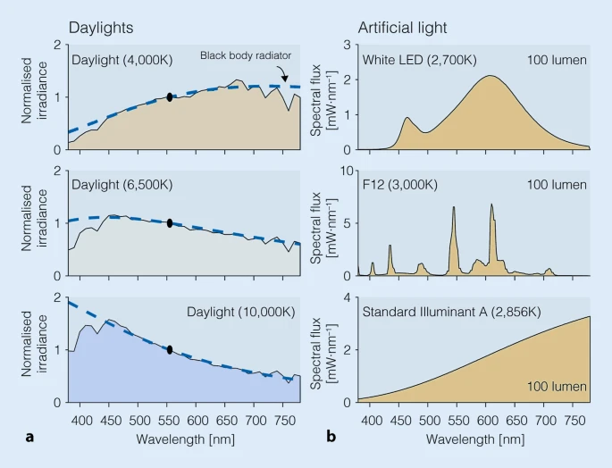
Spectral power distributions of common light sources in our environment, illustrating how little blue light (400-490nm) can be emitted by some light sources including clouded daylight, but especially artificial lights. Figure from this review under CC-BY 4.0.
If you want a cheaper alternative, there are the Re-Timer glasses (cost: ~$120), which I did not try. Re-timer 's green light is sufficient to phase advance, but since it's using green light it doesn't increase vigilance so it doesn't change the feeling of subjective sleepiness in the morning, contrary to blue light which directly reduces sleep inertia and increases vigilance. It was also shown that although green initially suppresses melatonin, the effect is not sustained and melatonin levels recover after 90min even if still exposed to green light, contrary to blue light. Using green light, which is a strange choice because green light is more efficient at pain reduction and about 75% less at shifting the circadian rhythm compared to blue light (TODO: find the source), whereas blue light is optimal for vigilance and circadian rhythm shifting. Currently, only Luminette and Psio make light therapy glasses with completely blue light and hence are the most effective light therapy glasses on the consumer market currently. Also both have several independent studies demonstrating significant phase advance (see their respective websites or google scholar), whereas Re-timer only has one as of 2020.
Another light therapy glasses alternative is Psio (cost: non disclosed publicly). It uses blue light similarly to Luminette (although it's pure blue LEDs, no white light, whereas Luminette uses white light enriched with blue light), but with the difference that the light is pulsed (aka intermittent light therapy). Although intermittent light therapy should be as efficient to induce phase advance than bright light therapy, it may produce less melatonin reduction, hence you would not get the vigilance boost that blue light provides, nor potentially the advantages in increased melatonin levels due to photic history.
Can you make your own light therapy device? I would strongly disadvise against. For two reasons: it's difficult to tweak exactly how much lux you will get and you won't get blue light, or if you do, you risk eye damage. Indeed, blue light therapy glasses project light in the range that is almost phototoxic (phototoxic range: <450nm, but above 460nm it should be fine), as it's also the same range (450-490nm, with an optimal peak at 482nm or ~480nm) that is necessary for optimal stimulation of melanopsin receptors. To reduce the risk of exposure to very phototoxic blue light wavelengths, the method found by light therapy device manufacturers is to add filters to bandpass filter the lower ranges of the blue light wavelengths with UV and near UV lights filters (UV = UV-B and UV-C, near-UV = UV-A, which is up to 400nm). For example, the Luminette enriches white light with blue light with a 468nm wavelength. Also, reducing the light intensity helps, so it's not surprising that blue light enriched lamps and glasses are calibrated to project lower lux (usually 500 to 1500 lux, compared to 10K white light therapy lamps). The phototoxicity is only an issue if the light source is directly looked at (ie, when the blue light beams hit the macula, which is what allows central vision), hence another solution is to avoid looking directly at the lamp and placing it in the peripheral vision, as shown in the figure above.
Let's say you can make a blue light boosted DIY lamp with the right amount of lux (that you can somewhat measure with smartphone apps). Then you cannot assess as easily if the color spectrum (ie, blue and green light emission) is correct and safe, because light spectrometers cost thousands of dollars, which defeats the purpose of DIY for cost effectiveness. Finally, you would also need to add a UV and near-UV light filter and also a complex blue light filter to let only the 482nm wavelength pass through (which would likely be a quite expensive filter to buy), and hope you're doing it right so that it's not harmful to your eyes. At this point, if you're worried about safety, it's just much easier and better to buy a certified light therapy device.
If you really do want to try to make a DIY light therapy lamp or glasses, then it's necessary to use a spectrometer to ensure that the light produced by your device is not emitting in the blue light phototoxic range. See for example this study and this review on the current regulations and equation to calculate phototoxicity of solid-state lighting (LEDs).
Finally, to optimally stimulate the ipRGC cells in both eyes, you would need at least 2 lamps. As written here, one DIY lamp of adequate lux would cost $50 (not including the necessary UV and blue light pass-band filters), for 2 it would be $100. At this point, there's not much advantage in terms of cost to buying a light therapy glasses such as Luminette 3 (229€ brand new, 150€ in second hand but very rare since Luminette 3 came out only recently in December 2019 - note it used to cost 380€ when it first came out in 2006) or a Re-Timer Gen1 (120€), and those devices are already designed to provide the right amount of lux and blue/green colored light to optimally stimulate the cells in both eyes, and their safety is certified. If the added cost is still too much, the Beurer TL30 lamp costs ~35€, for 2 then it costs 70€, which is a cheaper option to DIY. And I know of some people who got effective phase advance and entrainment using a Beurer TL30 daily for several hours so it's effective, you can even mail Beurer to tell you how to optimally use their lamp for circadian rhythm disorders.
So in the end, I think DIY is just too easy to mess up, and we already have devices that work and are affordable. If you just want something cheap to try light therapy asap, just either use a computer screen at max brightness, because they are made to be directly looked at so you know it's safe, or buy a Beurer TL30, which is less efficient than light therapy glasses in particular Luminette 3, but it's better than nothing.
However, there are some online tutorials for very interesting now kinds of do-it-yourself light therapy devices, such as a DIY square lamp mimicking sunlight through a window (with parallel light rays!), and which could be a very promising piece of furniture to equip rooms without a window and make them more hospital for humans, as humans biology requires daily sunlight exposure and hence cannot stay in a room without a window, but this solution could serve as an artificial replacement. Note however the author of the present document could not test the device and so cannot vouch for it, and furthermore given the technical documentation, the LEDs used in this furniture are too powerful and likely phototoxic since the range of wavelength covers the 380-780nm range with a peak at 452nm!
Camping can be an alternative but it's not a free lunch: camping can help if the circadian rhythm is not too out of phase with the external day night cycle (see also here and here), but if the circadian rhythm is too delayed (eg, sleeping around dawn) then the light exposure can actually fall on the phase delay part of one's light PRC curve, which would only worsen the phase delay. Interestingly, it was found that modern occupations since the industrial era (ie, working in offices) leads to a reduced light exposure during the awake time (see also here), which was previously shown to cause biphasic sleep.
Dark therapy and blue blocker glasses
Dark therapy is the strategy avoidance of light exposure, usually in the biological evening. Why is this necessary and how important is it? As explained in the Zeitgeber section above, zeitgebers are double-edged swords, anything that can phase advance your circadian rhythm can also phase delay it. Since light therapy is the strongest zeitgeber and hence most helpful treatment, due to its dual effect on circadian shifting and melatonin suppression (which will hide subjective feelings of sleepiness and also increase sleep fragmentation), it can also be the most detrimental factor if your eyes are exposed to light in your biological evening. Hence, "just as light exposure can shift circadian timing, so too can the strategic avoidance or reduction of light".
To quote a 2019 systematic review on light therapy: "To avoid unwanted changes in the circadian phase or night-time sleep, light exposure in the evening and at night as well as in the morning needs to be controlled, as even the longest wavelengths (631 nm) or intermittent light exposures do induce circadian resetting responses."
Of critical importance, the photic history (see section on light therapy above) means that light exposure in the previous evening will impair the effectiveness of light therapy in the next morning, and also decrease melatonin levels on the next days, and not just the evening when the light exposure happened. This is another reason why dark therapy is always necessary if light therapy is to be done properly, because dark therapy directly increases the efficacy of light therapy.
It was shown that people have different sensitivities to light, with some being hypersensitive to light while others are hyposensitive, as some individuals see their melatonin levels suppressed by half with light exposure of an intensity as low as 6 lux for the most sensitive individual to 350 lux for the least sensitive, hence a ">50-fold difference in sensitivity to evening light across individuals"! Light hypersensitivity is positively correlated with the pupil area, with larger pupils allowing more light to enter the retina and hence more melatonin suppression. This holds even more true for individuals with DSPD (see also here and here), with an estimated 47% of DSPDs being light hypersensitive, and non24 (see also here), which can compound with the mistimed intrinsic circadian rhythm with the day-night cycle which makes these individuals more prone to the sensitive parts of the PRC (ie, the timing when light has more shifting effect on the circadian rhythm). The photic history is also variable between individuals. Light exposure and timing relatively to the circadian rhythm accounts for 71% of the variability in circadian rhythm shifting, hence the importance of controlling light exposure to control the circadian rhythm. The DSM-5 recognizes the possibility of light hypo/hypersensitivity as a predisposing factor of DSPD and non-24: "predisposing factors may include a longer than average circadian period, changes in light sensitivity, and impaired homeostatic sleep drive. Some individuals with delayed sleep phase type may be hypersensitive to evening light, which can serve as a delay signal to the circadian clock, or they may be hyposensitive to morning light such that its phase-advancing effects are reduced". Furthermore, it is often assumed that hypersensitivity or hyposensitivity is symmetrical: if someone is hypersensitive to light, they are so for both advancing and delaying. But that is not necessarily the case and the PRC can be nonlinear, as Czeisler et al hypothesized in the 1980s drawing inspiration from the fact that all humans have naturally asymmetrical light PRC, making it easier to phase delay up several hours rather than phase advance (ie, that's why it's easier even for typical sleepers to rather sleep several hours later than to wake up even just 1h earlier than usual). And indeed, we now know that low light intensity light in the evening is sufficient to phase delay, whereas brighter light and longer exposure are needed in the morning to phase advance. Finally and not least, the photic history could potentially be used advantageously to modify light sensitivity, as it was shown that exposure to only dim light in the biological day made the participants hypersensitive to light in their biological night, hence it's reasonable to assume that the opposite would be true: if let's say I am hypersensitive to light and this makes me prone to phase delays if exposed to light in my biological evening, an alternative to dark therapy could be to simply use a more intense or longer light therapy in the morning to reduce my light sensitivity. This may explain parts of the reasons why very long light therapy seems to be so effective, by giving some additional protection against phase delays (if true, future studies will find that the phase advance of different durations of light therapy will not be linearly proportional but slightly non-linear).
Since blue light shifts the circadian rhythm the most and constantly suppresses melatonin during exposure, it is also necessary to filter blue light in particular, using blue color filters or blue blocker glasses. Since green light can also phase advance and temporarily suppress melatonin production for 90 min, green light filtering is also necessary. Amber and red filters and glasses are generally effective to filter out blue and green light and avoid melatonin suppression due to ipRGC cells unwanted evening stimulation.
Since pupil adjustment to light/darkness and circadian rhythm shifting are causally linked, because both are mostly modulated by the ipRGC cells, pupil dilation is a sign that the dark therapy is done optimally. In practice, this is known since a long time by astronomers, who use red filtered light to avoid pupils contraction which hinders looking at dim light sources such as stars. In scientific studies, low level light therapy (LLLT) consists of providing light therapy but with red light instead of blue or white light, with the red LLLT light used as placebo control to measure the efficiency of blue light therapy. In other words, if you can't see in the dark, there's likely still a too bright light source in your environment that you need to dim down or replace by something else such as red filtered light. Eyes refractive errors such as myopy or emmetropy do not change how the ipRGC cells work.
Furthermore, red light therapy (LLLT) may even be a treatment to help mitochondria in the retina's photoreceptor cells to repair faster and hence improve declining eyesight in aged (>40 years old) individuals. Indeed, "mitochondrial density is greatest in the retina's photoreceptor cells, which have high energy demands, [...] as a result, the retina ages faster than other organs, with a 70% ATP reduction over life, causing a significant decline in photoreceptor function as they lack the energy to perform their normal role."
However, although red light indeed does not inhibit melatonin contrary to blue, light, 40 lux of red light is sufficient to change cortisol and alpha amylase levels, which suggests that there may be other non-visual pathways mediating these physiological changes induced by light beside the well-known one mediating melatonin inhibition through the suprachiasmatic nucleus and the pineal gland (but take this result with a grain of salt as it was published by one study in Hindawi, a predatory journal, this needs confirmation).
Thus, it's important to understand that likely every levels of light intensity and color will affect the circadian rhythm, there is no 0 lux condition apart from staying in isolation in a pitch black room. But this is unnecessary, what matters is that the evening delay is much less than the daytime phase advance. For example, it was shown that being exposed to bright light during the day reduces the phase shifts induced by night-time light, with the opposite being also true. So this is all a matter of balance: to phase advance the circadian rhythm, either reduce the night time lights intensities, or increase the daytime light intensity (and exposure duration), both can result in equal benefits. Or both can be done to get even more phase advance.
As a mind image, picture the following: daytime light drags the circadian rhythm phase to the left (earlier time = phase advance), whereas biological evening and night time light drags the rhythm to the right (later time = phase delay), they are opposing forces and it's possible to tip the equilibrium one way or another by changing one or both forces.
To do dark therapy without blue blocker glasses, it's possible to install f.lux or another blue light filter app. These apps are effective, but not sufficient, as it's also necessary to dim the screen brightness to the minimum. Indeed, both light intensity and color matters, it's not enough to just filter blue light, or to dim down the light intensity, it's necessary to do both.
Here are the effect of blue light filtering apps and screen brightness dimming, as indicated by this excellent review:
> Smartphone use may delay sleep onset. One factor is the light emitted by their screens, but another may also be its entertaining character or related psychological effects, or both. Using the “night shift” mode of modern smartphones, the colour balance of the screen can be shifted to “warmer” and orangeish colours depleted in short-wavelength light. On a recent iPhone 7, this amounts to a reduction of melanopsin activation by 67% at full display brightness. This might seem like a large reduction at first, though by simply dimming the smartphone to its minimum level, the melanopsin activation can be reduced to less than 1% of the activation at maximum display brightness.
And this quote is for smartphones, which have a much lower minimal brightness than computer screens because they need to save power for extended battery duration, and so they try to save on hardware backlight power. In my experience, using a smartphone with the Twilight app for blue filtering and dimming light to the minimum on the phone and a bit more using the Twilight app allows to use the smartphone with little impact on the circadian rhythm or feelings of tiredness, without needing to wear blue blocker glasses. Configured like that, a smartphone is probably safer to use for reading than a book, because the bed lamp you need to light your book can also shift your circadian rhythm.
On computers, unfortunately most computer screens do not dim much the backlight or even at all, as they rather use a variable flickering scheme - called Pulse-Width Modulation, so it's preferable to rather use a smartphone or wear blue blocker sunglasses. Indeed, if the screen uses PMW, then it is always backlighted at the maximum intensity it can, but it is simply intermittent so it visually looks like it's dimmed, but your eyes still receive as many photons and hence a PMW screen acts just like a pulsed light therapy device. Thus, if your screen uses PMW, it cannot be used in your biological evening without risking unwanted circadian phase delays and melatonin inhibition (ie, not feeling sleepy). Prefer to use your smartphone, which usually don't use PMW, since it's less effective at reducing battery consumption than really dimming the backlighting. If you plan on buying a new computer, you can check whether it uses PWM by reading notebookcheck reviews.
If your screen is not using PMW but cannot dim as much as you would like, some apps such as Nelson Pires' Dimmer can be used to add a transparent black window that will mimic a brightness reduction, but it won't actually reduce the backlighting, so the reduction of lux won't be optimal but it will be better than without dimming.
A very convenient alternative, instead of installing all these softwares and modifying all your environment's light lamps, is to wear blue blocker SUNglasses.
Blue blocker glasses are just a wearable device that allows to do dark therapy while being independent from environmental conditions. Blue blocker glasses are amber/orange glasses filtering blue and green light, without dimming the light. You can use them when you are out at a friend's house for example, or if someone is at your house for a dinner or something, you can still do your dark therapy while keeping the lights on for your guests, or simply to read a book without changing your light (else you need to use a red light bulb, which is inexpensive but makes it hard to read).
Blue blocker SUNglasses are just like blue blocker glasses, but in addition they have a transparent black shading layer to dim down light. Hence, they both filter blue light and dim any light source (which includes devices where you can't install a blue filtering app, such as alarm clocks, TV screens, etc).
Blue blocker glasses should be used 2-3h before habitual bedtime to allow for endogenous melatonin to build up.
Here is a DIY blue blocker sunglasses made out of a UVEX Skyper blue blocker glasses, with added 5% black shading/tinting filters for cars windows (one filter outside and one filter outside = 2 in total, 5% means that 95% of light is filtered), simply taped onto the frame:
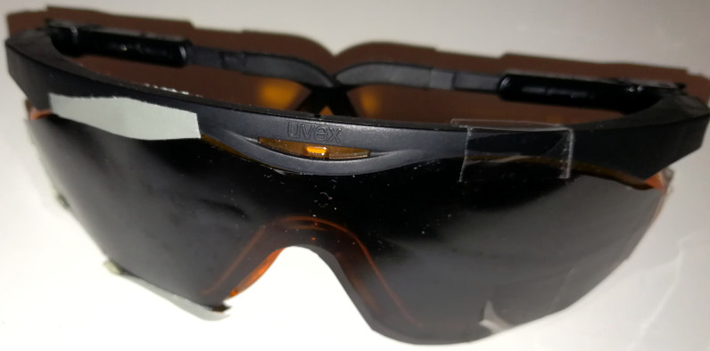
And here is what it looks like to look through a blue blocker SUNglasses (so it's also dimming down the light - in practice it can dim down sunlight so much that it looks like it's night, which is perfect):
Without:

With the blue blocker SUNglasses (same ISO and photo parameters as the picture above - note how we can see the shape of the neon tube, just as if it was itself less intense, which also shows that obviously you should NOT drive when using the blue blocker SUNglasses):
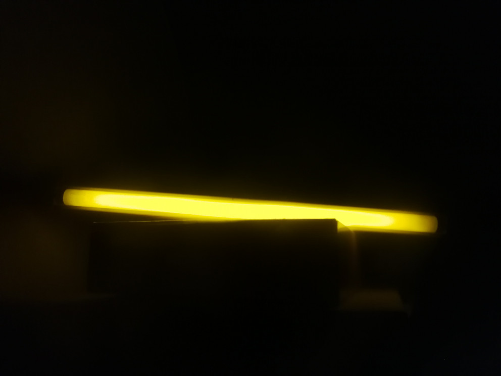
If it's cumbersome to do your own blue blocker SUNglasses, it may be possible to find laser safety glasses (needs to block both blue and green lasers, hence should be red colored lenses) with a reduced "visible light transmittance" or "Daylight Transmission (VLT)", such as this one.
Word of caution: not all blue blocker glasses are alike. Most are made for "comfort", to filter the blue light from screens and "reduce eye fatigue". But not from sunlight, which is very different and hence these will be insufficient for any other purpose than filtering screens light (ie, maybe not even sufficient to filter room lamps). Comfort blue blockers are very different from industrial-grade blue blocker glasses, the latter being made (and advertised) to protect from light hazards that can damage the eyes of industrial workers. So if you see blue blocker glasses being advertised as comfort devices, with photos of people in front of their screens, then likely they are not efficiently filtering all of blue and green light. If the glasses are tinted yellow, they are of very low quality, don't choose that, prefer orange/amber glasses. On the opposite, if the glasses are presented as safety wear for industrial workers, they are likely much more filtering.
Are "comfort" blue blocker glasses or coating for prescription glasses sufficient? They are at least better than nothing for sure, but according to the french ANSES, they provide only "very variable" and "weak or inexistent" blue light filtering that "cannot possibly" help to maintain melatonin secretion. They should hence be disadvised.
If possible, it is strongly advised to choose blue blocker glasses that provably filters the whole spectrum of blue and green light. To prove the filtering efficiency, it's simple: use a spectrometer behind the glasses under the sunlight. However, spectrometers are quite expensive. But fortunately there are a few tests you can refer to, such as the Blubox review, which shows that both UVEX (cheap industrial safety props maker) and Blublox (more expensive but filters a bit more) filter most of the blue and green light bands. Consumer Reports concluded that only the UVEX Skyper glasses blocked nearly all of blue light out of 2 other more expensive glasses. There is also this other spectrometer review with more brands (and it's also a tutorial on how to make your own DIY blue blocker glasses). Indeed, an adequate blue blocker glasses must also blocking green light (here's a testimony). Indeed, green light can phase advance and can temporarily suppress melatonin production temporarily for 90 min, and melatonin suppression prevents the appearance of feelings of sleepiness and decreases sleep quality by increasing sleep ation. Another thing to consider is how much the blue blocker glasses are covering your eyes: if they don't cover adequately, light coming from the sides can still reach your eyes, and actually most of the ipRGC cells (the ones that shift your circadian rhythm) are located in the nasal region, so light coming from the sides of the eyes are very effective at shifting your circadian rhythm.
If you have prescription glasses, you can choose the Uvex S0360X Ultra spec SCT Orange, which very comfortably fit on top of any prescription glasses (tested with large aviator-style prescription glasses) and still covers from all directions of light. The Uvex S0360X Ultra spec SCT Orange uses exactly the same material and hence has the same blue and green light filtering efficiency as the Uvex Skyper tested here. Indeed, these two models are the only with SCT-Orange dying (SCT stands for Spectrum Control Technology), as indicated by pages 45-47 of this document. All UVEX dyes protect from 99.9% of UV too. UVEX is a brand of Honeywell. The UVEX glasses were used in several studies on light and dark therapy (here on non-24, here on night shift workers).
Here is a photo of UVEX S0360X:
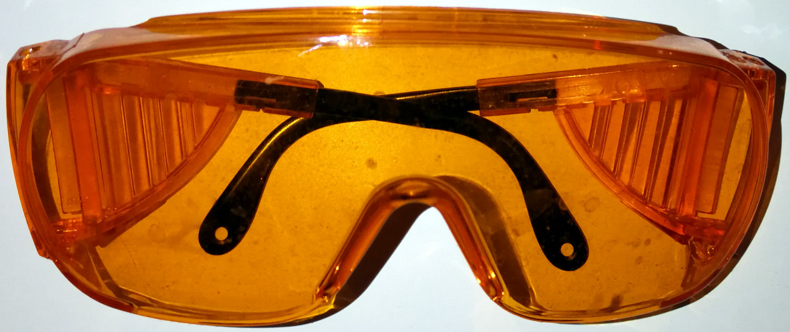
Just like the Skyper, this one can be adapted to SUNglasses by adding shading films.
In practice, I use 2 pairs of UVEX blue blocker glasses:
- one with shading film that I use to dim down uncontrollable light sources when there is sunlight or at the office when I work late to dim down the bright neon lights,
- and another one without a shading film (so just the blue blocker glasses as-is) that I use in the evening at home to simply filter the blue and green lights.
Since there is currently no commercially available blue blocker sunglasses to my knowledge, you will need to do it yourself. If you wear prescription glasses, an easier solution might be to buy a clip-on shading lenses, that you clip on your prescription glasses, and then fit the UVEX S0360X on top. This should both filter blue and green lights, as well as dim down all light sources. It may also be possible to use the clip-on on the UVEX glasses themselves (but I did not try). However, the clip-on may not be dimming as well as the DIY solution.
To test if dark therapy is done right, check if your eyes pupils are dilated just like as if you were in the dark. This test works because it's the same photoreceptive cells in the eye (the ipRGC cells) that are both modulating the pupil's dilation and circadian rhythm shifting in response to light exposure. Hence, if you can see in the dark while using a device or doing an activity, it's ok for dark therapy and it can be used during the 3h before bedtime. Otherwise, if you can't see in the dark, it means some light emitting device needs to be adapted/removed.
Transition/progressive/photochromic lenses not adequate because they require UV, hence they work only against direct sunlight (ie, not through a window, and not with artificial light either). Hence they are not adequate.
Alternative for prescription glasses: laser safety clip on amber glasses, if they filter from 400nm to 550nm then it should be good enough for dark therapy, and they should be certified since it's for laser safety hence you are guaranteed they will filter those wavelength.
If UVEX glasses become unavailable in the future, look for laser safety amber or red glasses filtering from 400nm to 550nm with certification, this should be as efficient if not more than the UVEX glasses, and laser safety glasses will always be available in the future as laser is a generic technology that will always be useful.
Shading films quality can be assessed with their VLT percentage, but for clip-ons it's less standardized, you won't know how much dimming you'll get so it's impossible to say what clip-ons to use exactly. If you want more reliability, use shading films with a defined VLT percentage. If you want a more ergonomic and easy solution, use clip-ons with flip-up so they can easily be put on and flipped up if you want to stop using the shading without removing the clip-on, this will work well on prescription glasses and you can combine with the UVEX S0360X on top. However, clip-ons are incompatible with the UVEX glasses themselves, whether S0360X or Skyper, they are simply too small and misplaced for these big glasses, so the clip-ons not only look weird but they don't dim light from all the peripheral vision. Use clip-ons only on prescription glasses, not on the UVEX glasses. If you want the UVEX glasses to be shaded themselves, use shading films for car windows with 5% VLT and tape them on the UVEX glasses as shown above.
Eyes iris color does not appear to influence the hypersensitivity to evening light exposure. Blue blocker glasses can also be used to protect the eye from the phototoxicity of near-UV blue light (405nm) and the study's authors would recommend them for "high-risk populations, such as people with dry eye, contact lens users, the malnourished and the elderly".
(Side-note: although the idea to make the blue blocker glasses into sunglasses is my own, a previous blog post independently communicated a similar idea, to make "amber tinted shaded glasses" to treat circadian rhythm disorders)
Softwares for dark therapy
Although softwares are suboptimal and insufficient for an adequate dark therapy (see the previous section), they can nevertheless help. Here is a list of recommended softwares to complement dark therapy:
- Dark Mode extension on Chrome, Firefox, Opera and Edge.
- Alternative: Can set Dark Mode on whole Windows interface, and Chrome will adapt and show a dark mode by default then.
- LightBulb for blue light filter on Windows (but not as good as a blue blocker glasses), Twilight on Android.
- FreshEyes extension for Chrome to change colors to make them more visible when using a blue light filter.
- Nelson Pires' Dimmer v2
Review of wearable light therapy glasses (November 2020)
Criteria
The following is a review of the technical specs of light therapy glasses available or advertised as of November 2020. Since the author does not have the possibility to test every devices, the review focuses on whether the devices technically fits the criteria for an effective light therapy to manipulate the circadian rhythm.
The goal of all light therapy devices to be effective is to maximally stimulate the ipRGC cells in the eyes. Hence the crucial parameters for an effective light therapy device are:
- orientation (ideally on the sides).
- light intensity (>= 500 lux, as computer screens can deliver ~250lux already).
- light color (blue stimulating the most and red the least and 480nm or 482nm blue light being optimal).
Furthermore, efficacy of light therapy is affected by the duration of exposure, hence a long battery is beneficial to better manipulate the circadian rhythm, as it seems that circadian rhythm disorders need much longer daily light therapy sessions (1-4h) compared to seasonal affective disorder (30-60min).
Hence, this review will focus on the following technical specs:
- Light color wavelength in nanometer.
- LEDs position/orientation.
- Battery duration.
- Form factor: full glasses or lightweight "half-glasses" (just a rail sitting on the nose). Half-glasses styles should better fit with prescription glasses and be lighter, but full glasses can provide more features such as interchangeable lenses to double as dark therapy glasses.
- Safety: UV filtering and nanometer wavelength >= 460nm.
- Published studies to back up this specific device's efficiency (and not just some general papers about light therapy).
- Price.
- Other particularities such as blue light filtering coating (so double as dark therapy glasses).
Blue light emitting glasses
These glasses allow to provide the full spectrum of blue light therapy effects, such as maximal circadian rhythm manipulation (185x more compared to other colors), mood improvement and depression treatment, energy boost (cortisol release).
- Luminette V3: the tried and true light therapy glasses. Since their first model in 2006 when the Lucimed start-up emerged from the University of Liège in Belgium, Lucimed made 2 other iterations. The Luminette v3 came out in December 2019, it emits continuous white light plus 468nm blue light. The leds are placed above the eyes in a rail that goes far enough to the sides so that rays are projected to the nasal area of the retina, although the placement could be more optimal if LEDs would be placed on the sides on the eyes to maximally stimulate the nasal part of the retina. The LEDs are numerous, more than with any other currently available light therapy glasses. It has 3 different light intensity settings (500 lux, 1000 lux and 1500 lux). After 8 months of daily usage, the battery lasts 11h to 12h of continuous light therapy with a single charge. The form factor is "half-glasses", so that it's only a rail that sits on top of the nose, so that prescription glasses can comfortable fit underneath, even large ones (tested with aviator-style large prescription glasses). Safety-wise, the light is UV-filtered, but the blue light is a bit on the low-end as below 460nm it can become dangerous, so Luminette with 468nm is still on the safe side but Lucimed could tweak Luminette v4 to target 482nm instead, which would be even more optimal to stimulate ipRGC cells while simultaneously reduce safety issues. It nevertheless complies with current USA and European (CE)'s safety regulations. Luminette v2 is very similar to Luminette v3 but has less battery (6h according to a user's test) and is more bulky, but otherwise works as fine as long as you recharge the battery every day or 2 days. There are several studies on the Luminette devices for sleep and circadian rhythm disorders, and there are more underway for example for depression treatment. The Luminette has been successfully used for entrainment by several individuals with non24 (including the author), and also by some individuals with DSPD, with even one formal study on DSPD, a rare occurrence for currently available light therapy glasses. Hence, Luminette is currently the most scientifically backed light therapy glasses available on the commercial market. Price: 229€ in Europe, $199 in USA.
- Psio: continuous and intermittent blue light, with simultaneous audio stimulation for relaxation. It emits 470nm blue light, projected from LEDs at the top of the glasses but reflected on the lens and hence with rays entering the eyes from all angles, including towards the nasal area of the retina. No information about battery duration. Form factor: full glasses. Price unknown (need to contact the seller to program an appointment). One study is available on melatonin inhibition, but not on circadian shifting. Safety-wise, there are no UV, and 470nm blue light should be safe, although it could be safer and more optimal by increasing the wavelength to 480nm.
- Ayo: blue light emitting glasses. These are among the most well-known competitors to Luminette (and actually are more common). The blue light is in the 470-475nm wavelength range and with "an irradiance of 250 μW/cm2" and 500 lux to 1500 lux depending on the selected intensity. LEDs placement: 2 LEDs directly above each eye (4 LEDs in total), and diffused (partly) with a plastic rail. The orientation of the light rays does not seem ideal to target the nasal area of the retina, the LEDs seem to rather target the macular, which is not ideal. Form factor: lightweight half-glasses, so can likely fit all prescription glasses. Safety-wise, the wavelength is high enough to ensure there is no blue color phototoxicity, and the light is also certifiably UV-free and infrared-free independently by the TÜV Rheinland. It complies with USA and European (CE)'s safety regulations. No information about battery duration. No peer-reviewed study on this specific device (but there is one non-peer reviewed bachelor report on depression). Price: $299.
- Propeaq: continuous blue light of "468nm at an intensity of only 35 lux". They have a full glasses form factor, so that they maybe won't fit with prescription glasses underneath. The light intensity, if not an error (they may have meant lumen, which is the amount of light that the LEDs project and may result in bigger lux at the eyes level since the LEDs are "1.5cm away from the eyes"), is too low to see a significant circadian rhythm shifting effect. No indication about LEDs placement (no orientation info). No indication about UV filtering, but apriori this is not necessary if the LEDs only project blue light of 468nm. The glasses come with 3 sets of lens so it can double as dark therapy glasses with red lenses, and it also offers unique "blue glass" lenses with a sunshading to filter sunlight except for the blue light wavelength that can passthrough 100% unfiltered. However, this may be dangerous to the eyes, as the blue light from sunlight is too intense, and with the filtering of other wavelength except blue light, this may subjectively induce the user to feel less exposed to intense and possibly eye damaging sunlight than with regular sunglasses, so that more tests are needed to assess whether these 3rd set of lenses are safe to use. No information about the battery. The Propeaq glasses cost 199 euros. No study on this device.
- Pocket Sky: continuous blue light with a wavelength between "460-480 nm". No information about light intensity (lux). Form factor: very lightweight half-glasses, with LEDs placed as an overhead rail, which is good enough as it extends to the sides. Due to the very slim design, the device only carry a very thin battery, which can lasts for 3-4 sessions of 20min duration each. Beside the lack of light intensity information which precludes the possibility to fully assess the effectiveness of the device, furthermore the FAQ states that the device automatically starts when extracted from its case, and stops automatically after 20min. This precludes any use for circadian rhythm shifting, as several hours of light therapy are necessary. However, a very nice feature is its "sunrise simulation": the device starts to progressively light up for the first 20 seconds when activating the glasses, which allows to gently let the eyes' pupils accommodate to the light therapy. This is a very interesting feature that would be a welcome addition to all other light therapy devices, as this can greatly reduce the risk of side effects due to sudden bright light exposure, but meanwhile as a user you can workaround this lack in other devices by keeping the eyes closed for the first 20s when switching on the light therapy glasses, which will also allow the pupils to gently accommodate. Another nice feature is that the glasses' case also serves as a recharging station, which is a very nice idea to ensure proper storage of the device when not used and to reduce the risk of breaking it. Price: 165 euros in pre-order. No specific study on this device.
- Sula: continuous blue light with wavelength in the "Blue-Turquoise (470-480nm)" range. Form factor: full glasses, which apriori cannot fit with prescription glasses underneath, although they offer to replace the lenses with prescription lenses if asked to. No information about light intensity (lux) nor LEDs placement (and hence orientation). Includes blue light filtering lenses, so that they can double as dark therapy glasses (although it seems they use a coating, which are much less effective than orange/red tinted lenses). No specific study on the device but they provide an accurate bibliography of general studies on light and dark therapy. No information about the battery. No price nor public availability for now.
- Lumos Lux: founded by Stanford researcher Dr. Jamie M. Zeitzer who is a long-time researcher in light's effect on biology and circadian rhythm, and he indeed published a lot of papers on the topic. The video at the bottom with Dr. Zeitzer is a very good accurate introduction to light therapy. However, there is no precise information about the glasses: the wavelength nor light intensity are detailed, although it seems clear the glasses emit blue light. The device intends to allow for a full control of the light exposure, hence the form factor is full glasses, and it includes blue light filtering lenses, so that the glasses can filter all blue light and fully control the exposure. Blue LEDs are placed on the glasses legs and reflected on the lenses, so the orientation is adequate, maybe even optimal. No specific study on this device. This device is promising and is certainly conceived by an academic specialist in light therapy and circadian rhythm science, but there is simply no info on which we can assess whether the device can be effective. Price: unknown, and device not available for sale yet.
Green light emitting glasses
Although green light has shown some efficacy to shift the circadian rhythm, it has shown less effectiveness than blue light for both circadian rhythm shifting and cognitive effects (mood and energy), both in terms of magnitude and duration (the effect of green light on melatonin suppression is limited in duration to 90min as continuous exposure will see reduced effect, whereas this does not happen with blue light). Green light is currently investigated to reduce pain.
- Re-Timer 2: green-blue 500 nm dominant wavelength light emitting light therapy glasses. LEDs placement: bottom, which is not an optimal orientation to attain the nasal part of the retina. Only 4 LEDs are used, similarly to Ayo. Detailed specifications are available, which is a welcome approach that should be followed by all manufacturers (instead of providing only marketing speech). Light intensity is from 315 lux (143 µW/cm²) to 506 lux (230 µW/cm²). Light pulse is 50 to 166 hertz. Battery duration is "up to 6h" according to the Re-Timer website, but a user reported that this is inaccurate as the battery lasts in fact much longer, about 14h with one charge, which is on par or slightly longer than the Luminette 3, and is hence sufficiently long for circadian rhythm shifting. Form factor: half-glasses. Safety-wise, these are the safest light therapy glasses, as the wavelength is high enough to ensure there is no risk of blue light phototoxicity (since the light is actually green - although one study suggests it may not be that simple), and the light is UV-free. Price: 199 euros. As of 2020, there are two studies on this specific device: one study showing it can shift the circadian rhythm and another one about its effects on eyes health.
- Pegasi 2 (Dream Glasses): green light therapy glasses. LEDs placement: top with a short rail that doesn't go to the sides, which is not ideal but ok, it should be able to stimulate the ipRGC cells in the macula and some in the nasal part of the retina, although suboptimally since the rail is too short. There is no technical information, no information on the battery, and even their photobiological safety EN62471 seems fishy as they mention they have it but they do not provide a link to the full document and it cannot be found elsewhere on the internet. Price: $198.99.
Final word
Although the author did not test other glasses than the Luminette, competition in this field is highly welcome and hence if you would like to try one of the promising blue light therapy glasses, this will allow not only to test alternatives but also support the development of these alternatives. Sessions last only for a maximum of 30 min before the glasses turn off, but they can be turned on again.
Light therapy is certainly a therapy worth trying if no contra-indications (epilepsy, retina diseases, photosensitivity).
Anecdotally, so far from all those who tried on reddit or discord, there's no one who did not get a significant effect on their circadian rhythm, but this does not mean they were all entrained, as for some light therapy was not sufficient (especially when there are comorbid diseases which worsen the circadian rhythm disorder such as restless legs syndrome).
Eye mask and ear plugs - do not underestimate these tools
Sleep disturbances can have a very strong detrimental effect on sleep efficiency and the circadian rhythm that can carryover several days after the disturbances happened. Since this is a frequent issue in intensive care units in hospitals, where the patients are often bothered for treatments regardless of the time of the day or night, several studies looked into potential strategies to reduce the impact of external sleep disturbances.
The two most efficient strategies seem to involve wearing earplugs (to reduce auditory noise) and an eye mask (to reduce unwanted light exposure). The combination of both was found to be more effective at improving sleep than any alone, and they increased the amount of deep sleep and hence sleep efficiency. A systematic review found that using earplugs even reduces the gravity and occurrences of delirium in ICU (a concrete real-life example of the adage that noise can drive anyone crazy). Interestingly, a study found that melatonin is more effective to improve ICU patients' sleep than using an eye mask and ear plugs, but obviously combining would only be better.
Although an earmask and an earplugs can't directly entrain your circadian rhythm, they are essential to avoid disturbances from messing with your sleep and hence your entrainment. Indeed, as a rule of thumb: you can't stay entrained if you are sleep deprived.
What eye mask to choose? A silk black eye mask is inexpensive ($10) and very comfortable, use that in most cases. For those who have no curtains whatsoever or who are super sensitive to light and don't mind being less comfortable (or if you are on a road trip for example and you have no way but to be directly exposed to sunlight in the morning), the 3D black eye masks can be better suited, as they are rigid and hence completely opaque, but they are less comfortable and also a bit more expensive (but still very affordable, like $40).
Here is a simple silk eye mask:
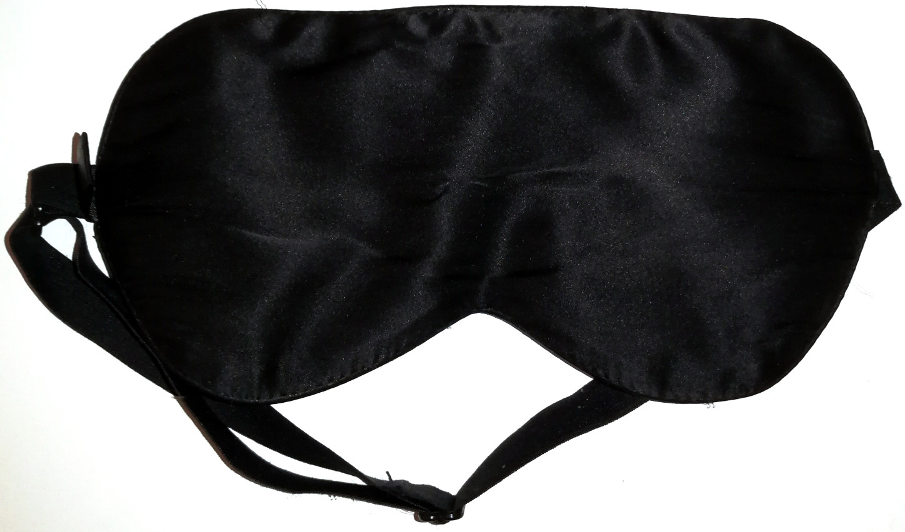
Do NOT put cardboard or black plastic behind your window to curtain it, because this will accumulate temperature in the window's glass and ultimately break it! Prefer to use an eye mask. If you really want to curtain your window, you can try a light reflector / windscreen shade reflector or using aluminium foil on outwards to reflect the light and temperature, and then add a black tape on the inside layer, which is a technique reported to be effective by a Discord member, but be warned the author did not test this and there are risks this may break your window: https://www.amazon.co.uk/SILVER-FOLDING-WINDSCREEN-SHADE-REFLECTOR/dp/B004VMORXE
What type of ear plugs to choose? There are essentially two types of ear plugs: inner ear plugs and outer ear plugs. The issue with ear plugs is that they need to be comfortable enough to stay the whole duration of your sleep. In my experience, it seems most of the time when an ear plug falls, it's because I unconsciously removed it because of itchy ears.
How to avoid itchy ears with ear plugs? Inner ear plugs block the inside of the ear canal and this often causes a proliferation of bacteria or fungus, which likely produces itchy ears. If you don't want itchy ears, then the only way is to avoid that is not put anything in the inner ear. Luckily, that's exactly the purpose of outer earplugs. They are more difficult to handle so you have to learn how to use them, and they reduce a bit less the noise, but they are much more comfortable for sleeping. Plus, if they are in silicon, they are washable with soap and water, so they are reusable for about a week. Just make sure to NOT put the outer ear plugs inside your ears, always keep them mostly on the outside. Examples of outer ear plugs in silicon that I tested: Mack's silicon ear plugs or Medigrade silicon ear plugs.

Also, if you use outer earplugs, don't worry about accidental events: they don't mask alarms or very loud noises, they just tone down, so you will hear your alarm clock in the morning and hear the siren if there is a fire, it's just so toned down that you can choose to ignore it and go back to sleep if you want to. So the sound is less filtered than with a typical inner ear plug, but the advantage is that they do not get itchy and it's highly comfortable to sleep with outer earplugs compared to inner earplugs.
Food timing, diet composition and metabolic disorders
The digestive system is exquisitively linked bidirectionally with the circadian rhythm. Indeed, the suprachiasmatic nucleus, better known as the "master clock" processing photic signal to entrain the body's circadian rhythm by signalling the pineal gland when to release or inhibit melatonin, also includes leptin and ghrelin receptors, the hormones regulating appetite and hunger respectively, which makes sense since they also follow a 24h circadian rhythm. The gastrointestinal tract is the biggest producer of melatonin 2 orders of magnitude (by far) and in response to food, the pineal gland being unnecessary for the body to produce most melatonin. Melatonin is then able to influence the brain by readily crossing the blood-brain barrier. Perhaps there is no better illustration of the intimate relationship between the digestive system and sleep than the recent finding that accumulation of oxydants (ROS) in the guts is the cause of death by sleep deprivation. The parasympathetic system, also called "digest and rest system", is a well-known mode of the autonomic nervous system with strong interactions with the central nervous system (brain). Each organ has its own clock, and for the digestive system, its clock is reset by food intake.
.png){kind=link}
Here is an excerpt from a scientific statement of the American Heart Association:
> The magnitude of circadian regulation of metabolism is underscored by recent appreciation that metabolism is an integral component in the mammalian circadian network.55,63 More specifically, the molecular timekeeping mechanism within individual cells, known as the circadian clock, directly modulates multiple metabolic processes in a time-of-day-dependent manner, whereas fluctuations in metabolism act in a feedback manner, thereby modulating the clock mechanism (through changes in energy charge, ROS, redox status, acetylation, O-GlcNAcylation, etc).55,63 An added layer of complexity stems from appreciation that the responsiveness of the heart to a variety of factors known to modulate metabolism is similarly subject to circadian regulation (eg, insulin responsiveness).64,65 In many ways, metabolism can be considered a “moving target.”
For a quick introduction/summary of some of the infos that are in the following sub-sections, here is an excellent video by Dr. Rhonda Patrick:
VIDEO: Late-night eating and melatonin may impair insulin response
The interactions between the digestive system and the circadian rhythm are highly interesting but complex and still under active research, hence we will split this section into multiple sub-sections for clarity.
Meal timing and melatonin
Food timing is crucial, both for health and to shift the circadian rhythm. A whole body of work emerged in the last decade demonstrating the crucial importance of food timing in metabolic regulation, and it's worsened by a genetic mutation.
Several studies found that high levels of melatonin in the blood reduced glucose and insulin tolerances (ie, increase insulin resistance) for everyone, and this effect could be reproduced during daytime with exogenous melatonin pills. This interaction happens regardless of the time of the day, as supplying melatonin pills during the day increased insulin resistance just like at night. This detrimental interaction was further worsened for carriers of a mutation in melatonin type 2 receptors called MNTR1B rs10830963-G allele, as this allele explains 26% of the variance of glucose profile, and is estimated to be quite highly prevalent, as an estimated 30% of the world population have it, and with 51% of the carriers being of European ancestry. A meta-analysis found that the MTNR1B rs10830963 mutation could be a marker of diabetes type 2 in South Asia populations, and an analysis of the UK Biobank found the G allele and late chronotype increase the risk of diabetes. Another analysis of the UK Biobank found that the individuals with the G risk allele, apriori with a delayed sleep phase, but who shift worked (ie, worked later according to their circadian rhythm) may not have increased risks of diabetes. However, the effect size of the associations between metabolic issues and MTNR1B mutations usually remain small due to not accounting for the time of assessment and hence the melatonin levels (see also here). Indeed, the culprit is not the genetic mutation, but melatonin itself, of which the genetic mutation is only a magnifier: a cross-over study found that late dinner when melatonin levels are high in the blood impaired glucose tolerance, and it was even worse for the individuals with a genetic mutation MTNR1B in melatonin receptors type 2, in particular the G allele although the C allele also increased risks. Note also this study was only on CG carriers, meaning they only had one G mutated allele, and on female rugby professional players, hence this effect is not due to sedentarity, and it can be even worse for the double GG alleles carriers, as the Figure 1 of this study on DSPD shows.
But metabolic issues such as diabetes are not the only association of the MTNR1B mutations: they are also highly frequently associated with circadian rhythm disorders. Although it was already known that diabetes risks were increased by sleep disorders including "short, low-quality or mistimed sleep", it was found in a study on cohorts that carriers of the MTNR1B rs10830963-G mutation have a significantly delayed melatonin profile (1.37h) and longer duration of elevated melatonin profile (41 min). This is exactly in the range of non-24 (25h or 24.8h to 25.8h) and DSPD (between 24.5h and 25h) circadian rhythm disorders. In other words, carriers of the MTNR1B rs10830963-G mutation had at least a DSPD circadian rhythm disorder. Interestingly, the study further found that early risers among these carriers, in other words individuals with DSPD who constrained their sleep to wake up earlier than their circadian rhythm, had increased risk of diabetes. The authors further tested whether sleep deprivation was a factor, but they found that "the relationship between rs10830963 and melatonin duration is not mediated by sleep duration" — in other words, circadian misalignment is sufficient for increased diabetes risk for carriers of this mutation and who eat when melatonin is high in their blood. They note that not only eating and melatonin has a detrimental interaction, but also the reduction of night-time melatonin signalling has the same effect, increasing risks of diabetes. The study concludes that "MTNR1B rs10830963G extends the duration of melatonin production later into the morning, and waking up earlier in the morning magnifies the diabetes risk with MTNR1B genotype", and hence that the carriers of these mutations should avoid waking up too early, or at least eating too early to avoid "food intake to coincide with elevated melatonin levels in the morning", to avoid this detrimental interaction between melatonin and glucose-insulin intolerance. A study on mice further showed direct evidence that meal mistiming and circadian misalignment can directly cause diabetes, in wild mice that were otherwise fed the same quantity and diet as other mice, but just slept and ate out of phase with their circadian rhythm. As a side-note, since bright light therapy efficiently inhibits melatonin, it could be a potentially helpful venue to reduce the risks of DSPD who are early risers due to work constraints. This study is of extreme importance for individuals with circadian rhythm disorders, as it demonstrates that the usual sleep hygiene predicaments, beyond their ineffectiveness, can also cause serious metabolic diseases such as diabetes.
The evidence of a strong association between the MTNR1B mutations and circadian rhythm disorders is only emerging but is very compelling. The cohorts study above studied DSPD, but another study found a similar association not only with DSPD, but also with 4 individuals with non-24 who were misdiagnosed, as their analysis shown they were carriers of the MTNR1B rs10830962 mutation, but the authors unfortunately did not discuss this association as they clearly were unaware of the link between MTNR1B and circadian rhythm disorders and metabolic disorders. Furthermore, we mentioned above that individuals carrying the double GG alleles have a higher risk of diabetes than CG carriers, but also interesting to note is that they also have a more delayed melatonin profile (see the DLMOff in Figure 1). The author of the current document highly suspects than individuals with sighted non-24 may commonly have the GG mutation, which unfortunately remains to be tested.
In addition to melatonin interacting with insulin through the melatoninergic receptors on the pancreas, it was hypothesized in 2014 that melatonin may interact with insulin directly at the protein level, and hence that melatonin type 2 receptors could be a promising avenue for new treatments of diabetes. This is now confirmed, since we now know that not only does melatonin inhibit insulin, but also insulin inhibits melatonin, arguably as a failsafe to avoid the occurrence of the detrimental interaction between glucose tolerance, insulin resistance and melatonin when possible. Furthermore, about 70% of melatonin is used (metabolized) by the liver, which is also the organ that regulates insulin.
Melatonin also has a wide spectrum of antioxydant activities, including in the upper tract where melatonin not only regulate circadian entrainment, but also does "free radicals scavenging activity, protection of mucosa against various irritants and healing of various GIT lesions such as stomatitis, esophagitis, gastritis and peptic ulcer".
A new molecule, Nocturnin, which also show circadian fluctuations, has been shown to mediate fat metabolism. This may be an additional piece to the melatonin-insulin interaction puzzle.
The body includes a lot of peripheral clocks, as shown by the figure 2 of this review. This suggests that metabolic dysregulation may happen with any kind of internal desynchronization between the central clock and any of the peripheral clocks, not just the digestive system, as summarized in the figure 4. The two figures are reproduced below:
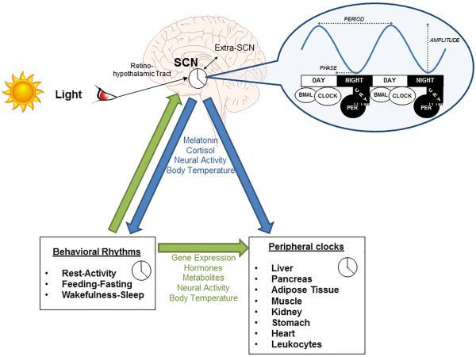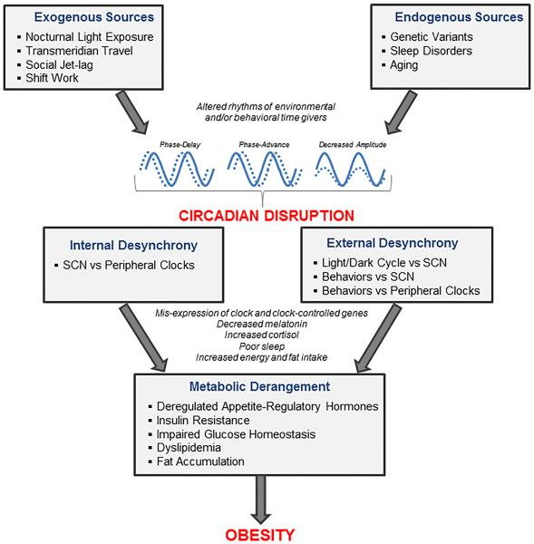
To summarize these findings, there is now a whole body of work demonstrating that melatonin type 2 receptors mutations MTNR1B in various alleles (MTNR1B rs10830963 and rs10830962 and rs1387153) are strongly associated or even predictive (causing?) both metabolic disorders including diabetes and obesity (see also this systematic review and this review), as well as circadian rhythm disorders including DSPD and non-24.
Since the metabolic syndromes such as diabetes and obesity are often associated with circadian dysregulations, with current evidence further suggesting that circadian dysregulations can cause metabolic syndromes such as diabetes and obesity, researchers now calls to rename them both as circadian syndromes given these strong links between metabolic syndromes and circadian rhythm disorders. Metabolic syndromes are defined by the development of a resistance to insulin (ie, metabolic syndrome is equivalent with the insulin-resistant phenotype), which manifests as carbohydrate/glucose intolerance. Metabolic syndromes includes various diseases such as diabetes, obesity, non-alcoholic fatty liver disease (NAFLD) and more recently Alzheimer. Indeed, there is accumulating evidences that brain insulin resistance (as opposed to a body insulin intolerance for diabetes) is central to Alzheimer disease, to the point some call it a type-3 diabetes, it also often co-occurs with other metabolic syndromes and it can be primarily treated by diet and lifestyle changes (see also here), just like other metabolic syndromes. Circadian dysregulation is emerging as a potentially major factor of insulin resistance development, and it's suggested that the interaction between insulin and melatonin may be a previously underestimated major factor causing metabolic disorders. Even the liver may be affected and potentially improved by circadian realignment therapies, since a 2019 review about NAFLD states that "NAFLD and NASH are increasingly prevalent and may be largely mitigated with effective lifestyle modification and, potentially, circadian rhythm stabilization."
What can be done in practice? It is advised to plan meals at times when melatonin levels are low (see also here and here), as the timing of food intake predicts weight loss or weight gain (see also this systematic review) independently from other factors. This is of crucial importance when a sleep disorder is present, as both sleep deprivation and circadian misalignment impair metabolic control and body weight regulation. This means no meal past melatonin pills intake, during the biological night and not too early in the biological morning (eg, delay breakfast). The absolute time does not matter, what matters is that you eat outside of your biological night (eg, if you currently ideally sleep during the day, you can safely eat at night). A 2017 systematic review on obesity prevention concluded that "meal timing appears as a new potential target in weight control strategies" that could even counteract genetic predispositions to obesity according to another review. Indeed, there is some evidence suggesting that individuals who sleep sufficiently long and sleeping (and hence eating) in phase with their circadian rhythm may be better protected against weight gain, and even experience weight and fat loss. For this reason, some forms of meal timing scheduling such as intermittent fasting are now recommended as an option by the American Heart Association. But contrary to the currently practiced forms of intermittent fasting, it is crucial to schedule meals relative to the individual's circadian rhythm and the melatonin levels variations, as a study on mice observed that timed feeding did not have any beneficial effect unless timed in phase with the circadian rhythm.
Although we mostly discuss circadian misalignment above, sleep deprivation has even worse metabolic effects. Shorter sleep has been linked with metabolic syndromes development (diabetes and obesity) as acknowledged by the American Heart Association 2016 guidelines. Short sleepers who extend their sleep duration may lose weight and see a reduction in risks of diabetes. Voluntary bedtime restriction to fit in the modern 24h society leads to chronic sleep loss, which dysregulates the neuroendocrine regulation of appetite and hunger, potentially via the suprachiasmatic nucleus's leptin and ghrelin receptors, which may lead to weight gain. Those predisposed to metabolic syndromes have a majorly higher risk of developing obesity and cardiovascular diseases when sleep deprived, including children and teenagers. Sleep deprivation can majorly curb the benefits of diet or lifestyle changes, since humans under a calorie restriction diet maintained 55% more fat when sleep deprived compared to those who were not.
Bigger meals have a stronger resetting effect
Studies on rodent observed that timed feeding (ie, feeding at a predefined time) could shift the circadian rhythm. Indeed, by modifying the time of feeding, the animals started to sleep and wake up at a different time to adjust with the time they would get fed. Furthermore, bigger meals had a bigger circadian shifting effect than smaller meals. Timed feeding could even allow for entrainment of mice under constant light (ie, no light zeitgeber).
A study on mice clarified the mechanism, by finding that timed feeding of dense food (ie, a big timed meal) can change the circadian rhythm by modulating the dopamine signaling in the suprachiasmatic nucleus (SCN), the same region regulating melatonin production. This resulted in overconsumption of food. The mice without the D1 dopamine receptor (Drd1-null) were resistant to diet-induced obesity, diabetes and circadian disruption due to energy-dense diets.
Inversely, sleep deprivation also increases (unhealthy) dense food cravings, and the digestive system is majorly dysregulated by sleep deprivation.
However, big meals, particularly if rich in carbohydrates, can cause postprandial sleepiness (also called reactive hypoglycemia), and digestion also produces melatonin (see also here). Although the siesta timing is independent from the feeding timing, its amplitude may be affected by diet composition and quantity since the digestive lower tract produces melatonin during digestion. Hence, a balance in terms of quantity and timing are critical parameters for effects of big meals on the circadian rhythm.
Diet composition and ketogenic diet
Reducing the quantity of consumed carbohydrates can be highly beneficial, as each 1% reduction improves the metabolism and reduces risks of obesity and metabolic disorders and sleep issues for carriers of the MTNR1B-rs1387153-T allele according to a meta-analysis. It's also an advised treatment to deal with postprandial sleepiness and particularly reactive hypoglycemia (see below). This shows that there is a dose-dependent effect of carbohydrates intake on the metabolic dysregulation: any reduction of carbs improves health.
The importance of the diet composition, along with meal timing, for the treatment of circadian rhythm disorders was likely pioneered by the Argonne Anti-Jet-Lag diet and publicized in the 1980s, with use by the military personnel. A review suggests that specific macronutrients may have specific effects on the circadian rhythm (TODO: read and extend + read this). Lipids (triglycerides) modulate up to 30% of the temperature profile's amplitude and stability, and since body temperature is strongly tied with the circadian rhythm, lipids can likely significantly impact the circadian rhythm.
There exists a type of diet called ketogenic diet, where most intake is from lipids, some protein, and little carbohydrates. This diet was initially conceived and used (up to this day) for the treatment of treatment-resistant epilepsy. Given the findings described aboved, it makes sense to investigate whether the ketogenic diet may have an impact on the circadian rhythm. And indeed, some studies have done just that.
Only one study has studied the ketogenic diet effects on humans sleep so far, more precisely with epileptic children. It was found that the strict ketogenic diet shortened sleep but without reducing sleep quality (only stage 2 is decreased), decreased daytime sleep (naps/drowsiness), increased attention and increased REM sleep. In other words, the ketogenic diet decreased the total sleep time but actually improved sleep quality.
How does that work and what does it mean for the circadian rhythm? For the moment, only rodents studies are available on this aspect, but they are quite enlightening. A study on mice found that the ketogenic diet produced a phase advance and shortened the circadian rhythm period (tau), which can explain the finding with the epileptic children of a reduced sleep duration without loss of sleep quality. Another rodent study (summary here) goes further by showing a differential effect of the ketogenic diet on the liver and the intestines: the liver clock genes are inhibited (ie, the liver clock is frozen), whereas the intestines clock genes are overexpressed (ie, boosted). In other words, the ketogenic diet makes the body clock more reliant on food intake, and hence magnifies food intake effect on the circadian rhythm, hence it may facilitate entrainment by meal timing by reducing the liver's contribution to the whole-body circadian rhythm. We may hypothesize that the insulin and melatonin interaction that may happen primarily in the liver can be at the root of this observation (the liver is known to metabolize both insulin and melatonin). Interestingly, the circadian clock also regulates liver functions.
To summarize, the ketogenic diet both reduces the circadian rhythm period and hence the sleep duration without loss of sleep quality, and nudge the circadian rhythm to be more easily reset by the timing of food intake. Hence, the ketogenic diet may facilitate entrainment.
Is the ketogenic diet healthy? In 2018, both the National Lipid Association, the American Diabetes Association (see also here) jointly with the European Association for the Study of Diabetes published statements which recommend the low-carb diets, including high-fat (ketogenic) diet, as an option for diabetic or obese individuals that can reduce the need for diabetes medication, and they listed the factors for a healthy low-carb diet, such as avoidance of saturated fats, increased protein ratio to reduce muscle loss and increased fruits and vegetables serving (see also here and here). Indeed, with such adaptations, the ketogenic diet was found to reduce risks compared to a typical western diet (see also here). Other experts even claim that saturated fats are not the primary macronutrient to avoid for diabetic individuals, whereas carbohydrates are a major factor, and hence that metabolic syndrome "is most effectively managed by a low carbohydrate diet" such as the ketogenic diet. Interestingly, the NLA notes that "the amount of carbohydrate intake required for optimal health in humans is unknown". The ketogenic diet is also recommended by experts to treat familial hypercholesterolaemia. Even the previous consensus that saturated fat should be avoided is now questioned. Coincidentally, this pivoting on low-carb diets coincides with the appointment in 2018 of a new CEO for the American Diabetes Association who has diabetes, which is unexplicably a first in the 80-years history of the institution, and who furthermore declared in 2020 being using a low-carb diet to manage her own diabetes without drug.
The main drawback to following a strict ketogenic diet is that it is highly inconvenient to follow, especially when trying to eat a healthy ketogenic diet (ie, with a reduced amount of saturated fat). Hence, a healthy ketogenic diet requires a lot of planification beforehand and particularly before social events to ensure to take the food needed as it is unlikely that a meal obtained outside will be adequate (ie, no to little carbohydrates). This is colloquially termed as the "keto struggle".
If you are a fast metabolizer and need to eat not too long before sleeping, then try to eat a smaller meal and reduce its carbohydrates content, particularly slow carbs/starchy food such as pasta, rice and floor, as well as sugars and sweet food and drinks. See this ADA guide for a classification of carbohydrates.
To monitor if the ketogenic diet is done properly, use ketostix, an urinary measument bands that will color depending on the amount of ketone bodies in urine. A strict ketogenic diet should consistently produce a color between the 2 highest grades (0.8 g/L to 1.6 g/L). A reusable alternative may be the electronic breath ketone meters, but the author did not test this kind of product yet.
Interestingly, some authors draw an analogy between the importance of a healthy food diet and a healthy spectral (light) diet, suggesting that light composition (eg, quantity of blue light, light intensity) matters just as much as food diet composition.
Postprandial sleepiness may be a sign of (pre-)diabetes
Feeling sleepy after lunch and irresistible naps are likely a common occurrence for people with circadian rhythm disorders, because of the natural postprandial response and the sleep deprivation on top, which can be very inconvenient when trying to follow a new sleep schedule. Indeed, eating produces melatonin and serotonin, both having an effect on the circadian clock, although the circadian rhythm seems to remain mostly independent from feeding time. Indeed, the digestive tract does produce melatonin after lunch as a "postprandial response", strongly contributing to the magnitude of the postprandial sleepiness (but not its timing). Thanks to the PRC, for normal sleepers who eat during the day their meals, eating causes slight drowsiness only but does not impact their circadian rhythm because melatonin then gets produced at the "dead zone" of the melatonin PRC, where it has little to no effect, but for non24 and their difficulty in knowing their circadian rhythm, a mistimed meal can offset their circadian rhythm one way or the other, and even just the availability of food can shift the circadian rhythm. Postprandial sleepiness is hence normal, but its frequency and severity can be increased by meals high in carbohydrates, which is then called a reactive hypoglycemia (also called postprandial hypoglycemia or "sugar crash"), which shows a greater contribution of carbohydrates as a cause of postprandial sleepiness. In case of experienced consistently a postprandial sleepiness frequently after lunches, the treatments for reactive hypoglycemia can help whether or not it's reactive hypoglycemia or a simple postprandial sleepiness, which includes the reduction of carbohydrates. For this reason, some ketogenic dieters report a reduction of postprandial sleepiness, and the author of the present document also observed a clear reduction in post-lunch sleepiness with the strict ketogenic diet, which included the inability to nap (ie, to fall asleep) after lunch even when trying to forcefully nap.
Reactive hypoglycemia (sleepiness under 4h after a big carbohydrates meal) and the dumping syndrome (digestive issues under the same timeframe) can both be signs of (pre-)diabetes, which shows another link between sleep and diabetes. If these signs are experienced, it can be a good idea to get screened for (pre-)diabetes, as this can allow to potentially optimize treatments not only for diabetes and the digestive issues but also for the circadian rhythm disorders such as non-24.
In the author's experience, the ketogenic diet also eliminates postprandial sleepiness. If postprandial sleepiness disappears under a ketogenic diet, this can reinforce the diagnosis of postprandial sleepiness caused by glucose intolerance/hypersensitivity.
Circadian rhythm and gastric issues
Circadian dysregulation is associated with alterations in colonic motility and disruption of clock gene expressions in the intestinal tract's cells. Circadian misalignment is associated with digestive pathologies such as constipation and irritable bowel syndrome. There is strong evidence that the gastrointestinal system (guts) is governed by a circadian rhythm with both peripheral and central (brain) inputs.
Since melatonin modulates gastrointestinal motility by being an antagonist of serotonin, and also serving as a major antioxydant, melatonin supplementation is being researched as a potential treatment or adjuvant for gastric ulcers, colitis, irritable bowel syndrome, Crohn's disease, necrotizing enterocolitis and children’s colic, with "low dose melatonin treatment accelerating intestinal transit time whereas high doses may decrease gut motility".
A case study of sighted individuals with non-24 include a case where entrainment was associated with a proportional improvement in abdominal discomfort, with a more stable and earlier entrainment associated with further improvements.
TODO to process
Given the links between the suprachiasmatic nucleus (which has leptin and ghrelin receptions) with the digestive system, it may be possible that light therapy can directly improve "abdominal discomfort" and digestive issues as observed in one study and by the author of the present document.
Circadian entrainment may hence reduce metabolic issues such as binge eating for people with non-24, as a few discord members and the author of this document experienced.
- REF TOADD: ultraviolet A light may play a role in circadian rhythm resetting, so it's not only light density but also radiations: Negelspach, D. C., Kaladchibachi, S., & Fernandez, F. (2018). The circadian activity rhythm is reset by nanowatt pulses of ultraviolet light. Proceedings of the Royal Society B: Biological Sciences, 285(1884), 20181288.
- Skin has its own rhythm: https://www.sciencedaily.com/releases/2019/10/191016133015.htm
- BESTREFS: Insulin resistance and circadian clocks: for the moment, there is evidence that circadian rhythm misalignment can influence/worsen metabolic syndrome, but not the other way around (limited evidence in 2nd paper). But if ketogenic diet works, it's some evidence of metabolic syndrome -> circadian rhythm misalignment! Best would be to confirm prediabetes in non24 subjects for whom ketogenic diet helps.
- Circadian clocks and insulin resistance, Nature reviews, https://www.nature.com/articles/s41574-018-0122-1
- The Role of Circadian Rhythms in the Hypertension of Diabetes Mellitus and the Metabolic Syndrome https://link.springer.com/article/10.1007/s11906-018-0843-5 - that's evidence in humans
- The endogenous circadian clock programs animals to eat at certain times of the 24-hour day: What if we ignore the clock? https://www.sciencedirect.com/science/article/abs/pii/S0031938418301938
- Pharmacotherapies for sleep disturbances in dementia. Cochrane systematic review, 2016. "From the studies we identified for this review, we found no evidence that melatonin (up to 10mg) helped sleep problems in patients with moderate to severe dementia due to Alzheimer Disease."
- [29]: «Advanced circadian timing was associated with a number of subjective memory complaints and symptoms. By contrast, sleep fragmentation was linked to lowered perceptions of cognitive decline, and less concern about memory failures. As circadian disruption is apparent in both MCI and Alzheimer's disease, and plays a key role in cognitive function, our findings further support a circadian intervention as a potential therapeutic tool for cognitive decline.» → it might not be simply age that is responsible for cognitive decline, but more sleep deprivation, fragmentation etc due to misregulated circadian rhythm. https://www.ncbi.nlm.nih.gov/pubmed/30320584
- https://www.washingtonpost.com/national/health-science/why-crossing-time-zones-makes-you-feel-bad-and-what-you-can-do-about-it/2018/07/20/39417254-6a88-11e8-9e38-24e693b38637_story.html
- Interesting: digestive issues and sleep and autism: Are Gastrointestinal and Sleep Problems Associated With Behavioral Symptoms of Autism Spectrum Disorder? 2018 https://pubmed.ncbi.nlm.nih.gov/29091821/
- "GI and sleep problems were prevalent in Chinese ASD children. Moreover, ASD children with GI symptoms reported more severe ASD core symptoms than others. Autistic children's GI symptoms were associated with maternal sleep problems during pregnancy, child's 0-6 month food sources and picky eating. ASD children with sleep disturbances had lower performance in daily living skills, social cognition, social communication and intellectual development than ASD children without sleep disturbances."
- BEST TOCHECK: too much carbs can increase depression and mood swings? https://www.cheatsheet.com/health-fitness/this-terrifying-side-effect-is-a-sign-youre-eating-too-many-carbs.html/
- bloating possible with both carbs: https://www.livestrong.com/article/444370-why-do-i-get-bloated-when-i-eat-carbs/ and keto: https://ketogenicdiet.reviews/keto-bloating/
- Today, 75% of the world’s food originates from only twelve plants and five animals. https://www.sciencedirect.com/science/article/pii/S2212877816000387 and https://joinzoe.com/2019/07/23/improve-microbiome-diversity-gut-health
- Carbs craving during coronavirus crisis: https://www.inverse.com/mind-body/carb-loading-in-quarantine-why-do-we-crave-bread-pasta-in-a-crisis
- Intriguingly, genetics seems to play only a minor role – we’ve found that identical twins only share 37% of their gut bacteria,only slightly more than two unrelated people. https://joinzoe.com/2019/07/23/improve-microbiome-diversity-gut-health
- BEST: 1000 healthy people given the same meal, had large variations in biometrics: https://joinzoe.com/2019/06/21/we-reveal-the-first-results-from-the-largest-nutritional-study-of-its-kind-in-the-world
- BEST: dietary diversity is important for healthy microbiome (review 2016): https://www.sciencedirect.com/science/article/pii/S221287781600038[[https://www.sciencedirect.com/science/article/pii/S2212877816000387|7]]
review nature 2012: https://www.ncbi.nlm.nih.gov/pmc/articles/PMC3577372/
Conclusion about food, metabolic disorders and circadian rhythm
All the factors laid above interact together, and likely share at least some of the same causes. For example, we saw that food intake when melatonin is high increases glucose insulin resistance, and in parallel that each 1% reduction in carbohydrate intake reduces diabetic risk. Obviously, these two phenomena combine together, and hence both are targets of improvements: by both reducing the carbohydrates intake and avoiding food intake when melatonin is high (particularly carbohydrates!) can significantly reduce the risks, particularly for the carriers of the MTNR1B risk alleles.
Furthermore, a vicious cycle can be created, since the diet composition and timing affects the gut microbiota, which in turns also affects the body/peripherial circadian clocks. The gut microbiota is so important that sequencing the microbiota's organisms DNAs allows to better predict if someone is more likely to die within the next 15 years than the individual's own DNA.
Hence the necessity of timing meals accordingly to the circadian rhythm and carefully design the composition of one's diet, as it appears food is a "powerful environmental cue with the potential to destroy or restore the synchrony of circadian rhythms in metabolism".
Given the strong links between non-24 and diabetes, it is the author's conviction that individuals with non-24 should be systematically screened for (pre-)diabetes, as this can lead to a significant improvement in quality of life and major reduction of long-term metabolic (including cardiovascular) risks by treating both diabetes and non-24. It is also conceivable that a family history of metabolic syndromes (obesity, diabetes, potentially alzheimer disease) may predispose some individuals to develop a circadian rhythm disorder such as non-24.
For future studies, insulin and glucose profiles should be systematically monitored in individuals with circadian rhythm disorders, as this would likely lead to interesting discoveries in this blind spot where data is lacking despite the clear interactions between insulin and the circadian rhythm, and we may draw a parallel with Alzheimer where the central role of insulin is still poorly understood due to a lack of data because of the oversight in insulin monitoring in most studies. It is however not surprising, as it was thought before that the brain was insensitive to insulin, just like it was incorrectly assumed that the circadian rhythm and sleep was solely governed by the brain.
It further makes sense in light of these links that insulin regulating treatments for diabetes and metabolic syndromes may help individuals with a circadian rhythm disorders carrying the MTNR1B genetic mutations. Insulin resistance may manifest as hunger craves, especially of dense (carbohydrate) foods, late into the biological evening or night, which should not happen since the liver and adipose tissues are there to ensure that humans can fast for some period of time, at least during 1/3rd of the day during sleep, and up to several days in case of food unavailability. In these cases, intermittent fasting and the ketogenic diet are effective methods to reduce insulin resistance and improve glucose profiles and reduce hunger, as well as manage weight. The author of the current document tried both primary for entrainment (which did not work) and observed incidentally these positive results on the metabolism. Pharmacological treatments such as Saxenda may also help as some users reported. Contrary to therapies for circadian rhythm disorders, these interventions do not necessarily need to be continued lifelong, the current recommendations advise to use them (under medical supervision) for up to 6 months to see a significant reduction in insulin resistance and hence in hunger cravings, before transitionning to a more diverse healthy diet such as the scientifically designed DASH diet. Note however that in author's experience, although these interventions may ease entrainment, they are not sufficient to maintain it and hence need to be combined with at least light therapy.
Other sleep-wake issues and tips
Why individuals with non-24 cannot stay reliably entrained?
Even with an effective entrainment therapy, no individual with non-24 can forever stay reliably entrained to a 24h cycle. Why? Because the circadian rhythm period/length changes dynamically all the time.
Indeed, a 2013 landmark study has evidenced two new interlinked phenomena in blind non-24 participants:
- relative coordination, which is the effect of uncontrolled exposure to zeitgebers such as sunlight, which partially and imperfectly synchronize the participants' circadian rhythms, hence the term of "relative coordination".
- transient (dis-)entrainment, which is the observation of temporary slowed down freerunning, sometimes even temporary entrainment (stable sleep and wake up times), followed by periods of temporarily accelerated freerunning. Transient (dis-)entrainment is likely caused by both intrinsic factors (ie, due to the non-24 disorder) and extrinsic such as the relative coordination factor (ie, uncontrolled exposure to zeitgebers).
A common example experienced by individuals with non-24 is to see their circadian rhythm delay faster when they are awake at night ("night-walking") than when they are awake during the day ("day-walking"). The figure below shows that that the daily phase delay of freerunning be more than 2x faster during night-walking ("Fast Zone" in C) than the average at all time and more than 10x faster compared to than during day-walking (the "Slow Zone")!
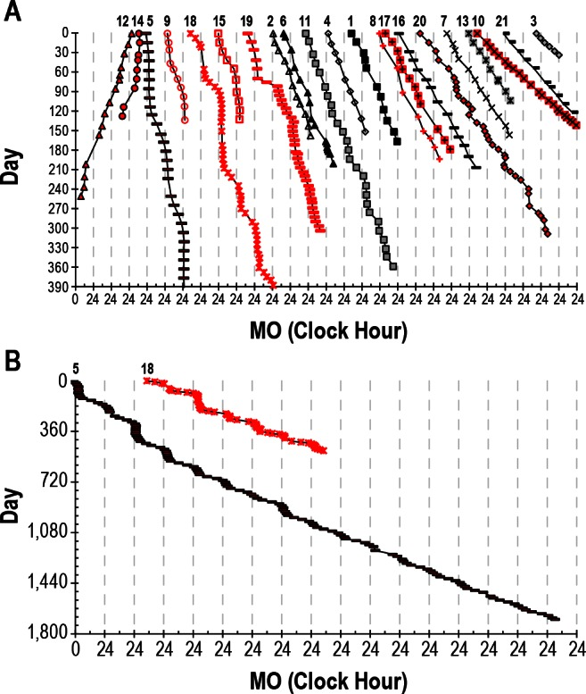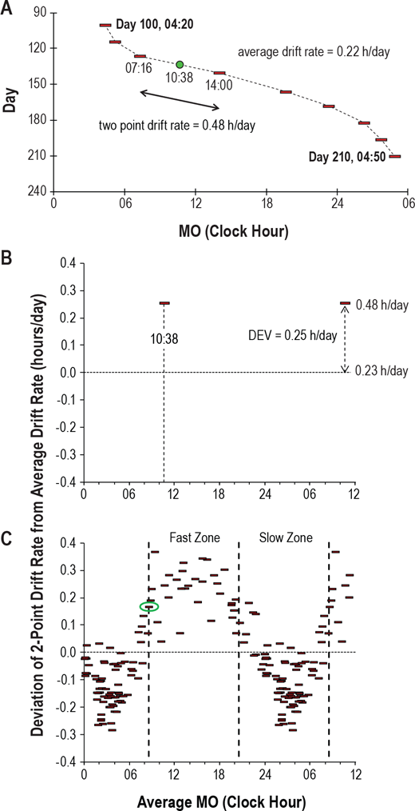
Daily phase delay relative to the DLMO (melatonin onset MO). Figures reproduced from Figure 1 and 2 of this study.
Spontaneous transient entrainment, which means being entrained for no reason but only temporarily, can last not just a few days but up to more than 3 months!
> we found three subjects (5, 14, and 18) who demonstrated such “transient entrainment” for a total of 98, 42, and 71 days, respectively, with an average “entrained” linear regression drift rate of 0.00 ± 0.03 h.
Likewise, a non-24 participant who was stably entrained since almost 1 year spontaneously disentrained, despite no obvious changes in environmental nor biological factors!
> Furthermore, later study of subject 15 demonstrated almost 1 year (345 days) of entrainment with a linear regression drift rate of 0.00 ± 0.01 h per day before she lost entrainment with a linear regression drift rate of 0.33 ± 0.06 h per day (Figure 5). There were no known changes in medications, activity, eye status, or hormonal status that precipitated either the spontaneous entrainment or the abrupt resumption of a nonentrained pattern, and the subject drifted at a rate nearly identical to her baseline drift rate of 1.5 years prior."
This highlights that transient (dis-)entrainment is a natural part of the non-24 disorder, so that the patients should not feel ashamed (nor be ashamed by healthcare practicians) when they restart to freerun after being entrained: this actually is entirely normal and is to be expected even with an effective entrainment therapy. Indeed, this shows that cyclical loss of entrainment for individuals with non-24 is not necessarily due to patient uncompliance nor lack of sleep hygiene (as is commonly assumed in the clinical practice), but that it's a natural part of the disorder.
This is why it is crucial to allow and educate the patient to modulate their therapy's dosage and timing, so that they can react and adapt their therapy according to the natural cyclical variations in their circadian period, such as by doing longer light therapy sessions and increasing melatonin dosage or earlier melatonin pill intake. Indeed, it is not sufficient for an entrainment therapy to be effective: an effective entrainment therapy needs to be flexible and easy enough to adapt by the patient to readapt according to the intrinsic and extrinsic changes in circadian rhythm period. A strict therapy can never be effective in the long-term for non-24 because of this uncontrolled dynamism of the circadian rhythm.
Given the high variability in circadian period and entrainment status, the study's authors recommend that diagnosis (and therapeutic efficacy of new treatments) need to be assessed over at least 3 months of data to reduce the false positive rate due to transient (dis-)entrainment! In other words, relative coordination and transient entrainment explain why there are so many short-lived miracle cures, and it's hence necessary to test therapies over a longer timeframe to ensure it's neither a false positive (transient entrainment) nor false negative (relative coordination leading to transient disentrainment hiding therapeutically achieved entrainment):
> Perhaps the most important implication of relative coordination and transient entrainment is in the diagnosis of this disorder. Individuals who demonstrate transient entrainment might easily be misdiagnosed as entrained if circadian phase is not assessed for a sufficient period of time. Inspection of Figure 1 indicates that it may be necessary to assess observed circadian phase for more than 3 months in some cases before a conclusive diagnosis can be made.
The authors further state that transient entrainment needs to be accounted for in analyses, although given the difficulty of identifying the factors of relative coordination, it's unlikely that bias can be completely removed:
> It could also be argued that even an overall average drift rate in circadian phase cannot be calculated in the presence of relative coordination or that, at the very least, periods of transient entrainment should be excluded from the analysis. However, we do not think it is possible to edit the data in such a way as to remove the influence of the time cues that were causing the relative coordination because we were not measuring either the strength or timing of those cues and indeed have not even positively identified them.
The authors suggest that transient (dis-)entrainment is likely at least partly caused by environmental time cues (relative coordination):
> There is significant heterogeneity in the physiological presentations of non-24-h disorder in the blind. This variability occurs both between and within N-24s and this likely reflects differences in their exposure or response to environmental time cues. Notably, some individuals demonstrate periods of transient entrainment where the disorder may appear to remit for lengthy periods of time.
Transient (dis-)entrainment reinforces the necessity of the preparatory phase (ie, to wait to be in phase with the day-night cycle first) before starting the entrainment therapy, because this also allows to naturally reduce the daily phase delay, hence the therapy has less to compensate and hence the likelihood of entrainment is improved.
In practice, a clear sign of loss of entrainment due to circadian period lengthening (ie, daily phase delay getting faster) is the appearance of a upward staircase-like pattern in wake up times (ie, waking up later and later), which suggest the need for longer light therapy. Inversely, a downward staircase-like pattern in wake up times (ie, waking up earlier and earlier) is suggestive of circadian period shortening (ie, daily phase delay getting slower) and requires a shorter duration of light therapy and maybe lower melatonin dosage or later timed pill intake.
Transient entrainment may also explain DSPD misdiagnosis instead of non24: if the individual gets diagnosed during the "slow part" of the freerunning cycle, they will likely be diagnosed as DSPD instead of non-24 if the assessment is done over a too short timeframe (eg, a week). To differenciate real DSPD from misdiagnosed non24, we could chart the sleep over months to see if there are cyclical chaotic sleep periods lasting a few days to a few weeks, if correct then these periods are indicative of misdiagnosed non24.
Transient (dis-)entrainment, as in intrinsic issue to the non-24 disorder, compounds with extrinsic difficulties: very few treatments are currently available, no self monitoring tool are available for circadian rhythm, poor understanding of how sleep and the circadian rhythm works and hence the optimal conditions for the treatments (how long? how much? when?). This all makes this disorder very non trivial to treat.
When things go wrong
If the therapy works and your circadian rhythm gets entrained, in practice slip ups or external disturbances can still derail your therapy. What should you do then? This section covers a standard protocol to follow that was found by the author to be the most effective to get back on track quickly, and then some of the common scenarios and how to react optimally will be discussed.
Standard reentrainment protocol: this is the protocol that has shown the most effectiveness to reentrain the author's circadian rhythm in case of spontaneous or externally caused disentrainment. The reentrainment usually completes under a week and has been used to phase advance up to -6h.
- The top priority is to avoid and recover from further sleep deprivation and recover any sleep whenever you can, especially by long napping whenever you can (ie, for 2+h) and as early in the day as possible (ie, so as to leave some time for sleep pressure to build up before the next night), try to go to sleep whenever you feel tired the next night, etc. The only solution to the lack of sleep is to sleep, there is no replacement.
- But don't stay in bed all day either if you can't sleep! Wake up, do some stuff and allow yourself to come back to bed for a nap whenever you feel like it. This is necessary because sleep deprivation reduces the effect of the zeitgebers and hence of the entrainment therapies, as well as make sleep more chaotic by disrupting the sleep homeostasis.
- Light therapy and caffeine and others psychostimulants can boost your energy levels, but it can not replace sleep, so if you are sleep deprived, you will still feel sleepy, no matter what. Hence, it can happen that you feel the urge to take a nap during your light therapy session if you slept a short/half night prior, that's normal and if you can afford a nap then do it, this will not shift your circadian rhythm (just reduce your sleep pressure but there are ways around and napping allows to reduce dopamine levels which can prevent sleeping, so all in all napping does not impair the ability to sleep the next biological night, and it reduces sleep deprivation in any case so that's a win-win).
- Adapt the timing for melatonin to a later time relatively to your new (later) wake up time. The timing will be readjusted to an earlier time when reentrainment will be completed.
- Use light therapy for a longer time than usual (eg, if 3h were needed for entrainment, use 4h during reentrainment). This will allow to force the effect of light therapy to kick in faster, as well as allow for a greater phase advance that hopefully will exceed the endogenous phase delay (in other words: this should allow to wake up earlier and earlier). Use at wake up. If the sleep is biphasic (ie, sleep a half night then wake up for several hours before going to sleep/long nap again), then use light therapy after the last sleep session. Do not forget to use dark therapy too as usual.
- Try not to eat too late, especially not when you would like to be asleep, as otherwise food will reprogram your peripheral clocks (ie, your body clocks) that it should expect food at night and hence should be awake. If you really must eat, prefer to eat a ketogenic meal (ie, mostly lipids, moderate to low proteins, very low to no carbs).
For other issues, here are common scenarios and solutions:
- If for some reason you had to discontinue using light therapy for some time, let's say 30 min, can you resume after or should you stop? You can continue, this should have little impact on the light therapy. Indeed, pulsed and intermittent light therapy was shown to be as effective (if not more - see also here) than continuous light therapy, although less efficient at inhibiting melatonin. Hence, if you stop for some minutes and resume light therapy after, you can expect to still get the same phase advance, however the effect on vigilance may be reduced, particularly if you experience drowsiness (brain fog) due to melatonin leftovers (aka sleep inertia).
- If you wake up 1 or 2h earlier, you can do the light therapy. If wake up earlier than that, wait for the usual time to start the light therapy, don't do at wake-up. If the night was too short and you need to sleep again later in the morning (ie, weird insomnia aka biphasic sleep, see related section), then don't use light therapy in the middle, wait for your last wake up to start the light therapy.
- If you wake up later than usual, do the light therapy at wake up and as long as usual, or even longer to compensate. This is to ensure a long enough light exposure (photic history) to prevent biphasic sleep, as waking later reduces the amount of natural light exposure. Since you woke up later, your day will be shorter, so your sleep pressure (homeostatic process S) may not have enough time to build up sufficiently to make you feel sleepy enough to sleep at your usual time, but by maintaining light therapy duration and melatonin intake timing, your wake up time should remain stable and your sleep schedule will stabilize over the next days back to its previous state.
- What happens when you sleep outside of your biological night (eg too late, naps etc) for several days? If was entrained for at least 10 days, the photic history should keep your wake up time constant for several days. After, or without previous entrainment, your circadian rhythm will revert to its natural freerunning delay. Indeed, when the range of entrainment is exceeded, the circadian rhythm reverts back to its natural freerunning period, and sleeping outside of one's biological night (ie, circadian misalignment) is an instance of exceeding this range.
- What if you take melatonin later than you should have? In the author's experiments, it seems this may have a big impact on when you fall asleep, but not the wake up time. You should stay entrained even if you took melatonin later and slept later one or 2 days, but try to take melatonin at your entrained time the next days to go back on track.
- What if you slept too late for some reason but still woke up as usual, and hence are sleep deprived? If you feel like you can go back to sleep (and can do so), then it's actually better to go back to sleep if you feel it's needed. It's crucially important to reduce sleep deprivation to stay entrained (by avoiding dopamine buildup causing the "wake maintenance zones", see below), so sleep at long as you need and as early in the day as possible. This will actually help you fall asleep at the usual time this evening, if you take melatonin at the usual time. Do NOT move the melatonin intake time, i found that keeping it constant works best (when you are entrained of course).
- What if you did not sleep enough or at the wrong time for a few days? Then it will take a few days of sleep a full night and under your biological time (circadian alignment) to clear up the residual sleep deprivation and brain fog, these won't go away the first day you sleep sufficiently, there is some inertia due to the accumulation of sleep deprivation/debt.
- How many days of light therapy or melatonin can be missed? Although it takes about 10 days for freerunning to fully take effect again, missing on light therapy will already wear off entrainment stability and reduce vigilance under just a few days of missing light therapy. As a rule, 1 day is generally ok, 2 days is risky, more is asking for troubles, similarly to birth control pills (both playing on hormonal signaling).
How to wake up earlier and earlier
As a prerequisite, it's necessary to be entrained to avoid freerunning. Once your sleep, and primarily your wake up time, is stabilized and hence you are entrained, the following can be applied to adjust the sleep and wake times to an earlier time (instead of having to freerun all the way around the clock).
First, extend the duration of the light therapy session, by adding 1 or 2h compared to what you usually do for entrainment. For example, the author needs about 3-4h of light therapy every day to stay entrained, so that to wake up earlier, the author uses 4-5.5h of light therapy. If you do not use light therapy for your entrainment, then just use 1-2h of light therapy to wake up earlier (but this may take more than a couple of days due to the time necessary for the photic history to settle in, you may have to wait a week or more for the first effects).
Secondly, wait a few days, about 2-3 days. During this time, try to pay attention to when you feel sleepiness and when you wake up. After 2-3 days, your wake up time should suddenly move 1h30 earlier than usual, which is a sign the extended light therapy session was effective to phase advance more the circadian rhythm.
When this happens, you can take melatonin 1h30 earlier as well, to match your new wake up time. The author found that advancing melatonin administration in synchronization (or consecutively) with light therapy was necessary to maintain the new earlier wake up time (although the wake up time foremost happens because of extended light therapy exposure).
Finally, keep in mind that changes in your wake up and fall asleep times happen in ultradian cycles increment of about 1h30-2h, what is called "sleep gates". Hence, it is useless to try to progressively sleep 15min earlier everyday, because then you would try to sleep in-between 2 sleep gates that are 1h30-2h apart, which is not only ineffective but may develop insomnia as then you'll stay longer awake in bed until the next sleep gate comes. Thus, prefer to first use very long light therapy to induce a change in your circadian rhythm first, and then leverage this by paying attention to the sleep gates and try to sleep at the previous sleep gate before the one you usually sleep in. For example, if you usually sleep at 5am, after a few days of longer light therapy you should also feel sleepy at 3h30, and if so, just try to sleep, if it works you'll likely be able to stay entrained at this new time.
Also, pay attention to the 2 major sleep gate, the siesta one in the biological afternoon, about 12h after your usual fall asleep time of your biological night. For example if you usually sleep at 5am, you'll feel a dip in your energy at around 5pm, the time of the siesta. This is very informative as this indicates when your next biological night is likely to happen. For example, if you feel the energy dip at 3.30pm, while usually you sleep at 5am, then this is a good indication that tonight you'll likely be able to sleep at 3.30am instead of 5am (ie, sleeping at the previous sleep gate, since the siesta happened earlier than usually, a clue that your circadian rhythm has indeed advanced).
Once this process worked, you can continue it and repeat until you wake up as early as you wish.
To nap or not to nap?
If you need to restrict your sleep and cannot sleep during your biological night, then the most healthy strategy is to do long naps (shorter sleep than the biological night) but regularly (avoid all-nighters), as nothing can replace sleep.
If you cannot afford to either follow an entrainment therapy, nor free-run, in other words if you need to constraint your sleep and suffer from sleep deprivation, the most healthy strategy seems to be to take long naps (ie, at least one ultradian cycle of 1h30-2h) when you need or can, since long naps eliminate detrimental cardiovascular and neurologic health issues due to prior sleep deprivation, whereas short naps or no naps do not. Hence, a shorter (nap) sleep everyday is better than a longer sleep after an all-nighter. Furthermore, sleep deprivation reduces light therapy effectiveness by reducing the magnitude of the light PRC, so napping can be beneficial contrary to commonly prescribed therapies requiring behavioral constrants. Given these evidences, it seems clear that an effective therapy for circadian rhythm disorders should not require further sleep deprivation from these individuals who are already chronically sleep deprived, so naps should not be contra-indicated.
Some studies argued that long naps may cause sleep inertia (aka brainfog, the difficulty to wake up and with lower cognitive performance for 10 min to a hour after) and hence short naps should be preferred, but subsequent studies found that it's rather the prior sleep deprivation that exaggerates sleep inertia, not the nap duration. Indeed, other studies have shown that short naps can also produce sleep inertia, and furthermore sleep inertia is more frequent when the individual is awakened during a deep sleep stage (stage 3 or slow wave sleep stage SWS) (see a summary here), confirmed the findings of another study that night-time awakenings by disturbances caused much more sleep inertia than sleep deprivation. This can potentially be reduced by using chronobiological alarm clocks (also called "smart alarm clock") such as Sleep As Android. This study also suggests more precisely that to avoid sleep inertia, the strategy should be to avoid waking up in the middle of deep sleep, which happens usually 25 to 30min after falling asleep, hence either shorter naps (less than 25 minutes) or full naps (one ultradian cycle of 1h30) should be preferred.
Napping is a well known optimal strategy already for shift work (see also here).
There are at least two kinds of naps: the skippable ones and the irresistible naps. If your issue is with feeling the irresistible urge to sleep, in other words the irresistible naps, this is a normal body coping mechanism to recover from chronic sleep deprivation or other homeostatic dysregulations. Hence, the first thing to do is to eliminate chronic sleep deprivation by sleeping adequately and in phase with the circadian rhythm to avoid circadian misalignment. Then, if naps continue to occur, it is possible to use blue light therapy at wake-up to reduce the number of naps. It can also be used after a nap to reduce the sleep inertia.
If the naps frequently happen in the 2 hours after eating, treating reactive hypoglycemia may help, see the section about food above.
What if you have an appointment and can't sleep during your night, should you get a nap or not? Certainly, yes. Whether health-wise or for cognitive performance, keep in mind that some sleep is always better than no sleep (as demonstrated by this study), and that no drug can replace sleep.
If taking naps works well for you (and you have time in your work schedule to do that regularly), then you could even try to do a biphasic sleep (eg, sleeping just after work for some hours, then wake up and sleep a second time late into the night). Biphasic sleep is apriori a healthy sleep scheme, since both monophasic (one long sleep session during the night) and biphasic (two shorter sleep sessions interspesed with awake times) are natural for the human body.
Weird insomnia and temporary phase reversals are biphasic sleep
A phenomenon that is not described formally in the scientific literature but is part of the experience of a lot of individuals with non24 is the random occurrence of "weird insomnia". These insomnia manifest as a premature wake-up, followed by another sleep period a few hours later. Here is what it looks like, on night 8/6 (the one with a big gap in the middle and 2 sleep periods of about equal ~4h duration):
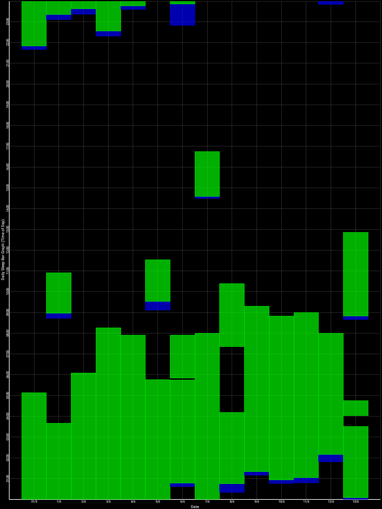
This particular instance happened during my own self-experiment of entrainment, using light therapy (not long), melatonin, dark therapy and food control. All parameters were unchanged with the previous days and all external factors were controlled as much as possible. There was no difference in subjective feelings of tiredness prior to this night. There was no prior sleep deprivation nor oversleeping for a week. And yet, unexplicably, I prematurely woke up too early, and had to sleep 3-4h later to catch up to get a full night of sleep. This seemingly lack of obvious reason for this insomnia is why it is deemed "weird". This description perfectly fits the definition of biphasic sleep.
Naturally, humans do have a biphasic (aka bimodal) sleep, "with one peak at the temperature trough and, contrary to previous reports, a second peak 9-10 h later" as studied on 15 individuals with non-24, which translates to the midafternoon nap and nighttime bedtime for typical sleepers. In other words, this means that humans naturally have two sleep gates: one at the biological night, and one at the biological midafternoon ("siesta"). The midafternoon trough coincides with an elevation of peripheral melatonin produced by the digestive system after the lunch. This secondary sleep gate can be detected using wrist skin temperature and is independent of feeding.
Biphasic sleep may also be a genetically inheritable trait as the siesta was found have a 65% heritability.
Biphasic sleep can be naturally induced by a too short exposure (10h) to light during the awake period, and eliminated by a longer light exposure (16h). Hence, both monophasic (one long sleep session during the night) and biphasic (two shorter sleep sessions interspersed with awake times) are natural sleep schemes for the human body.
Biphasic sleep was historically considered healthy and even recommended by the medical community at the time. Nowadays however, the modern medical community rather advise a single continuous sleep period, as this is more adequate to fit in current societal norms of office hours for work. Whether biphasic sleep is as healthy as a single continuous sleep period remains unknown since there is studies are lacking on that question, but since biphasic sleep can be naturally induced depending on the duration of light exposure, this suggests biphasic sleep is a natural bodily adaptation mechanism and hence likely serving some biological purpose.
Hence, although this remains untested for non24, the "weird insomnia" or biphasic sleep can potentially be treated in two ways:
- by using melatonin pills to consolidate the 2nd half of the night, with likely more efficiency for this purpose with prolonged-release melatonin such as Circadin. This increases the melatonin levels in the bloodstream throughout the night and hence the chances that the person stays asleep.
- by increasing the duration of blue light exposure, eg either by being exposed longer to natural sunlight, or by using very long light therapy using light therapy glasses or lamps for several hours. The exact mechanism is unknown, but it's known that one of the pathways of photic history is by modulating melatonin profiles, with blue light increasing melatonin levels more than other colors, similarly to taking prolonged release melatonin pills. Indeed, blue light therapy has a paradoxical effect: although it inhibits melatonin during light exposition, prior light exposure increases the amount of produced melatonin the following night, what is named photic history. The effect is more pronounced with blue light than amber light. However, blue light exposure needs to be properly timed in phase with the circadian PRC curve, otherwise it can further increase sleep fragmentation if mistimed and hence the propensity of "weird insomnia". Blue light exposure at wake-up should be combined with dark therapy in the biological evening since it was shown that light therapy in the morning is less effective if an individual is exposed to light in the previous evening or night due to photic history.
More anecdotally, during the author's self-experiment, both seemed to help, but very long light exposure combined with melatonin was the most effective compared to 1h light therapy and melatonin or melatonin alone.
Interestingly, biphasic sleep could be a potential lead to demonstrate a link between sighted non24 and light hyper or hyposensitivity.
This kind of insomnia should not be underestimated, as it happens seemingly randomly, is hard to control, and can make the sleep chaotic for several days after despite following properly the therapies. This can be easily blamed on the participant's behavior despite no evidence this is due to behavior, as it happened during the self-experiment despite thorough factors control and high motivation. Instead of targeting the behavior, it would be more advisable to try to increase the light exposure duration and provide prolonged release melatonin.
Biphasic sleep may also explain the regularly experienced phenomenon of a temporary phase reversal, where the individual's sleep schedule seems entrained for some days (usually through the use of alarm clocks), before "flipping up" by 8-12h in one day, then either reverting to the previous sleep schedule the next days or another sleep schedule in-between. This is likely not a phase reversal, but simply the individual sleeping at their biological afternoon trough, in other words taking a long nap, which is a sound strategy for the body to recover sleep if it is unable to sleep during its biological night. Especially for non-24 without an entrainment therapy since the circadian rhythm and hence biological night continues to delay further and further, which makes the biological night totally out of phase with the individual's wished schedule despite the use of alarm clocks, the body then can't have a recovery sleep during the biological night, so then the afternoon nap is promoted.
Hence, biphasic sleep can be hypothesized to be a redundant scheme for the body to get more opportunities for a long recovery sleep: with 2 opportunities spaced throughout the 24h cycle, if the first sleep gate during night is missed, the other sleep gate during the midafternoon will be used. Behaviorally, this can superficially appear as a phase reversal, when in fact this is simply a long afternoon nap, which can potentially be hinted by the observations that the sleep after the phase reversal that happens in the biological afternoon, although long, is not as long (1 ultradian cycle shorter at least) nor of a quality on par with a biological night sleep.
Ultradian cycles and the gateways to sleep (sleep gates)
According to the famous Borbély's model of sleep, sleep is composed of two processes: process C for the circadian rhythm, and process S for sleep pressure (aka homeostatic sleep). Melatonin is most correlated with the process C, and adenosine with process S:
- The circadian rhythm (process C) is periodic, it doesn't account if you stayed awake for way too long, it's like a 24h clock, it always goes back to 0 periodically no matter if you were awake or asleep (hence why if you stay awake too long at some point you temporarily won't feel sleepy anymore).
- Sleep pressure (homeostatic process S) is more like a timer, which tracks how long you stayed awake and continues to build up without any limit as long as you are awake, and if too long it ensures you'll get your necessary sleep as otherwise you die without sleeping.
Ultradian cycles are any cycle smaller than 24h, hence any cycle shorter than circadian. In sleep science, an ultradian cycle refers to the 1h30-2h blocks of vigilance/sleep cycles. There are smaller ultradian cycles in other biological processes. Interestingly, these ultradian cycles are exactly the duration of one full sleep cycle (including going through the various deep sleep stages and REM sleep, until it starts again with the next cycle). Even more interestingly, medical doctors observed during the Tripp experiment, where a radio presenter did not sleep for 200h to raise funds for a children charity, that hallucinations due to sleep deprivation also are following a 90 minutes pattern, in other words an ultradian cycle, which strongly suggests that ultradian cycles happen all the time, including when awake, but are simply suppressed when the homeostatic sleep pressure is minimal.
To illustrate the ultradian cycles, let's see how the circadian rhythm is usually represented (in green a typical sleeper's melatonin profile, in blue the same for an individual with DSPD, source of the figure):
{kind=link}
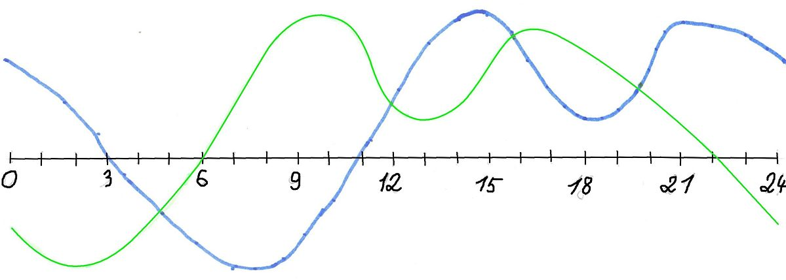
But in reality, the circadian rhythm is not smooth, here is what it more realistically looks like when integrating the ultradian cycles on top of the circadian cycle (source of the image unknown):

These ultradian cycles are of importance to fall asleep, because we feel most sleepy (and hence have more ease to fall asleep) at the lows between these blocks. Indeed, there is a gap (or low point if we imagine a continuous curve instead of discrete blocks) of about 20-30 min between each ultradian cycle, which is sometimes called the "gateways to sleep". That's why if you feel sleepy but fight the feeling and stay awake, after 20-30min you will feel more awake again for about 1h30. Hence, ultradian cycles can be a great tool to know when you are going to sleep, as if you feel a bit sleepy but it's too early for you to sleep (or you miss the window opportunity), you can calculate that in about 1h30-2h you will get another opportunity to sleep, and prepare on time to be ready for it. Meanwhile you can do something else, as it is better to get up if you can't sleep than staying in bed.
Also, ultradian cycles are like a rebounding ball, with a peak in the middle: there is always one ultradian cycle where the gap will be the peak of tiredness. The other ultradian cycles will be associated with less tiredness, whether before because the process S (sleep pressure) is still building, or after because of dopamine accumulation which counteracts the sleep pressure and creates a "forbidden zone of sleep" or more formally the "wake maintenance zones".
All these processes lead to an "all or nothing" access to sleep, a discrete event: either you can sleep now or you can't and need to wait later. Hence why the moments when sleep onset (ie, falling asleep) is possible is dubbed as "sleep gates":
"The onset of the nocturnal sleep period (the sleep gate) was found to be a discrete event occurring as an 'all or none' phenomenon."
This interaction between the processes C, S, dopamine and ultradian cycles explains why if you stay awake past your ideal sleeping time, you will find it more and more difficult to fall asleep, despite the accumulating sleep deprivation and sleep pressure, because of dopamine hiding the feeling of tiredness as more time passes on. That's also why after an all-nighter, you will have a harder time sleeping, despite the obvious sleep deprivation. This dopamine buildup may also be one of the factors causing chaoticity in the sleep patterns after extensive sleep deprivation. Hence why freerunning allows not only to avoid sleep deprivation and be more healthy, but it's also a virtuous cycle where your sleep will stabilize and you'll feel more the natural bedtime tiredness, and hence why it's necessary to freerun before starting any therapy.
Melatonin regulates access to these sleep gates, by allowing them during the biological night.
Wake maintenance zone and interactions with dopamine
The Borbély's model of sleep includes two processes: the process S which is the homeostatic sleep pressure that builds up like a timer over time for as long as the individual stays awake, and another process C for the circadian rhythm which varies during the day in cyclic fashion, and resets everyday whether the individual sleeps or not.
But there is another process that also builds up AND is periodic, mixing both properties of the processes S and C. This third process is the dopaminergic buildup, which likely interacts with the suprachiasmatic nucleus since it possesses dopaminergic receptors (TODO: find ref). Since this dopaminergic process possesses two properties, we will discuss them separately, although they of course interact.
About periodicity: multiple studies observed that a dopamine build up happens in a periodic circadian fashion, with "a zone of minimal sleep tendency approximately 1-3 h before habitual bedtime", and multiple others of lower sleep tendency (but not minimal) at various other times in the day as shown here and here. These time spans are scientifically called the wake maintenance zone(s) or the forbidden sleep zone(s). It is a paradoxical counterbalance to the sleep pressure produced by adenosine, and inversely, adenosine should produce sleepiness and hence counterbalance the alertness promoting effect of dopamine. This increase of dopamine leads to increased subjective and objective alertness and focus during these hours before sleeping and further along after a long period of sleep deprivation, and its periodicity doesn't stop even if the individual does not sleep.
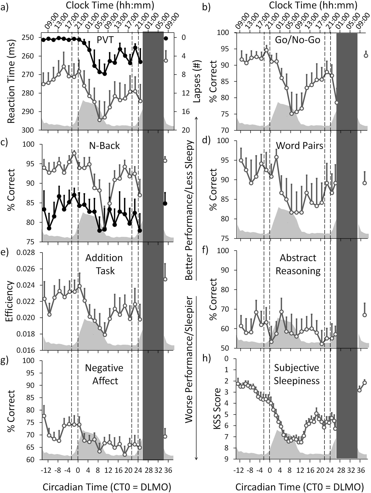
Figure 2 of de Zeeuw et al, 2018, we can see how there are bouts of increased efficiency/scores for nearly all tasks, just before the usual sleeping time (at 2 on the axis):
About buildup increasing with time: this process continues to buildup dopamine the more time spent awake, and hence the sleep deprived (see a summary here). A study of 40 hours of sleep deprivation observed a similar increase. This zone is one of the reasons it's extremely difficult to phase advance (ie, sleep earlier) than phase delay (sleep later) for individuals who are sleep deprived. In other words: when being sleep deprived, there will be a tendency to sleep later and later. This has detrimental consequences for individuals with a circadian rhythm disorder as this can needlessly increase their daily phase delay.
Individuals with non-24 often tend to skip sleeping (ie, pull an "all-nighter") in order to meet appointments and obligations. Because of the dopaminergic build-up creating an increasing but periodically varying wake maintenance zone, the less the individual sleeps, the less sleepy they will feel, and the more difficult it will be to sleep in the end. This creates a particularly vicious cycle for people with circadian rhythm disorders, since non-24 and DSPD causes people to be sleep deprived when they try to conform to a schedule. Hence, it is a prerequisites for them to first try to follow their natural rhythm, to reduce this and other confounding effects on their sleep if they want to either log it in a sleep diary or try to control their circadian rhythm a bit.
After an all-nighter, the individuals may complain that their body doesn't know when to be asleep or awake anymore, likely because of this dopamine buildup. This buildup may also explain why after such a prolonged period of sleep deprivation, the individuals will tend to sleep chaotically at a very different time than their circadian rhythm should allow for, because paradoxically it may be easier to sleep out of phase than in phase because the wake maintenance zone preceding the biological sleeping period will only be reinforced by the previous prolonged period of sleep deprivation. This may produce the illusion that the individual could reset their circadian phase to an entrained phase synchronized with the day-night cycle, which is completely incorrect and short-lived since their circadian rhythm has not changed. This illusion may also affect clinicians capacity to diagnose the circadian rhythm disorder, as they may get the impression that the individual can manipulate their circadian rhythm at will, which is not the case, and a simple look at the sleep fragmentation and duration should clear any doubt.
Hence, all-nighters should be avoided for individuals with a circadian rhythm disorder to avoid the dopamine build-up from unnecessarily worsening the condition.
The author of this document used to be a slow sleepers all his life, taking at least 30min to fall asleep but usually more than 1h. After a few months of sleeping in phase with the circadian rhythm and the reduction of sleep deprivation, the sleep onset delay was naturally reduced to 15min or less.
In practice, the ultradian gates to sleep can be used as follows: don't just go to sleep whenever you want or planned, rather plan ahead and define a period when you know you will be more likely to fall asleep according to your circadian rhythm. During this time period, prepare in advance (brush your teeth, prepare bedroom, save your work and reminder notes for later, etc) to sleep at anytime and then do passive activities (with dark therapy) during the rest of that time period to wind down until sleepiness feeling kicks in (even if subtly). Take this feeling as a cue to go to bed, falling asleep should then happen fast.
TODO: rewrite the paragraph below:
Also, the impact of the dopaminergic system on the circadian rhythm is even worse for people with ADHD and a circadian rhythm disorder ([paper1](https://www.maynoothuniversity.ie/research/human-health/neurobehavioural-cognitive-science/projects/link-between-adhd-and-circadian-body-clock), [paper2](https://www.ncbi.nlm.nih.gov/pubmed/30927228), [paper3](https://europepmc.org/article/PMC/4323534), [paper4](https://www.nature.com/articles/s41386-019-0592-4), [paper5](https://journals.sagepub.com/doi/full/10.1177/1087054716669589), [Washington Post article](https://www.washingtonpost.com/news/to-your-health/wp/2017/09/22/could-adhd-be-a-type-of-sleep-disorder-that-would-fundamentally-change-how-we-treat-it/)). See also [this post](https://www.reddit.com/r/DSPD/comments/fcdfqo/is_adhd_and_dspd_often_comorbid/).
Sleep hygiene
Sleep doctors as well as profanes often recommend strict sleep hygiene as the first treatment for circadian rhythm disorders and sleep disorders. For example, it's not uncommon to get prescribed a very strict sleep schedule, such as sleeping everyday at the same time, avoiding any screen use 3-4h before bedtime, and waking up with an alarm clock at the same time or sometimes 15min earlier every day (which is phase advance chronotherapy).
Strict sleep hygiene never works.
Indeed, the human body doesn't work like a clock... Humans biological processes, including sleep, follow not only a circadian rhythm (ie, a rhythm over 24h) but also an ultradian cycle (1.5h-2h), which is why when we feel a feeling of tiredness and are able to sleep, if we force ourselves to remain awake for more than 20min, the feeling will usually subside only to come back 1.5-2h later: these periods of high tiredness feeling are called the gateways to sleep (see the relevant subsection elsewhere in this document). Like all biological processes, these cycles have some natural variability every day, and hence it makes sense that the exact timing of this ultradian cycle, and the gates to sleep where you can sleep, varies a bit everyday, just like any biological process. Hence, requiring a patient to sleep at a strictly set time is not just difficult, it's impossible and goes counter to how the human body works biologically.
If those sleep doctors were to wear an actigraphic device to track their exact sleep timing, they would certainly see that they themselves never sleep exactly at the same time every day, they also experience the same variability in their sleep onset timing. For them to ask the patients to follow such an overly strict sleep schedule that is not humanly possible to follow is only setting the patients to fail, and is hence a guaranteed but unfair opportunity for some of them to unduly blame their patients' low motivation or lack of self-control.
Avoiding screens altogether is unnecessary and extreme, all that is needed is during the biological evening and night to install a blue light filter app and reduce the brightness of the screens to the minimum and dim or turn off all environmental lights. It's always funny that some doctors focus only on screens, because they forget that if the user doesn't use any screen but keeps the room lights on or even just use a white light bed lamp to read a book, this will delay the circadian rhythm much more than just looking at a screen. To avoid the unwanted circadian phase delays induced by light and indirectly by screens, what matters is to avoid the stimulation of the ipRGC cells in the eyes during the biological evening and night, and all that is needed to achieve that is to filter blue light and reduce the intensity of all environmental light sources (not just screens).
Some people would argue that intellectual stimulation before sleep can worsen sleep. Although certainly mental stimulation is counter-productive, there is no evidence that this can shift nor entrain the circadian rhythm (and there is no biological reason to think it can happen), hence if we assume mental stimulation may affect sleep, it may only affect sleep quality, not the circadian rhythm.
On the other hand, more flexible recommendations of sleep hygiene can be helpful, although not a solution to shift the circadian rhythm as they cannot help in entrainment.
Usual sleep hygiene wisdom can of course help reduce the negative influence of habits or of some molecules that can affect sleep quality: avoid caffeine (coffee, energy drinks, tea) 6h at least before bedtime, make your bedroom comfortable, cosy and with a cool temperature, do not stay in bed if you can't sleep under 30min. Caffeine was shown to phase delay the circadian rhythm up to 40 min over 49 days of experiments if a double expresso was ingested 3h before habitual bedtime.
Just like food restriction is an unhealthy and ineffective strategy for weight loss, sleep restriction strategies are as bad for sleep and will only worsen circadian rhythm disorders. Several common therapies such as sleep restriction (sleep hygiene only), cognitive therapy or meditation relies on requiring "efforts" from the patient over their sleep, which only lead to further chronic sleep deprivation and dopamine buildup (forbidden sleep zone). Some strategies also require believing, a positive mindset, or other subjective capacity rooted in ableism. The LiDACMel therapy does not require any such "effort" from you, and no therapy should do. The only thing required is your commitment to follow the instructions regularly and at the adequate timing for your circadian rhythm. All steps are done when you are naturally awake, without requiring you to wake up or sleep earlier forcefully. A positive mindset is a plus as it allows to stay motivated and committed, but it's not necessary, and I actually was not believing the therapy would work since I had to iterate several times with variating the parameters until it did eventually, despite me not believing if it was even possible to be entrained at all.
If you get entrained, you may feel like your days are shorter. This is because you are used to longer days than 24h. It's important then to remember your commitment to improve your sleep by entrainment, and so to put your sleep first: if you still have work to do but you feel tired, then postpone to tomorrow your work and go to sleep asap. Interestingly, night shift workers get the same feeling of a too short day, and they are also advised to put their "sleep first, not an afterthought".
Going to bed too early is a waste of time of course, plus it worsen insomnia. If your body is not ready to sleep, laying down in your bed isn't gonna help. So yes don't lose your time like that, do stuff when you're not feeling sleepy. It's not unconventional. Ask any typical sleeper to systematically lay down at noon in their bed because someone else decided this should be the time they should sleep at. They simply will be driven mad by the inability to sleep and the loss of time. Individuals with non-24 and DSPD are the same, it's just at a different time. Nothing unconventional in doing stuff when you are awake.
Laziness, willpower and motivation
People with a circadian rhythm disorder aren't lazy, to the contrary, they put more efforts into waking up than others. Indeed, laziness has nothing to do with the circadian rhythm.
How much efforts? An excellent example is the NASA crews monitoring robotic Mars missions, where the trained crew was tasked with following a non-24h martian sleep-wake schedule to better monitor the robotic missions, ended up with the crew rebelling and dropping the schedule as they felt it was unbearable, after a single month! This crew was composed of highly trained staff, and the authors praised them for sustaining this "broken" non-24 schedule for a full month. But as the authors state:
> The authors attributed this result to the high motivation of the crew, although motivation has limited ability to override circadian and homeostatic regulation of alertness and performance and is, in fact, subject to these influences itself.
Why did the authors praise the crew's high motivation in following a non-24h schedule, despite rebelling and prematurely stopping the experiment 30 days in only? Because chronic sleep deprivation is quite a feat, and is used as a form of torture by the USA (see also here) and before by the nazis through night-time musical disturbances. The effect of sleep deprivation can also be observed on more recent and well documented cases such as Peter Tripp, Randy Gartner (see also here) and Jason Russell of Kony 2012 fame. Experiments and therapies disrupting someone's natural sleep schedule are nowadays considered unethical. Unethical medical experiments on humans are unfortunately common.
Hence, thinking that sleep issues are caused by a lack of motivation is an inversion of logic. Actually, motivation is actually deeply influenced by sleep as noted above, and it was demonstrated on a cohort that sleep deprivation drastically impairs motivation for social and physical activities, and the authors further suggest this may have deep implications in the pathogenesis and treatment of a wide array of diseases.
The accusations of laziness are unfortunately just instances of sleep-shaming based on a just-world, suffering-reward and ableism ideologies. Laziness is often confused with tiredness, but their signs and causes are entirely different, and people with a circadian rhythm disorder foremost suffer from tiredness, not laziness.
Since there is not one circadian clock but lots of them throughout the body and down to every cells, willpower can obviously not change the molecular biology of the circadian processes, just like willpower cannot cure diabetes.
Should you use an alarm clock?
Alarm clocks are not meant to help with adjusting the circadian rhythm, they only are a way to get up to be on time for appointments. Indeed, they don't prevent your circadian rhythm from freerunning under the hood, as if it was the case, circadian rhythm disorders would not exist since anyone using alarm clocks would be entrained.
That's why actually not using an alarm clock is more helpful if you want to get entrained, because then you reduce external factors and also reduce sleep deprivation, which messes up with the circadian rhythm in major ways. But if alarms are necessary because of appointments, then there's nothing to do about it in the short term, and maybe wait for holidays to switch off the alarms and fully dedicate to an entrainment therapy.
Also, the wake up time is much more predictive of your circadian rhythm than bedtime (see also here). Hence, with an alarm clock, you are deprived from a very strong indicator to track your sleep and the progress of the entrainment therapy. Indeed, it's possible to wake up at the same time or even earlier regardless of sleep time (whether you slept later or before usual), and in my own experiments, the stability of the wake up time seems to be a strong sign of successful entrainment.
Do not wake up earlier with an alarm clock to do the therapies. Although one study on typical sleepers studied a phase advance protocol combining a chronotherapy (using an alarm clock to wake up 1h earlier every 3 days) and light therapy at wake up, in practice I did not find any advantage in using an alarm clock or combining light therapy with a chronotherapy. I would rather advise to just wake up and sleep when you naturally feel inclined to do so, and do the therapies when you are awake. This was the most efficient strategy in my experience, as this gets as much benefits from light therapy, while reducing the potential and unnecessary sleep deprivation induced by alarm clocks and which can hinder the effectiveness of the phase advance produced by the light therapy. In my experience, it is useless to try to force yourself to wake up earlier: either the therapy is working and you will naturally sleep and wake up earlier, or you don't and the therapy is not effective and behavioral interventions won't work. See also here.
So remember: alarm clocks are for appointments, not for therapy. If your entrainment works you should wake up at the time you want without an alarm clock.
Hormones and women
Non-24 is arguably more difficult to treat in (biological) women than in men, as they also have a menstrual rhythm in addition to the circadian rhythm. Indeed, the natural hormonal variations and their impact on both the core body temperature and the circadian rhythm on a menstrual periodic timescale. The body temperature is raised during the luteal phase or under contraceptive pills, and lower during the follicular phase with a similar temperature profile to men. Women taking oral contraceptive experience reduced slow-wave deep sleep. Core body temperature and melatonin profiles are unaffected by menstrual phase, but menstrual phase interacts with REM sleep. Hence, "gender, menstrual cycle phase and hormonal contraceptives significantly influence body temperature".
Furthermore, the "use of oral contraceptives has been found to increase night-time melatonin levels and the menstrual phase may affect the melatonin level (Webley and Leidenberger 1986; Wright and Badia 1999)", so there is an interaction between melatonin and contraceptives, including progestin which increases melatonin levels.
"Continuous monitoring of body temperature during the menstrual cycle is commonly performed in daily life. The basal body temperature (BBT) decreases at the end of the luteal phase."
"Sleep-deprived women lose heat rapidly in response to a mild cooling stimulus. Sleep-deprived humans may be more vulnerable to heat loss with reduced ability to warm even at temperatures thought to be associated with thermal comfort."
According to the 2005 study on the biggest cohort (57 participants) on sighted non-24 subjects yet, there were 41 (72%) men and 16 (28%) women. This high disparity is in contrast with observations that can be made on community support groups such as the N24 discord, where participants introduce themselves, and which allows to observe that gender is much more balanced. Also apriori there is no genetic predisposition that would be specific for male sex. Hence, it is the author's conviction that women are under-diagnosed, even more than men, with circadian rhythm disorders, due to both psychiatric misdiagnosis as a somatic/conversion/anxiety disorder, and because of cultural and societal expectations women are less required to perform work and hence can more easily fit into society by being assigned to home and children care, which makes them and their disorder further invisible.
Women higher in progesterone such as during the luteal phase of the menstrual cycle and men lower in testosterone, both of which can be caused by sleep deprivation, were more vulnerable to emotional swings, showing that sleep deprivation can impact sex hormones which in turns can impair emotional regulation. Sperm physiology fluctuates according to ultradian (2h) and infradian (6 to 12 months) cycles.
In a (rare) 2007 review on this topic, it was found that there are strong links between menstrual cycle and circadian rhythm disturbances, with associations between circadian misalignment and menstrual irregularities, longer menstrual cycles, breast cancer, decreased sleep quality around menses and menstrual-related mood changes. The review also found differences in sleep quality and body temperature between luteal and follicular phases of the menstrual cycle.
Low melatonin levels are associated with endometrial cancer and breast cancer and is suggested to be used as a screening indicator of these cancers, and inversely timezones with lower light exposure and hence lower melatonin inhibition such as the Arctic see lower rates of breast cancers. These cancers are also much more prevalent in women working in night shifts. Breast cancer survivors are not spared, as the ones sleeping in misalignment with their circadian rhythm are more likely to have more metastases.
Women with unmanaged non-24 have further practical limitations as they cannot hang out at night without significantly increased risks of aggressions, contrary to men.
Note the author of this present document is male, and hence this section could be further expanded and there may be specific tips and additional therapies or adjustments necessary for the VLiDACMel protocol to optimally work for women. It would also be necessary to find if some studies were done on hormonal replacement therapy and other hormonal treatments, as the induced change in hormones is likely relevant to circadian rhythm disorders.
Nightmares and sleep quality
Nightmares are a common worry among sufferers of sleep disorders.
In my experience, dreams and nightmares are not related to the sleep quality nor the circadian rhythm disorders. Sleep quality is solely determined in the author's case by sleep duration and circadian alignment (ie, sleeping under the low phase of the circadian rhythm). Nightmares were an almost daily occurrence during the whole experiment, and they did not impair the entrainment (nor cause desynchronization). They also did not impact daytime mood, contrary to what psychologists hypothesized, whereas sleep duration and circadian misalignment did. This decorrelation between nightmares and sleep quality was observed in a study: "nightmares affect the experience of sleep quality but not sleep architecture".
However, nightmares can be troublesome for some. Nightmares are more likely to happen during vivid dreams, and vivid dreams happen during REM sleep, towards the end of the night.
There are compounds which are known to increase the vividness of dreams, and hence the likelihood of nightmares, such as melatonin, magnesium, vitamin B6 (which is often used by lucid dream experimenters as it also increases dream recall) especially when combined with zinc such as in ZMA (zinc magnesium B6) compounds. It seems these compounds may be more likely to increase dreams vividness and nightmares occurrences when the dosage is too high or when taken too close to bedtime, so decreasing the dosage and taking them earlier in the day (ie, the morning rather than the evening) may help.
Eating, particularly a heavy meal, just before going to bed may increase the likelihood of nightmares (studies here and here - this last one is not peer-reviewed). Spicy foods may also disturb sleep. Hence, it may be preferable to eat earlier, which is advised to avoid the carbs and melatonin interaction anyway. If a meal just before bed is really necessary for you, eating a smaller meal may help in reducing sleep disturbances and nightmares.
Nightmares and vivid dreams are a frequent occurrence for people with an advanced disease such as advanced cancer, which is not surprising since the dreams of psychiatric and insomniac patients also reflect their daytime worries. Nightmares are prevalent in 19-81% of people with PTSD depending on the severity of PTSD and their exposure to physical aggression.
Furthermore, the vast majority (98%) of dreams just randomly recombine elements of the waking life (ie, they are NOT symbolic representations of the unconscious contrary to Freud's beliefs). Dreams content is influenced by the most recent events experienced in the day (see previous ref, mirror here). Also, personally significant and novel experiences are more frequently integrated in dreams than common, repetitive daily activities. Hence, it is important to have some time to wind down and do pleasurable hobbies before sleeping, and thus avoid stressing or mood depressing activities at the same time. This technique is called positive presleep suggestion.
Nightmares can be a good indicator of increased REM sleep, and hence of circadian wake up time and potentially of circadian misalignment. Indeed, deep sleep stage is reduced and REM sleep stage is increased when sleeping out of phase (ie, circadian misalignment). REM sleep stage is also increased towards the end of one's sleep. Vivid dreams are more frequent during REM sleep. Hence, having nightmares are more likely to occur towards the end of the night, and when being circadian misaligned. Thus, although waking up after a nightmare is often assumed to be because of the nightmare, it is likely the other way around: that the nightmare occurred because the body was already getting ready to wake up.
Hence, experiencing nightmares often signals that the body was ready to wake up. This can be used to confirm that the current wake up time is in phase with the circadian rhythm if the sleep duration is long enough and the wake up time is stable over several days, or if these 2 parameters aren't fulfilled, the time at which the nightmares occur (with or without a wake-up) can indicate when your circadian wake up time is expected by your body, which may be very different from what the individual think their sleep schedule should be. For example, if an individual think their sleep schedule is from 1am to 9am (8h of sleep), but they wake up from nightmares at 5am, this indicates increased REM sleep around 5am, hence the individual may rather have a circadian sleep schedule of 9pm-5am. If the individual can sleep during this window of time for 8h (their natural sleep need), then they found their circadian sleep window. Otherwise, if the sleep duration is much less (eg, <5.5h), then it's likely that the individual is still sleeping out of phase and the increased REM sleep is simply a consequence of circadian misalignment that is not indicative of where the circadian wake up time is, but simply that there is a circadian misalignment.
Side-note: the relative perceived time spent in dreams is in fact equivalent to reality's time, except when doing motor tasks which take more time to do during dreams. The dream-lag effect is also very interesting and could be linked to spaced repetitions learning or intermittent reinforcement. The existence of both the day-residue effect and the dream-lag effect hints at the existence of a circaseptan (ie, 7-days) rhythm in humans (in addition to circadian and ultradian rhythms, and menstrual for women).
Side-note 2: for those interested in lucid dreams, here is a great tutorial by a lucid dream researcher to get started (this may be used as a way to reduce nightmares by gaining more control over dreams).
Side-note 3: although sleep necessity was previously thought to be due to brain cleanup processes including dreams, which was shown to be incorrect, it now appears that dreams major purpose beside memory consolidation may be to allow for creative thoughts by recombining memories in innovative ways. Although unconfirmed, there is now an experimental framework that will allow the testing of this hypothesis in the upcoming years.
Comorbidities with other disorders (mood, neuroatypism, movement)
This section covers comorbidities of circadian rhythm disorders with other disorders/diseases including mood, neuroatypism and movement (including some disorders that would commonly qualified as "mental", but this is a too vague word that will not be further used). For other comorbidities (such as metabolic) that are much more frequent and often caused directly by sleep deprivation or circadian misalignment, such as cardiovascular diseases, see the "Health issues of a circadian rhythm disorder" section.
Sleep disorders are associated with lots of other disorders and diseases. It's difficult to know which is causing what, whether it's the sleep disorder that causes the other disease, or if the other disease is worsening the sleep disorder, or if they are both independently caused by another third factor but they interact with each others.
Regardless, it's known that sleep disorders can worsen other diseases severity, such as autism, depression and ADHD. But there are also anecdotal reports from some individuals that getting treatment for their other disease (such as ADHD) also helped or sometimes cured their sleep disorder, including non24. Furthermore, some individuals were misdiagnosed with ADHD when they really had DSPD. More recently, a systematic review found consistent evidence of circadian rhythm disruption in ADHD, and it's estimated that circadian rhythm disorders such as DSPD (likely including misdiagnosed non-24) is present in 78% of people with ADHD! Interestingly, an analysis of the geographical prevalence of ADHD shows that solar intensity explains 34%–57% of the variance in ADHD prevalence. Circadian rhythm disorders of people with ADHD can apriori be treated with the same usual treatments, as melatonin does not interact with methylphenidate, and light therapy should be used with care due to potential sensory hypersensitivity inherent to ADHD or induced by drugs such as methylphenidate — as indeed photosensitivity seems to be present in 70% of people with ADHD —, hence extra care should be given to using only the minimum light intensity setting on light therapy glasses and keep eyes closed the first 30s of starting a light therapy session to let the pupil contract and reduce the chance of side-effects associated with sudden bright light exposure.
On one hand, treating the sleep disorder can help with the other disorders, such as major depression. It appears that a delayed melatonin profile is associated with unipolar depression, and depression symptoms caused by night-time light exposure (and hence circadian misalignment) can be cured by eliminating the light exposure. Indeed, the increased difficulties in social interactions, the lack of routine (and hence increased cognitive load) and the depressed mood are not surprising for someone with non24 or extreme DSPD who is living at night and sleeping during the day. Entrainment, or simply light exposure, can objectively improve the situation, and in addition treating sleep issues can reduce the severity of depression along the way. Interestingly, melatonin helps only with the mood symptoms and the sleep of depressed individuals with DSPD, but doesn't help for depressed individuals without DSPD, which is another hint that circadian rhythm disorders are not causally related to mental disorders, they are only associated because they worsen each other, and may co-occur simply because of the burden of sleep disorders. However, the wide spectrum of melatonin activities makes it a potential candidate to treat diverse neuropsychiatric disorders including epilepsy, schizophrenia, depression and anxiety disorders, hence treating the circadian rhythm disorder with a therapy including melatonin may also directly affects the co-morbid neurological or mental diseases.
On the other hand, depression can impair the individual's motivation and ability to stay committed to a treatment (therapeutic compliance). This can create a vicious cycle, where a comorbidity increases sleep deprivation and fragmentation, and these in turns worsen the comorbidity expression, as it happens with epilepsy. So although there is no evidence that treating depression can treat a comorbid circadian rhythm disorder, the mood and motivation improvement can indirectly help by improving compliance.
Mood, including higher cognitive functions such as the ability to read other people's subtle emotional or social cues but also leaders abusive behaviors and decision making particularly moral judgments, are severely impaired by sleep deprivation, regardless of education and sleep deprivation quantity. Indeed, judges dole out more severe sentences on the "sleepy mondays", the mondays after DST time change, which is less than 1 hour of sleep deprivation once a year. This can have a societally wide impact as minorities are more prone to sleep deprivation due to discrimination. Sleep deprivation also increases depression and impairs autobiographical memories, causing remembrance of more negative memories. Even modest changes in sleep quality (increases or decreases) causes changes in pain perception the next day (decreases and increases respectively) — literally, sleep deprivation is painful, and pain can be treated by increasing sleep duration and quality. Circadian misalignment, in particular with aberrant light exposure, can also cause major cognitive, learning and mood impairment. Sleep deprivation is detected visually by other people, making you appear less socializable with (ie, "ugly") and "sadder" (see also here). Leaders supervision's quality can vary dramatically from day to day based on their sleep quality.
Severe sleep deprivation will even lead to hallucinations and psychosis, with more hallucinations happening with proportionally more time awake. Interestingly, in the famous Tripp's case, the medical doctors observed that the hallucinations happened on an approximately 90 minutes period, which is exactly the duration of ultradian cycles during sleep, suggesting that ultradian cycles (and potential dreaming) happen all day long, but are somehow inhibited during wakefulness unless there is prolonged sleep deprivation. Interestingly, delirium shows circadian fluctuations, and melatonin supplementation may reduce it. TODO: add ref (from thoughty2 video)
Sleep deprivation can impact sex hormones which in turns can impair emotional regulation.
Individuals with DSPD who have a circadian misalignment (ie, it's not behavioral) are more prone to depression, showing a link between circadian misalignment and depression.
Bright light exposure is known to have an antidepressant effect, likely due to the inhibition of melatonin, since melatonin inhibition by propranolol also has an antidepressant effect. Hence, a reduction or lack of bright light exposure can worsen the mood. Light therapy improves mood as much as antidepressants according to a systematic review and meta-analysis, and is even recommended by the authors as a first-line treatement for seasonal and non-seasonal major depression alone or in combination with antidepressants for greater effect, which makes sense given the very low risk of side effects with light therapy compared to antidepressants. Although it was hypothesized more than 50 years ago by Franz Halberg that non-24 may be associated with the bipolar disorder, a study found little to no evidence.
Patients with an advanced disease such as advanced cancer are more prone to sleep disorders including circadian rhythm disorders, and hence some authors recommend that all patients with an advanced disease should be systematically screened and treated for sleep problems. Sleep disturbances are common in PTSD (70-91% report at least one), although this includes nightmares as a disturbance and with inconsistent evidence of objective sleep disturbance (ie, lack of evidence that PTSD is associated with sleep disorders).
There are other diseases such as the restless legs syndrome (RLS) that are not necessarily associated with circadian rhythm disorders, but the acute triggering of their symptoms show a circadian pattern. This was also demonstrated for Periodic Limb Movements in Sleep (PLMS/PLMD). This means that melatonin can trigger the symptoms of RLS through an interaction with the dopaminergic system. Although RLS is not necessarily associated with circadian rhythm disorders, it is estimated that 35-44% of the people with ADHD also have RLS, and 78% of people with ADHD have DSPD (or non24), hence having ADHD increases the likelihood of having both RLS and a circadian rhythm disorder. In the unlucky case the individual both has RLS and a circadian rhythm disorder, melatonin supplementation is then counter-indicated, which reduces the possibilities for the treatment of the circadian rhythm disorder. However, despite the RLS symptoms triggering by melatonin, some users reported a positive side-effect on mood and motivation and on the circadian rhythm. This effect of melatonin on the dopaminergic system would merit further studies. It's very interesting to notice that both ADHD and RLS share the similarity of having dysregulations in the dopaminergic system, and given the strong link of the dopaminergic system with the circadian rhythm (see the "forbidden zone of sleep"), this suggests that dysregulations of the dopaminergic system may be a cause of circadian rhythm disorders for some individuals.
Preliminary evidence suggests that children with dyslexia may have a dysregulated circadian profiles of melatonin and cortisol.
Autism and sleep disorders
The links between autism spectrum disorders (ASD) and sleep disorders, including circadian rhythm disorders, are so strong and prevalent that a dedicated section is necessary to treat the topic.
Indeed, it is now widely recognized that "poor sleep exacerbates problematic daytime behavior", especially for children and adolescents with severe symptoms associated with ASD, as sleep patterns predict worsened behavior in individuals with low-functioning autism (for 81% of the participants, hence a high accuracy!). Autistic individuals with an unstable sleep also have worsened symptoms. Sleep deficits also lead to difficulties in communication, as well as increased restrictive and repetitive behaviors. In light of the crucial importance of sleep for autistic children and teenagers, the American Academy of Neurology published guidelines in 2020 to recommend to systematically screen autistic individuals for sleep issues, and for sleep to be a primary target of treatment as a major way of improving the quality of life and the symptoms of autism. A 2018 review even suggested that autistic children should be profiled based to design better targeted interventions. Interestingly, some of the behavioral ASD symptoms that can be worsened by sleep deprivation, such as difficulties in recognizing others emotions or mood depression and irritability and other daytime behavioral disturbances, are also worsened in non-ASD individuals after sleep deprivation including neurotypical kids ("general pediatric population"), showing an overlap between some ASD symptoms and sleep deprivation symptoms.
Sleep issues is indeed highly prevalent with individuals with ASD: 44% to 83% of children and adolescents with ASD have sleep issues (see also here), and sleep issues only gets worse with time, as adults with ASD have twice more sleep issues than adults without ASD (summarized here). Indeed, contrary to the common belief that one can "grow out of sleep issues", they in fact do not remit with time. Not only sleep issues are increased for adults with ASD, but also other metabolic (diabetes, obesity, hypertension, dyslipidemia, gastrointestinal), immune disorders as well as psychiatric disorders such as bipolar, depression and anxiety.
Although ASD is strongly associated with sleep issues, "they are not bidirectionally associated: sleep problems do not precede and worsen autistic behavior but rather co-occur with autistic traits in early childhood. Over time, children with ASD have an increase in sleep problems, whereas typically developing children have a decrease in sleep problems. Our findings suggest that sleep problems are part of the construct ASD." In other words, sleep issues are not the cause of ASD, they just worsen the symptoms, and sleep issues may be one of the primary facets of ASD.
What is the source of these sleep issues for individuals with ASD? About 28.3% of them have hyperserotonemia, which means they produce too much serotonin, and is one of the most reproduced endophenotypes of ASD. Serotonin can be converted into melatonin. This can lead to a (paradoxical?) decrease of endogenous melatonin levels. And indeed, low melatonin levels in "in urine, plasma and pineal gland" due to "dysregulated melatonin synthesis or clock gene anomalies" was observed in several individuals with ASD (see also here). Furthermore, mother's level of melatonin can impact their child, as low maternal melatonin level increases the likelihood of autism spectrum disorder for their children. Hence, the culprit of these sleep issues can be for some individuals with ASD due to circadian misalignment. Melatonin pills supplementation showed great success to treat individuals with ASD and sleep issues, including a study showing sustained efficacy for children with ASD of 2mg-5mg of prolonged-release melatonin over more than 1 year of treatment, and is hence recommended since 2020 as a first-line therapy to try for these individuals.
Finally, both ASD, sleep issues and digestive issues seem to be linked, with "ASD children with GI symptoms reported more severe ASD core symptoms than others".
Side-notes: ASD individuals are often misdiagnosed with borderline personality disorder (and inversely) (see also here). It's interesting to note that the social interactions difficulties that autistic people experience may not be entirely due to their behavior but also to the negative apriori prejudice toward style (and not content) of behavior by neurotypical individuals.
Genetic studies have also linked autism and sleep and circadian rhythm disorders (such as FOXP1 gene), with some researchers even going as far as to suggest that autism may be a kind of circadian rhythm disorder (see also here).
Can this therapy cure non24 and other circadian rhythm disorders?
Curing an illness means that after some period, treatment can be discontinued without the loss of the benefits. Management means that the detrimental effects of an illness can be reduced or even eliminated as long as the treatment is continued.
Currently, there is no known therapy that can cure non24. Indeed, it was shown that the circadian rhythm and melatonin profiles shifts back to its natural state only a couple of days after stopping light therapy that was administered for a week and sometimes as fast as under 15 min of stopping light therapy. Similar return to baseline levels over a couple of days were observed with melatonin treatments. Light therapy and melatonin being the most effective tools currently known to shift the circadian rhythm, this strongly suggests that no currently available treatment can permanently modify the circadian rhythm.
Hence, the only currently known treatments, when they work for the individual, which is not guaranteed for everyone, are only managing the disorder, not curing it. The treatments must hence be continued life-long to maintain the benefits.
Any improvement is better than none as it reduces sleep deprivation, and any reduction of sleep deprivation is well worth it. Take what you can out of treatments, don't aim for the ideal time that you may not reach, just aim for a better and more stable sleep schedule than you experience now.
The adherence can also be problematic, as a previous study found that combination therapy with melatonin and light/dark therapy had a high drop out rate, due to the difficulty to maintain a "behavioral and environmental structure that is required to maintain stable entrainment". However, it must be noted that this study had several major limitations: it used conventional blue light therapy lamps which cumbersomeness was reported as one of the reasons at least one patient dropped out; the duration of light therapy was small, only 1h, which did not account for the differences in light hypersensitivity; it required waking up earlier (ie, a "strict sleep schedule") hence prior sleep deprivation; finally, the melatonin and light therapy timing were calculated based on sleep onset (ie, falling asleep time), although this is an unreliable estimator of the circadian rhythm. All these points are counter productive and can in fact be easily fixed by using light therapy glasses emitting blue light, and using the light therapy at wake up instead of forcing a strict sleep schedule and instead of using the sleep onset time.
If this therapy does not work for you, and this is a real possibility, then there are a few other things that can be checked:
- a MRI (magnetic resonance imagery, more precisely a T1-MPRAGE) of your brain to check if there is any lesion in the pineal gland or the suprachiasmatic nucleus.
- a blood test checking B12 and vitamin D levels.
Adaptations of this protocol for other circadian rhythm disorders (DSPD, nightshift workers)
The tools (zeitgebers) to modify the circadian rhythm are the same for all other circadian rhythm disorders. These therapies are even used by Canadian Air Forces and NASA's Mars missions crews. What changes between various conditions are mostly two points:
- the individual's intrinsic circadian rhythm, since zeitgebers efficacy is dependent on the timing of use/intake/exposure relatively to circadian rhythm.
- the goal: phase advance (waking up earlier) or phase delay (sleep later) or entrainment (stay stable)?
The following subsections will describe some adaptations that the author would suggest to optimize the therapeutic efficacy of the treatments presented in the present document, although please bear in mind the author could not thoroughly test these suggestions since he is not afflicted by these conditions.
Adaptations for DSPD
Delayed Sleep Phase Disorder (DSPD) is a highly prevalent disorder that accounts for 10% of all sleep disorders and is often misdiagnosed as sleep-onset insomnia. About half (47%) of individuals with DSPD are light hypersensitive, suggesting they can be responsive to light therapy.
This review offers a concise but accurate definition and description of DSPD and its etiology:
> The developmental changes in the circadian and sleep systems we have described may be exaggerated in adolescents who receive a diagnosis of delayed sleep phase syndrome (DSPS). DSPS is a disorder with a typical onset in the second decade of life or earlier [75]. Weitzman, Czeisler, and colleagues [76,77] first described delayed sleep phase insomnia as a distinct syndrome characterized by a cluster of features including a chronic inability to fall asleep and wake at a desired clock time, consistency in reported sleep times at later hours than other individuals, and otherwise normal sleep when measured by all-night polysomnography if the delayed schedule is allowed. An important characteristic of the syndrome is that patients are able to initiate and maintain sleep on their normal delayed schedule; difficulties manifest only when they attempt to synchronize their sleep schedule with requirements of normal everyday schedules of society. As a result, patients with DSPS are locked into a sleep schedule that is out of phase with usual work and school requirements. Other consequences of DSPS include sleep loss, disturbed sleep, excessive daytime sleepiness, and impaired waking function.
The major difference between DSPD and non-24 lies in the intrinsic parameters of the circadian rhythm: whereas non-24 have an always shifting circadian rhythm, DSPD have a fixed circadian rhythm and hence ideal sleeping time, just like typical sleepers, but delayed. More technically, we could say that N24 don't have a preferential intrinsic sleep schedule due to the ever changing circadian rhythm, but DSPD do have one.
In theory, individuals with non-24 can use their natural freerunning ability to wait and be in phase with any sleep schedule they want, and then "freeze" (entrain) their circadian rhythm in place to maintain the target sleep schedule. To do that, individuals with non-24 only need therapies that produces a relatively small phase advance, just the same amount as their natural daily phase delay (eg, for an individual with a 25h day, hence a 1h daily phase delay, a therapy producing a 1h phase advance is theoretically sufficient for entrainment).
On the other hand, individuals with DSPD already have a fixed circadian rhythm, hence the phase advance therapies will only "stretch" their circadian rhythm. In theory, this means they can only wake up earlier as much as the phase advance they get from the therapies.
Let's take an example: with a therapy producing a phase advance of 1h, an individual with DSPD with a circadian rhythm fixed at 4am-12am will see their sleeping schedule shifted to 3am-11am after therapy. With the same therapy, an individual with non-24 such as a 25h day who wants to wake up at 8am can freerun and wait until their sleep is from 12pm-8am before starting the therapy. With this 1h phase advance therapy, the DSPD individual cannot consistently wake up before 11am, whereas the non-24 individual can choose virtually any time by leveraging their freerunning ability.
This changes the goal of the therapies: whereas non-24 just need a small but reliable phase advance, DSPD need to combine multiple phase advance therapies to get more phase advance.
In practice, the current protocol should be adapted as follows:
- No need to wait before starting the therapy, since there is no need to freerun before being in phase.
- A longer light therapy can be used to get more phase advance.
- Other weaker zeitgebers such as physical exercise can be used in complement to light therapy, melatonin and food to get additional phase advance.
- The rest is left unchanged. For example, zeitgebers can be expected to work the same because all humans have apriori the same fundamental physiology, so for example light therapy should still be most effective at natural wake-up time, and the longer the exposition the more phase advance. The health issues of sleep deprivation and circadian misalignment for DSPD individuals who try to constraint their sleep should also be the same, since the same basic biological processes are at play (oxydants accumulation due to reduced endogenous melatonin production, cognitive deficiencies increasing the risk of accidents, etc).
Although it was hypothesized that forced freerunning (phase delay chronotherapy) could be used too by individuals with DSPD, in some cases this may have turned into a non-24 disorder, hence it is now disadvised to try this approach until there is further clinical trials.
Adaptations for night shift work disorder
Whereas non-24 and DSPD are intrinsic circadian rhythm disorders, shift work disorder along with jet lag are extrinsic circadian rhythm disorders, meaning they are caused by external factors, such as work constraints.
Night shift disorder is kind of the inverse of the non-24 disorder: whereas individuals with non-24 naturally freerun and accumulate sleep deprivation and health issues by trying to constraint to a fixed sleep schedule, night shift workers are typical sleepers with a naturally fixed sleep schedule but who suffer from sleep deprivation and health issues by being constrained to a rotating (ie, freerunning) work schedule. In both cases, this result in progressive misalignment between the internal circadian rhythm and the day-night cycle and the work schedule.
Night shift workers hence suffer from similar health issues due to chronic sleep deprivation and circadian misalignment as other intrinsic or extrinsic circadian rhythm disorders.
TODO: rewrite below
BEST: strategy to delay circadian rhythm: mix light-dark exposure + eye mask to sleep correctly in the dark + blue blocker glasses: A compromise phase position for permanent night shift workers: circadian phase after two night shifts with scheduled sleep and light/dark exposure. https://www.ncbi.nlm.nih.gov/pubmed/16887753 and formally advised by: Working Time Society consensus statements: Evidence based interventions using light to improve circadian adaptation to working hours. https://www.ncbi.nlm.nih.gov/pubmed/30700675
However, even with a full and stable change of shift to be completely at night for an extended period of time without progressive rotation (ie, the "night float paradigm"), it still reduces sleep duration and quality and affect performance and vigilance of the healthcare workers because of circadian misalignment. This goes counter to the circadian plasticity theory.
[25]: Light-Dark PRC accounts for 71% of the circadian rhythm variability: https://www.ncbi.nlm.nih.gov/pubmed/29589871
[26]: BEST: evidence of interaction between circadian and homeostatic sleep processes, confirming Borbély's theory: «In naturalistic conditions, subjective and objective sleepiness and driving events are increased following night shifts, even during short (~30 minutes) commutes and exacerbated by an interaction between circadian phase and duration of wakefulness.», Sleepiness and driving events in shift workers: the impact of circadian and homeostatic factors., https://www.ncbi.nlm.nih.gov/pubmed/30882154
«Although healthcare workers perceive themselves to be less alert on the first night shift compared to subsequent night shifts, objective performance is equally impaired on subsequent nights.» → although the first sleep deprivation is felt as the worst, habituation to sleep deprivation does NOT enhance cognitive performance, as it stays constantly reduced compared to no sleep deprived performance. https://www.ncbi.nlm.nih.gov/pubmed/30874565
«Of the 416 hospital workers who participated, two in five (40.9%) screened positive for a sleep disorder and 21.6% screened positive for depression or anxiety. After multivariable adjustment, screening positive for a sleep disorder was associated with 83% increased incidence of adverse safety outcomes. Screening positive for depression or anxiety increased the risk by 63%. Sleep disorders and mood disorders were independently associated with adverse outcomes and contributed additively to risk.» Sleep disorders, depression and anxiety are associated with adverse safety outcomes in healthcare workers: A prospective cohort study., https://www.ncbi.nlm.nih.gov/pubmed/30069960
BEST: Shiftwork Disorder Screening Questionnaire https://www.ncbi.nlm.nih.gov/pubmed/23204612
"Finally, the higher incidence of cancer could be caused, in part, by light during the night shift. Light suppresses the secretion of the neurohormone melatonin which is an antioxidant." -> melatonin supplementation and blue blocker glasses may reduce the cancer (and immunodepressive) incidence + 20 years of studies and experiments on circadian realignment + protocol for partial alignment: https://www.cdc.gov/niosh/nioshtic-2/20045415.html
Practical circadian interventions for night shift work, Eastman CI - "primary proposed mechanism for a possible shift work effect on breast cancer risk is also by hormonal perturbations" http://www.hazards.org/cancer/graveyardshift.htm - "The results provide further evidence that night shiftwork may increase the risk for breast cancer and suggest that the largest impact on risk is associated with the most disruptive shifts." - Echoing a concern raised separately by both Schernhammer and Stevens, Hansen said in the years after cessation of exposure, the passage of time “attenuates or fully eliminates” previously observed risks. (ME: so if we start to freerun and sleep according to our circadian rhythm, over time the risk decreases as the hormonal perturbations gradually level out).
Modafinil RCT on night shift disorder: Cognitive Performance Following Modafinil Versus Placebo in Sleep-Deprived Emergency Physicians: A Double-Blind Randomized Crossover Study, 2006 https://pubmed.ncbi.nlm.nih.gov/16436796/
- "Modafinil increased certain aspects of cognitive function and subjectively improved participants' ability to attend post-night-shift didactic sessions but made it more difficult for participants to fall asleep when opportunities for sleep arose."
[38]: Sleep strategies of night-shift nurses on days off: which ones are most adaptive?, 2014, https://www.frontiersin.org/articles/10.3389/fneur.2014.00277/full - my summary on reddit: https://www.reddit.com/r/Nightshift/comments/gezng0/should_i_change_my_sleep_schedule_whenever_i_get/fq1aa64
[39]: https://www.researchgate.net/publication/8001986_The_Nighttime_Nap_Strategies_for_Improving_Night_Shift_Work_in_Workplace
Other tips: https://doi.org/10.1097/cnq.0000000000000152
Other therapies or circadian rhythm factors
Similar therapies
Anecdotally, there has been multiple reports of success stories using similar therapies to what is described in the present document:
- 1 year entrainment of a non24 by using light therapy glasses 30min-1h at wake up, dark therapy and melatonin (the poster was previously resistant to melatonin treatment alone - interestingly, he also at some point tried to stop melatonin and use only light therapy, but eventually had to go back to use melatonin for stable entrainment): https://www.reddit.com/r/N24/comments/8bw67q/how_my_non24_treatment_has_allowed_me_to_sleep/
- 3.5 years entrainment at least of a non24, using blue light therapy lamps (lots of them), dark therapy and strict sleep hygiene: https://non24.blogspot.com/2009/09/synopsis-from-my-teenage-years-until-my.html
- 10 years+ entrainment of a non24 using a custom bright neon light lamps setup and dark therapy: https://www.reddit.com/r/IAmA/comments/cjx2i/iama_non24_i_sleep_every_26_hours_no_matter_what/ (the 10+ years of entrainment was confirmed to me in private correspondances)
- Eliezer Yudkowsky achieved much better entrainment results for his non24 with properly timed melatonin than with the usually prescribed 1h before bedtime timing, in 2013, combined with light-dark therapy: http://www.hpmor.com/notes/98/
- 2+ years of entrainment for a DSPD using light/dark therapy and melatonin: https://www.reddit.com/r/DSPD/comments/h11xok/followup_from_cured_sufferer/
- DSPD phase advance with morning exposure to sunlight, but with lots of variability due to change in weather (as noted by the author themselves, suggesting that sunlight does work, but it's highly variable because of weather, so their wake up time varies from day to day due to the varying amount of lux): https://www.reddit.com/r/DSPD/comments/hilzak/spending_time_outside_around_sunset_and_twilight/
- A purchase comment for the UVEX Skype blue blockers and Luminette v2: https://www.amazon.com/gp/customer-reviews/R3SIEA9MI7JNYB
- Several testimonies for phase advance for individuals with DSPD using the Luminette: https://www.reddit.com/search/?q=Luminette or https://www.reddit.com/r/DSPD/search?q=Luminette&restrict_sr=1
And here is the list of previous therapies the authors self-experimented but which failed to entrain on at least 1 month:
- melatonin only, 1h before bedtime or 2-4h before DLMO, this was advised by sleep specialists.
- light therapy lamp (medical grade, brand Beurer TL 30, for 30 minutes at the appropriate distance) + dark therapy (blue light filters, blue blocker glasses) + melatonin 1h before target bedtime, this was advised by sleep specialists. Note that recently a user could apparently get entrained with a very long light therapy (at least 3h) with a Beurer TL 30. So these lamps may work as well as the light therapy glasses, but they are just much more cumbersome.
- strict ketogenic diet only (+ dark therapy).
- full carbs diet only (+ dark therapy).
- intermittent fasting (or even complete fasting for a few days), with and without dark therapy.
- time-restricted feeding with big meal timing (with carbs), with and without melatonin 2-4h before DLMO.
- serotonin via 5-HTP, either in instant release in the evening to help to sleep, or in long release form in the morning to level up the fluctuation in energy levels.
- Chronotherapy, whether for phase advance (15min per day or 1h each 3 days) or faster phase delay (except when combined with ketogenic diet and late meal timing).
- Short light therapy (1h) combined with chronotherapy (1h earlier light therapy every 3 days, with an alarm clock)
Other drug-based therapies
TODO: work-in-progress section.
Other therapies and drugs exist to treat non-24, which are all melatoninergic (ie, affecting the melatonin receptors): ramelteon, tasimelteon (costs $17K a month!) and agomelatine. Only tasimelteon/hetlioz is currently cleared by the FDA, both for blind and sighted non-24. But the data on effectiveness remains sparse, even more than for melatonin. All these drugs work on the melatoninergic receptors type 1 and 2 and can hence shift the circadian rhythm, whereas more experimental drugs such as cordycepin work on adenosine receptors (ie, adenosinergic drugs). The difference between melatonin type 1 (MT1) and type 2 (MT2) receptors is that type 1 causes drowsiness whereas type 2 causes circadian shifting/consolidation. A third melatonin receptor (MT3) was identified but is poorly understood.
Given how Tasimelteon/Hetlioz binds with a high affinity to the MT2 receptor compared to MT1, and MT2 being the receptor most often associated with circadian shifts, it's safe to assume it's a unique drug compared to others and it should work for both blind and sighted individuals. It's also the only drug out of circadian rhythm shifters that also improves cognitive abilities, likely since it binds less with the MT1 receptor and hence does not produce as much drowsiness as other melatoninergic agents. If we compare with melatonin, we could say that tasimelteon can likely produce the same or greater circadian shifting (because it's binding much more with melatonin type 2 receptors) but without the drowsiness that melatonin induces as a side effect. But this in theory, so whether alternative drugs are in practice more effective than melatonin (which is MUCH cheaper, remember Hetlioz/tasimelteon costs $12K to $17K a month!) remains to be seen.
Ramelteon on the other hands binds with both MT1 and MT2 receptors like melatonin, but with a 3 to 16 fold higher affinity. It also has a slightly higher preference for MT1. Contrary to melatonin, ramelteon does not bind with MT3. Because ramelteon is not metabolized directly but has a first-pass through the liver, the doses are usually higher than that of melatonin to increase bioavailability. The discovery of ramelteon's mechanism of action reinvigorated the research on melatonin.
> Agomelatine binds to MT1 and MT2 receptors with approximately equal affinity and is distinctive in that it has additional antagonist properties at the serotonin receptor subtype (5-HT2c).40 Ramelteon exhibits a 10-fold greater affinity for MT1 than MT2,59 and prolonged-release melatonin exhibits an 8-fold greater affinity for MT1 than MT2.39 Tasimelteon is the only one of these four compounds that shows a greater affinity for MT2 than MT1, with the difference being 4-fold.58
> [...] Two of these compounds, ramelteon and tasimelteon, are approved by the FDA and available commercially in the United States, and three compounds—agomelatine, prolonged-release melatonin, and tasimelteon—are approved by the European Medicines Agency and are commercially available in Europe.
From: https://www.ncbi.nlm.nih.gov/pmc/articles/PMC5108473/
According to this review, agomelatin should only be considered when the patient has both a circadian rhythm disorder and major depression, as it can treat both. Both melatonin and ramelteon were shown to be non mutagenic and non carcinogenic.
The issue with the current offer of melatoninergic drugs is that "there is still a lack of melatonergic ligands with high selectivity and specificity to precisely target any particular neuropsychiatric disorders", hence the design of melatoninergic drugs targeting more specifically a receptor's type, especially MT2 as it has a more important role in circadian rhythm shifting than MT1, could yield a tremendous advance in the treatment of circadian rhythm disorders.
Modafinil, a wakefulness promoting agent, was used in combination with light therapy and melatonin to force entrainment for an individual with sighted non-24. But a study on night shift disorder found that modafinil can produce or worsen insomnia (ie, "made it more difficult for participants to fall asleep when opportunities for sleep arose").
Melatonin has historically been the first line of treatment for non 24 in blind people. It was shown to be effective for entrainment in up to 67% of the subjects, at least on the short term.[45] However, since this is a natural hormone that is not patentable (although low dosages of melatonin were patented at some point), no pharmaceutical industrial went through the process of validating melatonin through national institutions such as the USA Food And Drugs Administration, and thus melatonin is not officially recognized as a treatment for non 24, although there is good evidence this is the case.[44, 45] There is currently only one recognized drug treatment for non 24, which is Tasimelteon (commercial name Hetlioz),[44] with an entrainment rate of 20% in a randomized controlled study, which seems considerably lower than melatonin's entrainment rate.[45] Apart from these two drugs, there is currently not enough evidence for any other kind of treatment or therapies for non 24, according to the 2015 guidelines of the American Academy of Sleep Medicine (AASM).[44, 45] As pointed out by an excellent review, the AASM made their criteria more difficult in the latest revision of their guidelines, so that only treatments with reliably high confidence of effectiveness could be recommended, but that does not mean other therapies are ineffective, simply that there is not sufficient evidence.[45]
[44]: AASM CRSWD clinical practice guidelines 2015 https://aasm.org/clinical-resources/practice-standards/practice-guidelines/crswd-intrinsic/ and http://sleepeducation.org/docs/default-document-library/crswd-draft-executive-summary.pdf?sfvrsn=2
[45]: BEST: plus interpretation of these guidelines (eg, non recommendation does not mean they should not be tried) and other infos: Circadian-Based Therapies for Circadian Rhythm Sleep-Wake Disorders https://www.ncbi.nlm.nih.gov/pmc/articles/PMC5156320/
TODO: rewrite the paragraph above.
Keep in mind it is highly unlikely there will be much research and further clinical validation to light therapy and melatonin than what we have now, because the pharmaceutical industries aren't interested in unpatentable treatments, as they shown again lately with the remdesivir for COVID-19 sold at $3120 for one course of treatment when its production costs only $0.93 per day of treatment. and despite very low R&D cost of $1.5M and public uproar when Gilead, the manufacturer, tried to pass the repurposing for COVID-19 as an orphan disease, which allows for state funding and allows to sell drugs at virtually any price (usually ludicrously high), similarly to Hetlioz/tasimelteon.
The only systematic protocol for entrainment ever published seems to be the one by Czeisler et al, using microdoses of melatonin at a fixed time, everyday. The idea is that at some point, the freerunning circadian rhythm will fall in place with the appropriate timing for entrainment relative to the DLMO. Hence, this protocol does not require the assessment of DLMO using salivary samples or any other monitoring, it simply requires patience and patient's compliance to the treatment, because forgetting the dose or changing the intake timing can render the treatment ineffective. In theory, this should work very well and they demonstrated it worked on several non-24 patients. However, in the current document's author's experience, melatonin is not sufficient for some individuals. Furthermore, the treatment would not be robust, since it would rely on a single treatment and missing one dose would make it ineffective, hence it's a too fragile entrainment for a non24 patient to continue their everyday activities under this treatment. Finally, it also temporarily increases the risk of glucose malconsumption and of developing metabolic syndrome diseases, because of the exogenous melatonin intake during the awake period, until the individual's freerunning circadian rhythm falls in phase with the melatonin treatment. It's also arguable whether such low doses of melatonin, and only using melatonin, would be enough to produce enough phase advance for severe cases of non-24 with extended circadian periods (eg, longer than 25h).
Some individuals with DSPD claimed using 5-HTP (5-hydroxytryptophan) or L-Tryptophan helped them. Both L-Tryptophan and 5-HTP are precursors of serotonin, itself a precursor of melatonin. Hence, 5-HTP intake can stimulate both the serotoninergic and melatonin pathways. Hence, it can indeed help with circadian rhythm entrainment, but likely not more than melatonin, with the only added benefit of the mood calming effect of serotonin, but with the potential risk of the fatal serotonin syndrome (particularly for individuals with hyperserotonemia such as autistic individuals). If you try 5-HTP and feel your heart racing, stop right away from further using the product.
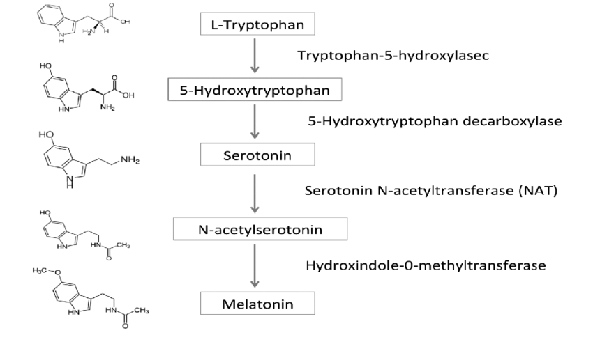
Melatonin synthesis pathway from L-Tryptophan through 5-HTP, from the figure 1 of this study under CC-BY 4.0 (thanks to Maverick on Discord)
Suvorexant/Belsomra is a new kind of sleeping pill, but tolerance and addiction build up fast too similarly to zolpidem and it induces a potentially important next-morning drowsiness that can cause accidents.
A highly new class of drugs is the dopaminergic agents, which can potentiate the magnitude of the circadian shifting effect of zeitgebers such as light and melatonin, and hence may be used to resensitize or even hypersensitisize individuals to the effect of light as was observed with DSPD individuals. This holds the promise of potentially allowing light therapy and melatonin more widely effective, by hypersensitizing individuals who were otherwise unresponsive to these therapies. Reddit member evilwizzard reported about a japanese clinical trial reported about a japanese clinical trial on the usage of the dopaminergic agent aripiprazole to advance the phase of DSPD individuals, and described the effects in practice, mentioning that the drugs aripiprazole, brexpiprazole and pramipexole have similar effects but with pramipexole having less side effects and easier dosage, as partial agonists such as aripiprazole become antagonists and produce the opposite effect with increased doses. The results are not so surprising as it's known, especially by RLS (restless legs syndrome) sufferers, that dopamine interacts with the circadian rhythm and especially with melatonin, and inversely. Accordingly, the reddit member, after trying for himself, reported both increased sensitivity to morning light, but also to melatonin using pramipexole of at least 0.5mg, with some other DSPD sufferers having used 2mg and 4mg succesfully to completely manage their disorder. The user also mentions drugs producing the opposite effect of inducing light hyposensitivity: "lithium and valproate acid both decrease light's ability to suppress melatonin". The issue with dopaminergic agents is their tolerance build up, so that they can not only produce addiction, but also will likely have diminishing effect with the same dosage, so that usually dopaminergic agents need to regularly be stopped temporarily for the dopaminergic agent to get restored and to again see the effect of the drugs at the normal dosage. The safety of such high dosages of dopaminergic agents needs to be studied. Other agents interacting with the dopaminergic system have been shown to potentially reduce the freerunning period, in other words to produce a phase advance, such as valproic acid, especially in mice with a deficiency of dopaminergic receptors.
A study found that methylphenidate increases sleep issues of children with ADHD, except for those with pre-existing sleep difficulties and using high dosages of methylphenidate, hence this molecule may help with sleep issues under some specific conditions that need more exploration to elucidate. A longitudinal study on a similar population of children with ADHD found that the negative effects of methylphenidate seem to disappear after a few weeks of treatment.
Here is a list of anecdotal reports of other working therapies for non-24:
- A sighted non-24 redditor reported consistent and reliable entrainment for 14 months by taking a combination of 10mg of instant release melatonin + 25mg of diphenhydramine, the user reported that the combination is necessary as taking either of the compounds alone only allowed for unreliable and inconsistent entrainment. This dosage was used by someone of about 6'4 size and 260 pounds of weight. The user furthermore clarified that the treatment required an empty stomach at least 3h before drugs intake. https://www.reddit.com/r/N24/comments/jofawh/hopefully_this_helps_somebody/
- A sighted non-24 redditor reported consistent and reliable entrainment for 7 months by following a lactose-free diet, and restart of freerunning when ingesting lactose, and is currently (November 2020) experimenting to confirm this observation: https://www.reddit.com/r/N24/comments/jnhsy3/im_fairly_sure_my_non24_is_caused_by_lactose/
Chronotherapy and behavioral therapies
A chronotherapy is a behavioral therapy consisting of requiring the participant to go to bed and wake up at precise times, with the goal of modifying the underlying circadian rhythm through behavior.
Chronotherapy mostly stems from the circadian plasticity theory, which is the hypothesis that behavioral interventions can increase or reduce the duration of the circadian period. This theory stems from observations on only a handful of 1980s case studies claiming that a few individuals with DSPD turned into non24 after stress and amalgamating this as a behavioral chronotherapy. See here for another interesting and more updated discussion. (Side-note: note also that this study, the foundational case for most claims that DSPD can turn into non24, assumes the unproven hypothesis that non24 is a psychological disorder that can be solely caused by stress instead of a biological one.)
There are two types of chronotherapies: phase advance chronotherapy (sleeping and waking up earlier than usual) and phase delay chronotherapy (sleep and wake up later and later each day). Historically, phase delay chronotherapy was the first kind of chronotherapy as devised by Czeisler et al in 1981. Both types of chronotherapies are indissociable: if we accept that the few cases of DSPD turning into non-24 after phase delay chronotherapy are not misdiagnoses, we accept the circadian plasticity theory (ie, that the circadian rhythm can be changed durably through behavior), and hence that phase advance chronotherapy is effective to treat circadian rhythm disorders. Inversely, if we are not convinced that phase advance chronotherapy can treat circadian rhythm disorders, then to be coherent, phase delay chronotherapy must also be rejected and these cases be considered as misdiagnoses.
Although a handful of studies shown some phase advance and phase delaying effects, they are all confounded by the change in light exposure or used in conjunction with melatonin, hence there is no evidence showing that chronotherapy alone can modulate the circadian rhythm. Given the lack of evidence in controlled trials and the high relapse rate in the few case studies published so far, the AASM concluded in their 2015 guidelines that there is no evidence of effectiveness to treat circadian rhythm disorders with chronotherapy alone. Furthermore, the circadian plasticity theory seems to be disproven by the relatively recent finding that although sleep may be a zeitgeber per se, it is certainly weak, hence the low to no effectiveness demonstrated so far by chronotherapies.
Hence, the author is convinced that chronotherapy, in the sense of changing the circadian period, does not work, and that the only effect of chronotherapy is to induce more chronic sleep deprivation.
Although it remains arguable whether DSPD can permanently change into non-24 after chronotherapy, individuals with DSPD can certainly temporarily lose entrainment and start freerunning with a non-24-like sleep schedule after being subjected to chronotherapy, as chronotherapy acts like a constantly induced jet lag. Such DSPD-turned-freerunning individuals will have difficulties to reacquire an entrainment, and it remains unclear whether for some they may not be able to revert back to DSPD and may continue to freerun, effectively turning into a permanent non-24.
Given the certain risk of temporary freerunning, and the potential risk of permanent freerunning (ie, DSPD turning into non-24), individuals with DSPD should NEVER attempt any kind of chronotherapy, whether it is the most destructive type phase delay chronotherapy (ie, sleeping a few hours later and later everyday) nor the phase advance chronotherapy (ie, sleeping 15-30min earlier and earlier).
On the other hand, already free-running non-24 individuals can try chronotherapy, they will only suffer from sleep deprivation during the procedure but with likely no impact on their circadian rhythm since chronotherapy has never been shown to be effective to sustainably treat non-24 (nor other circadian rhythm disorders).
Indeed, chronotherapy induces sleep deprivation by design, with the idea that increased sleep pressure will allow to more easily change the circadian rhythm, which so far did not work as the processes seems too decoupled. The result of chronic sleep deprivation is well known, including the development of potentially treatment-resistant insomnia, which may explain why some DSPD patients following a phase delay chronotherapy could be afterward perceived as non-24 (if this is correct, the sleep duration should be quite short for these cases when they were freerunning — whereas freerunning non-24 more often have long sleep periods).
Indeed, the cases of DSPD turning non-24 may as well have been simple misdiagnoses from the get go, which is certainly not uncommon for circadian rhythm disorders, or any disease when psychology is involved, and actually has already been observed for at least one sighted non24 misdiagnosed as a conversion syndrome (aka hysteria or "stress") who was finally correctly treated with melatonin. An adolescent with DSPD was misdiagnosed as ADHD. Psychologists misdiagnosis is not uncommon unfortunately, in particular with anything stemming from freudian psychotherapeutic approaches such as the conversion syndrome with nearly all non-organic diagnoses being reevaluated as an organic disease in follow-up studies (see here), and these misdiagnosis are more frequent in vulnerable populations such as women and children, delaying and interfering with adequate treatments and undermining patients trust towards healthcare. Historically, epilepsy was also diagnosed by psychologists as a conversion syndrome / hysteria, which obviously did not help and dangerously delayed the appropriate treatment, since untreated epilepsy can cause death. To overcome these misdiagnosis issues, the strategy chosen by generations of psychotherapists including the current ones is to regularly rename this "non-organic disorder" and its criteria.
On the other hand, there is no evidence at all of any individual with non24 getting entrained for a reasonably long period of time with a chronotherapy alone. More anecdotally but still of importance, i think nearly all individuals with a circadian rhythm disorder tried to force themselves to a 24h schedule at some point in their life, and the fact they are still participating in online communities such as Reddit looking for a proper treatment only shows these attempts unfortunately failed. Furthermore, the AASM stated in its guidelines that only indirect evidence exists, so chronotherapy (or Prescribed Sleep-Wake Scheduling as they call it) is at this point only a "potential therapeutic intervention" with no direct evidence it works, it's only theoretical. This also includes CBT-i (cognitive behavioral intervention for insomnia), which can be seen as a kind of structured chronotherapy or sleep hygiene. Also, it was shown that night owl chronotypes had less benefits from CBT-i interventions, hence it's arguable whether DSPD and non24 can get any benefit at all.
While there is no evidence chronotherapy/sleep hygiene can shift or entrain the circadian rhythm, there is in fact some evidence of the opposite, that it doesn't work, but it's the change in the timing of light exposure that shifts the circadian rhythm, as the authors of this study state: "The study showed that the direction of circadian phase change is determined by the light-dark exposure, not by the fixed sleep schedule, and that both morning and evening light exposures need to be controlled to shift circadian phase."
In the present article's author's experience, having tried several chronotherapy schemes, including with light therapy, the author's circadian period (length) remained remarkably stable and constant, never reduced nor increased despite multiple experimented approaches and additional tools: various schemes ranging from the flexible to the extremely rigorous (to illustrate: the author eats everyday the same meal with the same composition and similar quantity everyday and properly timed according to his circadian rhythm since a year to factor out diet composition and timing as a confusion factor), so sleep hygiene or rigor was certainly not an issue. There is only one exception being the strict ketogenic diet which multiplied the author's daily phase delay by 2 (ie, daily phase delay was 1h instead of 30min), but this is not a chronotherapy and the biological changes induced by this diet are way beyond what a behavioral intervention can achieve.
Not only chronotherapy have never shown any effectiveness to treat circadian rhythm disorders, but they are also dangerous because they cause circadian misalignment: forcing someone to be awake and eat at times when their body should naturally be asleep can cause metabolic disorders (themselves potentially causing life-threatening cardiovascular diseases such as strokes over the long-term), partly due to inducing them to eat when endogenous melatonin levels are still elevated which confers increased insulin and glucose intolerance and hence risks of diabetes type 2. In fact, the links between metabolic disorders and circadian misalignment are so strong that some researchers suggest to change the name of these diseases to "circadian syndrome".
You may still want to try your own chronotherapy (only if you have the non-24 disorder, otherwise if you have DSPD DO NOT TRY chronotherapy!), after all you don't risk much in the short term (if not done for longer than 1-2 months) apart from the sleep deprivation you likely already experience as otherwise you wouldn't pursue a way to fix your circadian rhythm. Indeed, either the chronotherapy works and hence even if it goes wrong (ie, increase your phase delay instead of reducing it), you'll know you'll have a leverage to manipulate your circadian rhythm. The idea is that if you can't entrain, you can try to at least find treatments that can modify your phase delay: if you have some treatments that can make it shorter, use it to extend the periods you like, whereas if other treatments make it longer (ie, your daily phase delay is increased, you sleep/wake up later), then use them to skip through the periods you dislike (eg, night walking). Either it doesn't work (as I am unfortunately strongly convinced), and then anyway whatever behavioral intervention you can do won't modify your circadian rhythm a bit, so you'll just have to deal with the temporarily increased sleep deprivation you experienced. In any case, be prepared to experience unnecessary painful sleep deprivation with certainly no beneficial result if you decide to follow a chronotherapy, even if prescribed by a sleep specialist.
If you have a hard time understanding (or making others understand) why the circadian rhythm is unlikely to be manipulable through sheer willpower, you can make an analogy with diabetes: noone wants to be diabetic, and if diabetics could become non-diabetic just by willpower, they certainly all would just do that. Circadian rhythms are the same, they are mostly set in our biological code throughout the body, starting from the DNA and with some potential environmental changes (this is NOT the same as behavioral changes, see epigenetics). This analogy with diabetes may actually be quite accurate seeing how many evidences accumulate linking the two (and other metabolic syndromes, see the Diet subsection in Troubleshooting).
In the future, nudging will likely be attempted on circadian rhythm disorders, although being woefully unethical and with ambiguous benefits.
Attempting chronotherapy is not necessary to develop non-24.
Note that a book by Michael Terman and Ian McMahan uses the term "chronotherapy" with another meaning, without behavioral intervention but rather by using properly dosed and timed zeitgebers, which are nowadays more commonly termed "chronobiotics".
Partially from my own post: https://www.reddit.com/r/N24/comments/gycc26/inverting_non_24/ftavh7o?utm_source=share&utm_medium=web2x
Cannabis
Contrary to common beliefs, marijuana (cannabis/THC) is not a hypnotic, it does not help with sleep disorders, and it has a lot of psychological/neurological minor but invasive side effects such as a drastic loss of motivation.
However, according to a 2019 review there is some evidence that cannabinoids may be capable of shifting the circadian rhythm, and more anecdotally, some individuals with DSPD claimed that specific formulations may be more effective such as by oral ingestion.
Alcohol
Alcohol (ethanol) can disrupt both the biological and molecular (peripheral) circadian clocks (see also here), in addition to increasing sleep fragmentation. Hence, alcohol reduction or elimination if possible should be a primary target to improve the circadian rhythm disruptions.
However, treating only alcohol is unlikely to entirely manage non-24, they are separate but interacting disorders, hence both must be treated in parallel.
Core body temperature monitoring for circadian phase assessment
TODO: Work-in-progress section, will be expanded and rewritten in the future.
Monitoring vital signs that are pertinent for a disease is essential for the robust management of any disease. Insulinotherapy for diabetes is only effective when the user knows how to monitor their glucose levels. Similarly, without a reliable way to monitor the circadian rhythm, it is likely impossible to robustly manage circadian rhythm disorders, even if we have efficient therapies, because we simply don't know when to use them. Biology is per definition variable, even with a strict compliance to the therapy, there will be variability in the circadian rhythm, which requires adaptations in at least the timing but potentially the dosage of the therapy on a day-to-day basis. It is hence not sufficient to simply define a therapy and ask for patient compliance: the patient needs to be able to adapt it flexibly depending on how their circadian rhythm reacts and varies on a daily basis.
Body temperature monitoring, whether peripheral (skin) or core, is strongly associated with the circadian rhythm. It is hence likely the best non-invasive predictor. Compared to melatonin which requires saliva or urinary samples, body temperature can be monitoring 24/7 using wearables. Furthermore, melatonin can be decoupled from the circadian rhythm, hence it is not always a reliable predictor, whereas temperature has much stronger links. Although temperature wearables are arguably one of the least developed wearable technology compared to ECG, PPG and actigraphy, there is already a significant body of research and technologies such as deep temperature sensors, including zero-heat-flux and dual-heat-flux, are highly promising, although seldom studied and even more rarily available in industrial products, they are mostly DYI by lab researchers. Nevertheless, the COVID-19 sanitary crisis led to a welcome surge of interest in temperature monitoring wearables, and hence we are seeing new products emerging in the market, such as GreenTEG CORE, as well as old timers that are re-explored such as the Maxim Thermocron iButton.
This section will describe both the physiological links between temperature and the circadian rhythm, and then the methods to both acquire and analyze temperature data to estimate the current state of the circadian rhythm, and finally how to use this information to adapt the therapies.
TODO: the rest of the section is WIP
Core body temperature monitoring:
- Only the rectal temperature is both non-invasive and medical-grade (reflecting core body temperature accurately), although deep sensing wearables such as zero-heat-flux and dual-heat-flux may become good alternatives in the future: https://www.gssiweb.org/en/sports-science-exchange/Article/monitoring-internal-body-temperature#articleTopic_3
- Another review showing infrared and oral temperatures are not reliable: https://journals.lww.com/nursing/Fulltext/2010/12000/Which_core_body_temperature_measurement_method_is.7.aspx
- Digital thermometer in the axillary is a good relative predictor of core body temperature: https://doi.org/10.1016/j.ijnurstu.2010.11.003
- «In an individual with DSWPD (B), DLMO occurs later than in a normal sleeper (A) and is potentially influenced by hypersensitivity to evening light, increased evening light exposure, and decreased morning light exposure. A delay in the phase of the circadian pacemaker and sleep-wake timing has been reported in patients with DSWPD, manifesting as a longer interval between CBTmin and sleep offset time, compared with normal sleepers (A). [...] In healthy sleepers, the temperature minimum during sleep occurs ~2 hours before sleep offset, whereas in DSWPD the temperature minimum has been reported to occur ~4 hours before sleep offset.» https://doi.org/10.1016/j.jsmc.2016.05.004
- Evaluation of Commercial, Wireless Dermal Thermometers for Surrogate Measurements of Core Temperature, 2019 (comparing iButtons with others) https://pubmed.ncbi.nlm.nih.gov/30882250/
- "The analysis indicates that the distribution of sleep onsets during free run is bimodal, with one peak at the temperature trough and, contrary to previous reports, a second peak 9-10 h later." https://www.ncbi.nlm.nih.gov/pubmed/3605382/
CBTmin is often assessed in circadian rhythm disorders study to quantify the circadian period tau. https://aasm.org/resources/clinicalguidelines/crswd-intrinsic.pdf
Links between core body temperature and circadian rhythm:
- Review to understand the technologies available for temperature monitoring, but don't trust what is said about specific devices, most are dead or not medically validated: Current Developments in Wearable Thermometers, 2018 https://www.jstage.jst.go.jp/article/abe/7/0/7_7_88/_pdf
> The core temperature is regulated by the thermoregulatory system with its center being the hypothalamus. By means of vasomotor, sweat and evaporation, this system is capable of maintaining the core temperature within a narrow range. Fluctuation of the core temperature obeys the circadian rhythm and shows the lowest value in the early morning and a peak in the afternoon or early evening with a difference about 1°C.
- Evaluation of wireless determination of skin temperature using iButtons, 2006
In other words, it seems most of the core body temperature variations are due to the circadian rhythm.
- DLMO is on average 7/8h (sleep duration) before Tmin: https://www.ncbi.nlm.nih.gov/pubmed/14667152
Dataset of 362 clinical-grade wearable devices for continuous monitoring, done in 2019 and published in 2020: https://www.ncbi.nlm.nih.gov/pmc/articles/PMC6931114/ + https://pubmed.ncbi.nlm.nih.gov/31778885/ + https://dataverse.no/dataset.xhtml?persistentId=doi:10.18710/QXMY88
> Another interesting rhythm that is controlled by the biological clock is the cycle of body temperature, which is lowest in the biological night and rises in the biological daytime. This fluctuation persists even in the absence of sleep. Activity during the day and sleep during the night reinforce this cycle of changes in body temperature, as seen in Figure 9.
https://science.education.nih.gov/supplements/nih_sleep_curr-supp.pdf
> The circadian sleep propensity rhythms had two apparent peaks (afternoon and nocturnal peaks) and a trough (nocturnal sleep gate). The timings of the nocturnal sleep gate and the nocturnal peak were correlated exclusively with temperature and melatonin rhythms (P < 0.05), while that of the afternoon peak was significantly correlated with habitual wake time and melatonin rhythm.
https://pubmed.ncbi.nlm.nih.gov/10459703/
> Although most models of sleep regulation include a circadian component, the actual mechanism by which the circadian timing system promotes--in addition to homeostatic pressure--transitions between sleep and wakefulness remains to be elucidated. [...] A review of the literature shows that increased brain temperature is associated with a type of neuronal activation typical of sleep in some structures (hypothalamus, basal forebrain), but typical of wakefulness in others (midbrain reticular formation, thalamus). Not only local temperature, but also skin temperature are related to the activation type in these structures. Warming of the skin is associated with an activation type typical of sleep in the midbrain reticular formation, hypothalamus, and cerebral cortex (CC). The decreasing part of the circadian rhythm in core temperature is mainly determined by heat loss from the skin of the extremities, which is associated with strongly increased skin temperature. As such, alterations in core and skin temperature over the day could modulate the neuronal activation state or "preparedness for sleep" in arousal-related brain structures. Body temperature may thus provide a third signaling pathway, in addition to synaptic and neurohumoral pathways, for the circadian modulation of sleep. [...] Finally, the model indicates that appropriately timed direct (passive heating) or indirect (bright light, melatonin, physical activity) manipulation of the nocturnal profile of skin and core temperature may be beneficial to disturbed sleep in the elderly.
https://pubmed.ncbi.nlm.nih.gov/10841209/
> The circadian rhythm of core body temperature (CBT) is a well-documented physiological phenomenon. Already in 1842, Gierse [6] had shown that his own oral temperature revealed a maximum temperature in the early evening and a minimum in the early morning hours with a maximum-minimum range of 0.9 °C. It had been assumed for a long time that muscular activity (exercise) and digestive processes were the most important factors for generation of the CBT rhythm [8]. Aschoff and his colleagues systematically explored the causes of this rhythm [1, 2]. He showed that the circadian rhythm of CBT is determined both by changes in heat production and changes in heat loss, and concluded that heat production undergoes a circadian rhythm which is phase advanced by 1.2h with respect to the circadian rhythm of heat loss, i. e. when heat production surpasses heat loss, CBT increases – transport of heat needs time. Therefore, when we want to explain changes in CBT we need to know the relationship between heat production and heat loss.
Ref: How is the circadian rhythm of core body temperature regulated? Kurt Krauchi 2002 editorial http://www.chronobiology.ch/wp-content/uploads/publications/2002_02.pdf
> In humans, melatonin contributes to the body temperature rhythm since it is responsible for vasodilatation of the skin of the extremities through its activation of thermosensitive neurons present in brain areas involved in sleep regulation. The melatonin secretion schedule is closely related with the propensity to sleep and coincides with a fall in the central body temperature, arousal level and performance. Indeed, since 1992 we know that the circadian rhythms of melatonin and body temperature are inversely coupled. The hypothermic properties of melatonin are accountable for the generation of at least 40% of the amplitude of the circadian body temperature rhythm. Manipulation of melatonin levels might be clinically useful to resynchronize the body temperature rhythm under conditions of body temperature rhythm desynchronization.
Ref: https://www.ncbi.nlm.nih.gov/pubmed/25719796 — it was shown that exogenous melatonin but only with higher doses > 1mg can produce hypothermia as also shown here.
> The SCN responds to light entering the eye, and so is sensitive to cycles of day and night. While light may be the trigger, the UT Southwestern researchers determined that the SCN transforms that information into neural signals that set the body's temperature. These cyclic fluctuations in temperature then set the timing of cells, and ultimately tissues and organs, to be active or inactive, the study showed.
> Scientists have long known that body temperature fluctuates in warm-blooded animals throughout the day on a 24-hour, or circadian, rhythm, but the new study shows that temperature actually controls body cycles, said Dr. Joseph Takahashi, chairman of neuroscience at UT Southwestern and senior author of the study.
Ref: https://www.sciencedaily.com/releases/2010/10/101014144314.htm and http://dx.doi.org/10.1126/science.1195262
→ If true, this would mean that temperature (including peripheral temperature) monitoring would be the best marker of the circadian rhythm, even more so than melatonin (melatonin being a precursor to change the temperature, the latter being the final signal for cells to change their clocks).
Another similar result:
> Here we show that body temperature and sleep responses to acute light exposure are absent after genetic ablation of all ipRGCs except a subpopulation that projects to the SCN. Furthermore, by chemogenetic activation of the ipRGCs that avoid the SCN, we show that these cells are sufficient for acute changes in body temperature. Our results challenge the idea that the SCN is a major relay for the acute effects of light on non-image forming behaviors and identify the sensory cells that initiate light’s profound effects on body temperature and sleep." https://doi.org/10.7554/eLife.44358
> Patients with DSWPD and N24SWD had significantly longer melatonin and temperature taus compared to controls. Circadian non-delayed DSWPD had normally timed temperature and melatonin rhythms but were typically sleeping at relatively late circadian phases compared to those with circadian-delayed DSWPD.
Ref: Circadian tau differences and rhythm associations in Delayed Sleep-Wake Phase Disorder and sighted Non-24-Hour Sleep-Wake Rhythm Disorder, 2013 https://doi.org/10.1093/sleep/zsaa132
CRITICAL lead: minimal core body temperature can be used to optimally time bright light therapy, but not for melatonin (for which only DLMO matters):
> As the CBTmin serves as the “inflection point” between delaying and advancing effects for light, the DLMO serves as the approximate inflection point for advancing and delaying effects of melatonin.
> [...]
> No improvements in actigraphically determined sleep parameters were observed, and our analysis demonstrated no group difference with respect to the timing of DLMO27 (Appendix, Table S2). As the present review did not analyze outcomes relative to the timing of melatonin administration, however, it is important to note that the authors reported an inverse relationship between the timing of melatonin administration (irrespective of dose) and the magnitude of DLMO phase advance, such that earlier timing of the former (in relation to DLMO) resulted in greater phase advances. No such correlation was identified with respect to CBTMin (assessed only within the active treatment groups).
Ref: AASM 2015 guidelines on circadian rhythm disorders: https://aasm.org/resources/clinicalguidelines/crswd-intrinsic.pdf
> Uchiyama et al. had earlier determined that sighted non-24 patients' minimum core body temperature occurs much earlier in the sleep episode than the normal two hours before awakening. They suggest that the long interval between the temperature trough and awakening makes illumination upon awakening virtually ineffective,[22] as per the phase response curve (PRC) for light.
Ref: https://en.wikipedia.org/wiki/Non-24-hour_sleep–wake_disorder from https://pubmed.ncbi.nlm.nih.gov/11058797
Posture, sleeping and light exposure in the evening can all mask the circadian rhythm from core body temperature profile:
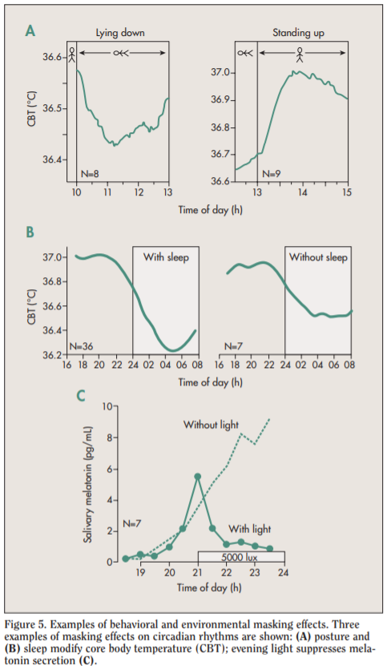
Ref: Figure 5 of https://web.archive.org/web/20181221161338/http://www.chronobiology.ch/wp-content/uploads/publications/2007_02.pdf
Causal link between core body temperature and circadian rhythm:
> The 24-h rhythm in core body temperature is the result of differential 24-h rhythms in heat production and heat loss. It has been demonstrated that under strictly controlled so-called ‘constant routine’ conditions, in which subjects remain awake in a fixed semi-supine condition without physical activity and with food and drinks taken in small portions throughout the day and night, the core temperature rhythm remains. Furthermore, the core temperature rhythm has been shown to result mostly from the circadian rhythm in heat loss, and to a lesser extent from changes in heat production [12]. Dry heat loss is caused by increased skin blood flow, allowing the dissipation of heat from the warm blood to the cooler environment. Although the iButton is not suitable for core body temperature assessment in humans, the assessment of temperature at multiple sites of the skin provides a reliable estimate of heat loss [12,13], suggesting a role for the iButton in long-term studies on the circadian variation in skin temperature and heat-loss which is responsible for an important part of the circadian variation in core body temperature.
> Body temperature can be divided into core and skin surface temperature (Fig. 1). Mammals, including humans, are homoeothermic; i.e., they require an almost constant internal body temperature. Core temperature is defined as the temperature of the hypothalamus, which is the regulatory center of the body.
> The core temperature is regulated by the thermoregulatory system with its center being the hypothalamus. By means of vasomotor, sweat and evaporation, this system is capable of maintaining the core temperature within a narrow range. Fluctuation of the core temperature obeys the circadian rhythm and shows the lowest value in the early morning and a peak in the afternoon or early evening with a difference about 1°C.
Ref: https://doi.org/10.14326/abe.7.88
> In the cardiovascular system, melatonin seems to regulate the tone of cerebral arteries; melatonin receptors in vascular beds appear to participate in the regulation of body temperature. Heat loss may be the principal mechanism in the initiation of sleepiness caused by melatonin. The role of melatonin in the development of migraine headaches is at present uncertain but more research could result in new ways of treatment. Melatonin is the major messenger of light-dependent periodicity, implicated in the seasonal reproduction of animals and pubertal development in humans.
Ref: https://pubmed.ncbi.nlm.nih.gov/9730580/
Proximal versus distal and distal-to-proximal skin temperatures:
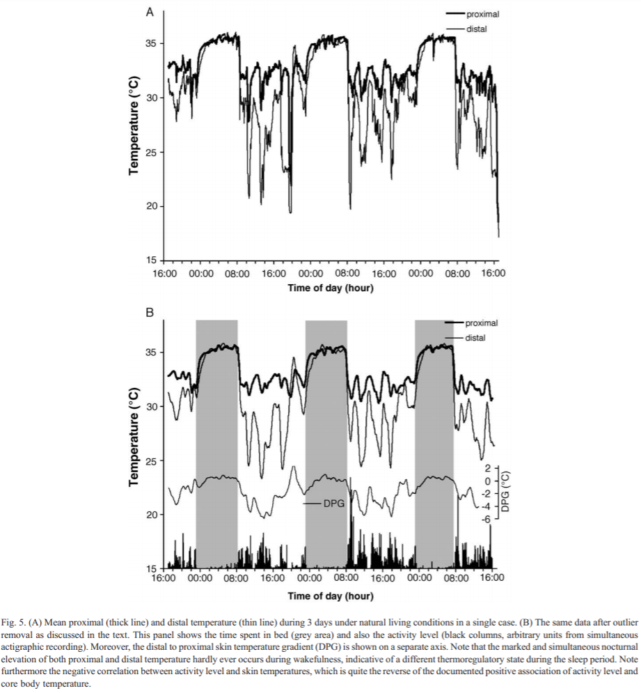
Ref: https://doi.org/10.1016/j.physbeh.2006.04.026
Distal wrist temperature circadian profile is delayed according to the chronotype (Figure 2) + High variability range between individuals (Figure 3 — meaning the difference between tempmin and tempmax throughout 24h is 1-3 degrees smaller for some as compared to others who have a more stable temperature profile — hence per subject feature scaling of temperature profile is necessary):
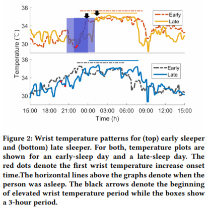
Ref: https://doi.org/10.4108/eai.20-5-2019.2282879
Brain temperature vs rectal temperature (with both thermocouples and dual-heat-flux method): Temperature Monitoring With Zero Heat Flux Technology In Comparison With Thermocouple Needle Probe During Selective Hypothermia, Mohammad Fazel Bakhsheshi et al, 2018. https://doi.org/10.1115/DMD2018-6930
> In addition to the sleep-promoting effects, melatonin completely suppressed the normal diurnal rise of core body temperature.
Ref: Sleep-Promoting and Hypothermic Effects of Daytime Melatonin Administration in Humans, 1997 https://doi.org/10.1093/sleep/20.2.124
Sleep deprivation increases body temperature, hence more difficulty to sleep! And melatonin can help, particularly supraphysiological doses.
> "Minimum rectal temperature, calculated from smoothed temperature data from 2300 to 0515 h, was greater in bright-light sleep deprivation, resulting in suppression of melatonin, than in conditions of sleep deprivation in dim light or sleep in the dark. An exogenous melatonin infusion in bright light returned the minimum temperature to that seen in dim-light sleep deprivation. A nonsignificant elevation in mean and minimum temperature was noted in all conditions of sleep deprivation relative to sleep. We conclude that melatonin secretion contributes to the lowering of core body temperature seen in the early morning in humans."
Ref: https://pubmed.ncbi.nlm.nih.gov/1778910/
Genetics and circadian syndrome
TODO: Work-in-progress section, will be expanded and rewritten in the future. See the Food section for a more detailed account until then.
It is estimated that ~40% of sleep disorders are inherited, and a study in twins shown that heritability of the circadian rhythm is between 46% to 70%, suggesting that the circadian rhythm is mostly endogenously defined, with minor environmental influence.
This study screened for lots of genetic mutations associated with circadian rhythm disorders, including DSPD and non-24, including MTNR1B.
This study also finds mutations in MTNR1B but in DSPD (although I suspect the carriers of the GG alleles were maybe undiagnosed non-24).
To summarize these findings, there is now a whole body of work demonstrating that melatonin type 2 receptors mutations MTNR1B in various alleles (MTNR1B rs10830963 and rs10830962 and rs1387153) are strongly associated or even predictive (causing?) both metabolic disorders including diabetes and obesity (see also this systematic review and this review), as well as circadian rhythm disorders including DSPD and non-24. See the Food section above for more detailed information about these alleles.
genetics, early bird vs night owl (DSPD): Jones SE, Tyrrell J, Wood AR, et al. Genome-Wide Association Analyses in 128,266 Individuals Identifies New Morningness and Sleep Duration Loci. PLoS Genet. 2016 Aug 5;12(8). https://www.ncbi.nlm.nih.gov/pubmed/27494321 + Genome-wide association analyses of chronotype in 697,828 individuals provides insights into circadian rhythms, Jones et al, 2019, Nature Communications https://www.ncbi.nlm.nih.gov/pubmed/30696823 + Circadian Polymorphisms in Night Owls, in Bipolars, and in Non-24-Hour Sleep Cycles https://www.ncbi.nlm.nih.gov/pmc/articles/PMC4225198/
Book summarizing latest findings (2020) in the genetics of chronotypes such as DSPD: Neurological modulation of sleep, 2020. Does not mention MTNR1B however. See section Genetics of Sleep, also explain that genetic analyses and public biobanks have helped make tremendous progress! + GWAS of Chronotype (summarizes all big studies but says should be interpreted with caution) + page 62 interactions of both genetic and environment cause sleep disorders (first sentence of page 62) + link between sleep duration and depression on same page + no link between shift work and type 2 diabetes
translin, linking sleep disorders and metabolic syndromes in fruit flies: https://www.sciencedaily.com/releases/2016/03/160324133839.htm
The AG variant in FUT2 rs602662 location can predispose to vitamin B12 deficiency, with the latter causing peripheral neuropathy. This mutation seems hereditary since it was observed in the present document's author along with his father's DNA. B12 vitamin is known to amplify the magnitude of the circadian rhythm shift of light therapies (see also here) and B12 supplementation entrained a few individuals with non24 (see also here and here).
Clinical-grade (30x) whole-genome sequencing (WGS) of DNA is now available in the consumer market with Nebula Genomics. Genome sequencing differs with exome sequencing (the coding part of the DNA, 0.02% of the whole DNA — which is now considered an incorrect assumption as more and more non-coding regions are increasingly revealed to in fact code important genetic features). Clinical-grade (30x) differs from non clinical grade sequencing (0.4x) in that the DNA needs to be read multiple times to ensure the readout is correct, as there is a probability that each readout is incorrect due to noise, hence by reading 30 times (30x) it's much more likely to reach a stable and correct readout. Nebula Genomics offer raw data download (which is unfortunately rare with WGS providers) and online viewers based on IGV. The author of the present document sequenced his DNA with Nebula Genomics services, the data is available to academics upon request.
Mutation PER3 rs228697 allele G found in 67 patients with non-24. Furthermore, the mutations rs908078 (C - minor - allele), rs34883305, rs34870629, rs74439275, and rs3750275, rs11130215, rs1104976, rs2271566, and rs6790630 in BHLHE40 were identified in 4 people with non-24, in addition to rs2482705 GG and rs3828057 GG for DSPD. See also this layman summary, and this one from a non-24 author. Out of all these genes, the author of the present document found only a half-positive result of rs2482705 AG for both his DNA and his father's, although it's rs2482705 GG that was associated with DSPD.
Patke A, Murphy P, Onur E, et al. Mutation of the Human Circadian Clock Gene CRY1 in Familial Delayed Sleep Phase Disorder. Cell 2017 Apr 6, Volume 169 , Issue 2 , 203 – 215.e13.
Additional informations
This document is a short version of the key practical points that can be useful for the treatment (entrainment) of treatment-resistant non24. A longer document is available at: https://lrq3000.github.io/non24article/SleepNon24.html
The author is also active on reddit: https://www.reddit.com/user/lrq3000 (see here for hidden/deleted posts by moderators or other users).
Primary bibliography of major reviews
Here is a selection of major reviews to get introduced to the key topics necessary to understand circadian rhythm science. All these references are already linked in context in the rest of this document, but if you want to know more about circadian rhythm research, here is where to start with these dense but concise reviews. If you do not have an academic account that allows you to access these documents, try to search for an alternative open link with scholar.google.com or on biorxiv for a preprint publication or through sci-hub.tw (you may have to use DNScrypt to access the website).
Circadian rhythm disorders
- Not a review, but a great layman overview of non-24 while still being accurate: http://www.sleepreviewmag.com/2015/05/need-know-non-24/
- Not a review, but a great layman overview of non-24 by an independent researcher afflicted with sighted non-24: https://wordthingsofjon.blogspot.com/2015/11/non-24-hour-sleep-wake-disorder.html
- Auger, R. R., Burgess, H. J., Emens, J. S., Deriy, L. V., Thomas, S. M., & Sharkey, K. M. (2015). Clinical practice guideline for the treatment of intrinsic circadian rhythm sleep-wake disorders: advanced sleep-wake phase disorder (ASWPD), delayed sleep-wake phase disorder (DSWPD), non-24-hour sleep-wake rhythm disorder (N24SWD), and irregular sleep-wake rhythm disorder (ISWRD). An update for 2015: an American Academy of Sleep Medicine clinical practice guideline. Journal of Clinical Sleep Medicine, 11(10), 1199-1236. https://doi.org/10.5664/jcsm.5100
- Magee M, Marbas EM, Wright KP Jr, Rajaratnam SM, Broussard JL. Diagnosis, Cause, and Treatment Approaches for Delayed Sleep-Wake Phase Disorder. Sleep Med Clin. 2016;11(3):389-401. doi:10.1016/j.jsmc.2016.05.004 https://pubmed.ncbi.nlm.nih.gov/27542884/
- Burgess HJ, Emens JS. Circadian-Based Therapies for Circadian Rhythm Sleep-Wake Disorders. Curr Sleep Med Rep. 2016;2(3):158-165. doi:10.1007/s40675-016-0052-1 https://pubmed.ncbi.nlm.nih.gov/27990327/
- Bjorvatn B, Pallesen S. A practical approach to circadian rhythm sleep disorders. Sleep Med Rev. 2009;13(1):47-60. doi:10.1016/j.smrv.2008.04.009 https://pubmed.ncbi.nlm.nih.gov/18845459/
Zeitgebers
- Roenneberg, T., & Merrow, M. (n.d.). Type 1 and Type 0 Resetting. Encyclopedia of Neuroscience, 4146–4149. doi:10.1007/978-3-540-29678-2_6170 . URL: https://doi.org/10.1007/978-3-540-29678-2_6170
Bright light therapy and human eye physiology
- Auger, R. R., Burgess, H. J., Emens, J. S., Deriy, L. V., Thomas, S. M., & Sharkey, K. M. (2015). Clinical practice guideline for the treatment of intrinsic circadian rhythm sleep-wake disorders: advanced sleep-wake phase disorder (ASWPD), delayed sleep-wake phase disorder (DSWPD), non-24-hour sleep-wake rhythm disorder (N24SWD), and irregular sleep-wake rhythm disorder (ISWRD). An update for 2015: an American Academy of Sleep Medicine clinical practice guideline. Journal of Clinical Sleep Medicine, 11(10), 1199-1236. https://doi.org/10.5664/jcsm.5100
- Blume, C., Garbazza, C. & Spitschan, M. Effects of light on human circadian rhythms, sleep and mood. Somnologie 23, 147–156 (2019). https://doi.org/10.1007/s11818-019-00215-x
- Tähkämö L, Partonen T, Pesonen AK. Systematic review of light exposure impact on human circadian rhythm. Chronobiol Int. 2019;36(2):151-170. doi:10.1080/07420528.2018.1527773 . URL: https://pubmed.ncbi.nlm.nih.gov/30311830/
- Brouwer A, Nguyen HT, Snoek FJ, et al. Light therapy: is it safe for the eyes?. Acta Psychiatr Scand. 2017;136(6):534-548. doi:10.1111/acps.12785 . URL: https://pubmed.ncbi.nlm.nih.gov/28891192/
- Roberts JE. Ocular phototoxicity. J Photochem Photobiol B. 2001;64(2-3):136-143. doi:10.1016/s1011-1344(01)00196-8 . URL: https://pubmed.ncbi.nlm.nih.gov/11744400/
- Martinsons C. (2017) Photobiological Safety. In: Karlicek R., Sun CC., Zissis G., Ma R. (eds) Handbook of Advanced Lighting Technology. Springer, Cham. https://doi.org/10.1007/978-3-319-00176-0_51
Melatonin and physiology
- Auger, R. R., Burgess, H. J., Emens, J. S., Deriy, L. V., Thomas, S. M., & Sharkey, K. M. (2015). Clinical practice guideline for the treatment of intrinsic circadian rhythm sleep-wake disorders: advanced sleep-wake phase disorder (ASWPD), delayed sleep-wake phase disorder (DSWPD), non-24-hour sleep-wake rhythm disorder (N24SWD), and irregular sleep-wake rhythm disorder (ISWRD). An update for 2015: an American Academy of Sleep Medicine clinical practice guideline. Journal of Clinical Sleep Medicine, 11(10), 1199-1236. https://doi.org/10.5664/jcsm.5100
- Arendt J. Melatonin: Countering Chaotic Time Cues. Front Endocrinol (Lausanne). 2019;10:391. Published 2019 Jul 16. doi:10.3389/fendo.2019.00391 . URL: https://doi.org/10.3389/fendo.2019.00391
- Dubocovich ML. Melatonin receptors: role on sleep and circadian rhythm regulation. Sleep Med. 2007;8 Suppl 3:34-42. doi:10.1016/j.sleep.2007.10.007 . URL: https://doi.org/10.1016/j.sleep.2007.10.007
- Bubenik GA. Gastrointestinal melatonin: localization, function, and clinical relevance. Dig Dis Sci. 2002;47(10):2336-2348. doi:10.1023/a:1020107915919 . URL: https://pubmed.ncbi.nlm.nih.gov/12395907/
- Opie LH, Lecour S. Melatonin has multiorgan effects. Eur Heart J Cardiovasc Pharmacother. 2016;2(4):258-265. doi:10.1093/ehjcvp/pvv037 https://pubmed.ncbi.nlm.nih.gov/27533945/
Food, circadian misalignment of the digestive system and metabolic syndromes
- Covassin N, Singh P, Somers VK. Keeping Up With the Clock: Circadian Disruption and Obesity Risk. Hypertension. 2016;68(5):1081-1090. doi:10.1161/HYPERTENSIONAHA.116.06588 . URL: https://pubmed.ncbi.nlm.nih.gov/27620394/
- Zimmet P, Alberti KGMM, Stern N, et al. The Circadian Syndrome: is the Metabolic Syndrome and much more!. J Intern Med. 2019;286(2):181-191. doi:10.1111/joim.12924 . URL: https://pubmed.ncbi.nlm.nih.gov/31081577/
- Duboc, H., Coffin, B., & Siproudhis, L. (2020). Disruption of Circadian Rhythms and Gut Motility. Journal of Clinical Gastroenterology, 54(5), 405–414. URL: https://pubmed.ncbi.nlm.nih.gov/32134798/
Health, sleep deprivation and circadian misalignment
- Colten HR, Altevogt BM, Institute of Medicine (US) Committee on Sleep Medicine and Research, eds. Sleep Disorders and Sleep Deprivation: An Unmet Public Health Problem. Washington (DC): National Academies Press (US); 2006. URL: https://pubmed.ncbi.nlm.nih.gov/20669438/
- Baron KG, Reid KJ. Circadian misalignment and health. Int Rev Psychiatry. 2014;26(2):139-154. doi:10.3109/09540261.2014.911149 . URL: https://pubmed.ncbi.nlm.nih.gov/24892891/
Genetics of circadian rhythm chronotypes and disorders
- Watson, Ronald Ross, and Victor R. Preedy, eds. Neurological Modulation of Sleep: Mechanisms and Function of Sleep Health. Academic Press, 2020. https://doi.org/10.1016/C2018-0-00689-1
Future
Recommendations for sleep studies and early detection and management of circadian rhythm sleep-wake disorders
The author recommends the following should be systematically done in all sleep disorders diagnosis or study in order to improve the fast and accurate diagnosis of circadian rhythm sleep-wake disorders:
- Require the patient to sleep according to their natural sleep schedule for a few weeks before diagnosis. If not possible, take note of this issue in the diagnosis as this can hide the real disorder.
- Systematically screen for (pre) diabetes or other signs of a metabolic disorder.
- Require the patient to maintain a sleep diary for 2 weeks, whatever the sleep disorder is and not only when there is a suspicion of a circadian rhythm disorder, as misdiagnoses with other sleep disorders such as narcolepsy and hypersomnia may be prevalent.
- Use a more stringent definition of entrainment (eg, freerunning pattern break over at least 1.5 months without an alarm clock), to better assess therapeutic effectiveness by reducing the number of false positives due to natural transient entrainment and relative coordination that regularly happens for individuals with non-24 (as likely happened for some subjects - particularly those using an alarm clock - in this study).
- "Perhaps the most important implication of relative coordination and transient entrainment is in the diagnosis of this disorder. Individuals who demonstrate transient entrainment might easily be misdiagnosed as entrained if circadian phase is not assessed for a sufficient period of time. Inspection of Figure 1 indicates that it may be necessary to assess observed circadian phase for more than 3 months in some cases before a conclusive diagnosis can be made."
- The same study suggests that "visual inspection of sleep diary data is likely to have a high false negative rate" and so cannot "accurately diagnose N-24s", and propose that "a physiological assessment of entrainment status is necessary for accurate diagnosis of this CRSD whether it be directly through serial determinations of circadian phase or possibly indirectly via spectral analysis of longitudinal actigraphy data."
- Children with sleep disorders are likely often misdiagnosed, and these cases should be treated with particular care, as misdiagnosis can have long lasting detrimental effects on this vulnerable population. Here are some recommendations for children, borrowing from a previous study with further reasoning:
- Clinicians should be trained to ask parents about their children's bedtime and wake-up time (maintaining a sleep diary for at least 2 weeks if necessary), as asking parents about whether their children have sleep issues is unreliable since parents are usually unaware and/or are not educated about circadian rhythm sleep-wake disorders.
- Teachers should be trained to recognize and report signs of sleepiness in classroom (and avoid sanctioning sleepiness since this is a symptom of disease, not of rebellion).
- In both cases, "reports of delayed or irregular sleep-wake rhythms and daytime sleepiness should trigger referral for a circadian rhythm evaluation".
Leads to investigate
- Investigate and quantify whether pupil dilation to light/darkness can predict circadian rhythm shifting (and hence indicate whether dark therapy is adequately done or not, using eg shaded blue blocker sunglasses).
- Investigate whether using more intense light therapy allows to avoid or reduce the need for dark therapy (since prior exposure to bright light reduces sensitivity to light).
- Systematization of treatments timing using continuous temperature monitoring to estimate the circadian rhythm via wearables such as Thermocron iButtons.
- Adenosine analogs such as cordycepin should be further investigated as potential type-0 resetters (ie, strongest type of circadian phase shifting). See this study, this journalistic vulgarization article and my informal review on dosage and safety (archive here). Caffeine was also shown to phase delay the circadian rhythm, hence it seems any molecule affecting either adenosine or melatonin pathways can potentially be used as zeitgebers.
- Investigate other drug candidates to reset the circadian rhythm such as nobiletin apparently affecting muscle clocks (could be an alternative to exercising).
- Iron supplementation (such as in reinforced nutritional yeast) can worsen circadian rhythm issues?
- Sleep deprivation builds up dopamine which then over stimulates the brain (wake maintenance zones), so something like Methylphenidat makes sense to use to ease sleep or clear up brain fog. Or melatonin too since it interacts with the dopaminergic system.
- Dopaminergic agents (aripiprazole, brexpiprazole and pramipexole) to increase the effectiveness of light therapy and melatonin in people who are less responsive. This may be a key class of agent to make these therapies more widely effective. The issue is whether they are sustainable, as dopaminergic agents build up tolerance and addiction, so it's necessary in practice to regularly stop taking them and restart after the tolerance has lowered, and hence long-term clinical trials are needed to assess their sustainability (in addition to their effectiveness to potentiate zeitgebers magnitude).
- Sudden wake up variability does NOT mean that your circadian rhythm suddenly shifted, I strongly suspect the circadian rhythm is much slower/has much more inertia to shift. I will confirm this with body temperature monitoring in the upcoming months.
- New objective measure of sleep and circadian rhythm: ocular: «infrared reflectance oculography was used to collect ocular measures of sleepiness: positive and negative amplitude/velocity ratio (PosAVR, NegAVR), mean blink total duration (BTD), the percentage of eye closure (%TEC), and a composite score of sleepiness levels (Johns Drowsiness Scale; JDS).», «The study demonstrated that objective ocular measures of sleepiness are sensitive to circadian rhythm misalignment in shift workers.» https://www.ncbi.nlm.nih.gov/pubmed/26094925
- Explore the concept of revenge bedtime procrastination and its potential relationship to the mice utopia experiment and behavioral sink by Calhoun.
- Visualization tools can help: https://www.reddit.com/r/DSPD/comments/hj4utz/a_weird_way_im_coping_with_dspd/
- Circadian syndrome links circadian rhythm disorders with metabolic syndromes, and here circadian rhythm disorders are suggested to be linked to Alzheimer, and Alzheimer is considered by some scientists as a type-3 diabetes (ie, dysregulation of insulin and glucose in the brain through brain insulin resistance, rather than in the body).
- The wide genetic diversity of ipRGC cells suggests there are complex effects of light therapy that may not be elucidated yet (eg, photic history).
- Genetics: investigate the GG mutation in MTNR1B rs10830963 and rs10830962, suspect it's common in non-24 as it was incidentally observed as a side result in this study.
- Devise a new behavioral scale to specifically diagnose circadian rhythm disorders, to complement diagnosis by sleep diary and temperature monitoring, which would help in addressing the issues of current diagnosis guidelines based on sleep diary only (too inclusive and too restrictive at the same time).
- Test ostrichpillow light or ostrichpillow loop for an on-the-go solution to replace the eye mask.
- Test split-dosing melatonin? Low dosage before DLMO (1mg) for circadian shifting + higher-dosage before bedtime to sleep faster (3mg)? But they used here the same kind of melatonin (prolonged or instant release?). This could be improved theoretically: use instant release 0.3mg melatonin before DLMO for circadian shifting and prolonged-release 0.5 to 2mg melatonin (higher dosages causing hypothermia and maybe facilitating sleep) 1h before bedtime to induce drowsiness and consolidate sleep?
- Are zeitgebers effects relative to only one's biological night (circadian rhythm), or is time since awake (homeostatic process S) also playing aro role?
- The results of the self-experiment for the presently proposed entrainment protocol should be reproduced in a clinical trial with a bigger sample, which is difficult to do since sighted non-24 is rare and underdiagnosed. Nevertheless, there is some glint of hope with some institutions currently seeking to build a database of such patients, such as the Centre for Chronobiology, University of Basel, Switzerland and the Northwestern University, United Kingdom.
Apps ideas
Smartphone applications have the advantage to be readily available to a lot of users. Hence, this is a great avenue to positively impact the lives of a lot of users at a virtually null cost for them. Apps can be used both from a patient-centric way by designing apps to accompany them in their treatment, increase their compliance and self-measure the impact of various factors on their sleep, as well as a researcher-centric approach to collect large-scale data on sleep and sleep-related variables such as light exposure.
- blue light booster in the morning and blue light filter (gamma curves) + dimmer in the evening. Similar idea to flux but with 3 modes: blue boosting, no change and evening filtering. Would allow to do a kind of light therapy using only screen computers (only for screens without PMW).
- smartphone apps to record light sensor + gps position automatically. Anonymize gps position by allowing user to set named areas, and only the named area will be recorded (eg, at work, commuting, home, shopping, hanging out, etc). Would be a cheap way to record large scale data for spectral diet of humans.
Ethics
This document is the result of an extensive literature review and a self-experiment.
The self-experiment was not reviewed by a committee, but it should be considered ethical per se (see also here). Although more prevalent historically, this kind of approach has seen a resurgence lately due to its advantages, with for example the MyConnectome dataset, which allowed to further advance our knowledge of the functional brain connectivity longitudinal changes. The American Diabetes Association since 2018 is another example, with the then newly appointed CEO of the organization self-experimenting with low-carb diets and self-monitoring biomarkers, which led her to assess first-hand the effectiveness of low-carb diets in the management of metabolic disorders and hence ultimately to pivoting a century old misconception about the involvement of lipids in the pathogenesis of metabolic disorders.
Indeed, it is the author's opinion that one of the greatest advantages of self-experimentation is that it allows to directly test for practical effectiveness, which allows for discrimination of sometimes conflicting informations between statistically significant effects but ultimately clinically insignificant.
Of course self experimenting can only count as preliminary findings with a high uncertainty of correctness (due to noise and unaccounted confusion factors) and of generalizability, that needs at least further reproduction with group studies. However, a sample size of n=1 is always better than a sample size of n=0, as there are lots of interesting experiments in need of being conducted but will not be due to the difficulty of finding adequate and willing participants with enough time to run the experiment under usually stringent experimental constraints, on top of the time-consuming administrative burden researchers face when designing even the smallest experiments. In these cases, preliminary evidence even from a single subject can allow to tremendously trim down between the realm of possible - sometimes promising - observations and the unreal or unpromising approaches.
Conflicts of interest
The author, Stephen Karl Larroque, declares no conflict of interest. All his present and past fundings are publicly detailed on ORCID.
Acknowledgements
The author would like to thank u/Dialectical_Warhead on Reddit for his extremely helpful critical feedbacks, which contributed notably in clarifying some of the optimal parameters and theoretical background for light therapy. Crucial hints were given by Pr. Robert Poirrier about ipRGC cells location in the retina. User Maverick on Discord provided critical feedbacks on the pharmacology and pharmacodynamics of some compounds.
The author is grateful to the members of the subreddit r/N24 and the members of its relative discord for their support, questions and sharing their experience with this disorder.
The author is admirable of the giants on which he relied to design this protocol, such as Charles A. Czeisler and Josephine Arendt. Since the scientific method proceeds under a longer timeframe than pragmatic considerations, researchers sometimes regretfully feel like their work is remote from reality. This protocol demonstrates an instance of a pragmatic application that would have been impossible without the various and varied work of numerous researchers.
Finally, the author would like to especially thank his significant other: thank you for your support all along, your wise and clever advices, and your continuous help which made these experiments easier with minimal external disturbances. You made this all possible. And to my future children, who were my strongest motivation, I hope you will never have to suffer through what I had to.